<!DOCTYPE html>
<html lang="zh" dir="ltr"><head><title>A two-qubit logic gate in silicon｜量子点知识库</title><meta charset="utf-8"/><link rel="preload" href="../index-8c1afe54.css" as="style"/><link rel="preload" href="../prescript-2bfc6315.js" as="script"/><link rel="preconnect" href="https://cdnjs.cloudflare.com" crossorigin="anonymous"/><meta name="viewport" content="width=device-width, initial-scale=1.0"/><meta name="og:site_name" content="量子点百科"/><meta property="og:title" content="A two-qubit logic gate in silicon｜量子点知识库"/><meta property="og:type" content="website"/><meta name="twitter:card" content="summary_large_image"/><meta name="twitter:title" content="A two-qubit logic gate in silicon｜量子点知识库"/><meta name="twitter:description" content="硅金属氧化物量子点中首个两比特逻辑门：交换耦合 CZ + 单比特旋转组成 CNOT，Loss–DiVincenzo 方案在硅中的实现。"/><meta property="og:description" content="硅金属氧化物量子点中首个两比特逻辑门：交换耦合 CZ + 单比特旋转组成 CNOT，Loss–DiVincenzo 方案在硅中的实现。"/><meta property="og:image:alt" content="硅金属氧化物量子点中首个两比特逻辑门：交换耦合 CZ + 单比特旋转组成 CNOT，Loss–DiVincenzo 方案在硅中的实现。"/><meta property="og:image" content="https://logfe3.github.io/quantum-wiki/static/og-image.png"/><meta property="og:image:url" content="https://logfe3.github.io/quantum-wiki/static/og-image.png"/><meta name="twitter:image" content="https://logfe3.github.io/quantum-wiki/static/og-image.png"/><meta property="og:image:type" content="image/.png"/><meta property="twitter:domain" content="logfe3.github.io/quantum-wiki"/><meta property="og:url" content="https://logfe3.github.io/quantum-wiki/references/veldhorst-2015"/><meta property="twitter:url" content="https://logfe3.github.io/quantum-wiki/references/veldhorst-2015"/><link rel="icon" href="../static/icon.png"/><meta name="description" content="硅金属氧化物量子点中首个两比特逻辑门：交换耦合 CZ + 单比特旋转组成 CNOT，Loss–DiVincenzo 方案在硅中的实现。"/><meta name="generator" content="Quartz"/><script data-wiki-scroll-fix="true">(() => {if (window.__quantumWikiExplorerScrollFix) return;window.__quantumWikiExplorerScrollFix = true;const nativeScrollIntoView = Element.prototype.scrollIntoView;Element.prototype.scrollIntoView = function(options) {const explorer = this.closest?.(".explorer");if (!explorer) return nativeScrollIntoView.call(this, options);const list = explorer.querySelector(".explorer-ul");if (!list) return;const itemRect = this.getBoundingClientRect();const listRect = list.getBoundingClientRect();list.scrollTop += itemRect.top - listRect.top - (list.clientHeight - itemRect.height) / 2;};})()</script><link href="../index-8c1afe54.css" rel="stylesheet" type="text/css" data-persist="true"/><link href="../component-735924e0.css" rel="stylesheet" type="text/css" data-persist="true"/><link href="../component-589c1cea.css" rel="stylesheet" type="text/css" data-persist="true"/><link href="../component-bbc3f7c0.css" rel="stylesheet" type="text/css" data-persist="true"/><link href="../component-2911f5d1.css" rel="stylesheet" type="text/css" data-persist="true"/><link href="../component-53b25b2b.css" rel="stylesheet" type="text/css" data-persist="true"/><link href="../component-c93c6a44.css" rel="stylesheet" type="text/css" data-persist="true"/><link href="../component-8a06014f.css" rel="stylesheet" type="text/css" data-persist="true"/><link href="../component-77d6a441.css" rel="stylesheet" type="text/css" data-persist="true"/><link href="../component-6ee21cee.css" rel="stylesheet" type="text/css" data-persist="true"/><link href="../component-1ea6ad18.css" rel="stylesheet" type="text/css" data-persist="true"/><link href="../component-34bdfded.css" rel="stylesheet" type="text/css" data-persist="true"/><link href="../component-788c9ca3.css" rel="stylesheet" type="text/css" data-persist="true"/><link href="../component-642859cd.css" rel="stylesheet" type="text/css" data-persist="true"/><link href="../component-4abc06bd.css" rel="stylesheet" type="text/css" data-persist="true"/><link href="../component-274a3dfe.css" rel="stylesheet" type="text/css" data-persist="true"/><link href="../component-94cb6c84.css" rel="stylesheet" type="text/css" data-persist="true"/><link href="../static/resource-style-a5c806d2.css" rel="stylesheet" type="text/css" data-persist="true"/><link href="../static/resource-style-6bd36952.css" rel="stylesheet" type="text/css" data-persist="true"/><link href="../static/katex/katex.min.css" rel="stylesheet" type="text/css" data-persist="true"/><link href="../static/resource-style-ed8b38f2.css" rel="stylesheet" type="text/css" data-persist="true"/><script src="../prescript-2bfc6315.js" type="application/javascript" data-persist="true"></script><script type="application/javascript" data-persist="true">const fetchData = fetch("../static/contentIndex.json").then(data => data.json())</script></head><body data-slug="references/veldhorst-2015" data-basepath="/quantum-wiki"><div id="quartz-root" class="page" data-frame="default"><div id="quartz-body"><div class="left sidebar"><h2 class="page-title"><a href="..">量子点百科</a></h2><div class="mobile-only"><div class="spacer"></div></div><div class="flex-component" style="flex-direction: row; flex-wrap: nowrap; gap: 0.5rem;"><div style="flex-grow: 1; flex-shrink: 1; flex-basis: auto; order: 0; align-self: center; justify-self: center;"><div class="search"><button class="search-button" aria-label="搜索" aria-expanded="false"><svg role="img" xmlns="http://www.w3.org/2000/svg" viewBox="0 0 19.9 19.7"><title>Search</title><g class="search-path" fill="none"><path stroke-linecap="square" d="M18.5 18.3l-5.4-5.4"></path><circle cx="8" cy="8" r="7"></circle></g></svg><p>搜索</p></button><div class="search-container"><div class="search-space"><input autocomplete="off" class="search-bar" name="search" type="text" aria-label="搜索内容..." placeholder="搜索内容..."/><div class="search-layout" data-preview="true" data-field-priority="[&quot;title&quot;,&quot;content&quot;,&quot;tags&quot;]"></div></div></div></div></div><div style="flex-grow: 0; flex-shrink: 1; flex-basis: auto; order: 0; align-self: center; justify-self: center;"><button class="darkmode" aria-label="暗色模式"><svg xmlns="http://www.w3.org/2000/svg" xmlns:xlink="http://www.w3.org/1999/xlink" version="1.1" class="dayIcon" x="0px" y="0px" viewBox="0 0 35 35" style="enable-background:new 0 0 35 35" xml:space="preserve" aria-label="暗色模式"><title>暗色模式</title><path d="M6,17.5C6,16.672,5.328,16,4.5,16h-3C0.672,16,0,16.672,0,17.5    S0.672,19,1.5,19h3C5.328,19,6,18.328,6,17.5z M7.5,26c-0.414,0-0.789,0.168-1.061,0.439l-2,2C4.168,28.711,4,29.086,4,29.5    C4,30.328,4.671,31,5.5,31c0.414,0,0.789-0.168,1.06-0.44l2-2C8.832,28.289,9,27.914,9,27.5C9,26.672,8.329,26,7.5,26z M17.5,6    C18.329,6,19,5.328,19,4.5v-3C19,0.672,18.329,0,17.5,0S16,0.672,16,1.5v3C16,5.328,16.671,6,17.5,6z M27.5,9    c0.414,0,0.789-0.168,1.06-0.439l2-2C30.832,6.289,31,5.914,31,5.5C31,4.672,30.329,4,29.5,4c-0.414,0-0.789,0.168-1.061,0.44    l-2,2C26.168,6.711,26,7.086,26,7.5C26,8.328,26.671,9,27.5,9z M6.439,8.561C6.711,8.832,7.086,9,7.5,9C8.328,9,9,8.328,9,7.5    c0-0.414-0.168-0.789-0.439-1.061l-2-2C6.289,4.168,5.914,4,5.5,4C4.672,4,4,4.672,4,5.5c0,0.414,0.168,0.789,0.439,1.06    L6.439,8.561z M33.5,16h-3c-0.828,0-1.5,0.672-1.5,1.5s0.672,1.5,1.5,1.5h3c0.828,0,1.5-0.672,1.5-1.5S34.328,16,33.5,16z     M28.561,26.439C28.289,26.168,27.914,26,27.5,26c-0.828,0-1.5,0.672-1.5,1.5c0,0.414,0.168,0.789,0.439,1.06l2,2    C28.711,30.832,29.086,31,29.5,31c0.828,0,1.5-0.672,1.5-1.5c0-0.414-0.168-0.789-0.439-1.061L28.561,26.439z M17.5,29    c-0.829,0-1.5,0.672-1.5,1.5v3c0,0.828,0.671,1.5,1.5,1.5s1.5-0.672,1.5-1.5v-3C19,29.672,18.329,29,17.5,29z M17.5,7    C11.71,7,7,11.71,7,17.5S11.71,28,17.5,28S28,23.29,28,17.5S23.29,7,17.5,7z M17.5,25c-4.136,0-7.5-3.364-7.5-7.5    c0-4.136,3.364-7.5,7.5-7.5c4.136,0,7.5,3.364,7.5,7.5C25,21.636,21.636,25,17.5,25z"></path></svg><svg xmlns="http://www.w3.org/2000/svg" xmlns:xlink="http://www.w3.org/1999/xlink" version="1.1" class="nightIcon" x="0px" y="0px" viewBox="0 0 100 100" style="enable-background:new 0 0 100 100" xml:space="preserve" aria-label="亮色模式"><title>亮色模式</title><path d="M96.76,66.458c-0.853-0.852-2.15-1.064-3.23-0.534c-6.063,2.991-12.858,4.571-19.655,4.571  C62.022,70.495,50.88,65.88,42.5,57.5C29.043,44.043,25.658,23.536,34.076,6.47c0.532-1.08,0.318-2.379-0.534-3.23  c-0.851-0.852-2.15-1.064-3.23-0.534c-4.918,2.427-9.375,5.619-13.246,9.491c-9.447,9.447-14.65,22.008-14.65,35.369  c0,13.36,5.203,25.921,14.65,35.368s22.008,14.65,35.368,14.65c13.361,0,25.921-5.203,35.369-14.65  c3.872-3.871,7.064-8.328,9.491-13.246C97.826,68.608,97.611,67.309,96.76,66.458z"></path></svg></button></div><div style="flex-grow: 0; flex-shrink: 1; flex-basis: auto; order: 0; align-self: center; justify-self: center;"><button class="readermode" aria-label="阅读模式"><svg xmlns="http://www.w3.org/2000/svg" xmlns:xlink="http://www.w3.org/1999/xlink" version="1.1" class="readerIcon" fill="currentColor" stroke="currentColor" stroke-width="0.2" stroke-linecap="round" stroke-linejoin="round" width="64px" height="64px" viewBox="0 0 24 24" aria-label="阅读模式"><title>阅读模式</title><g transform="translate(-1.8, -1.8) scale(1.15, 1.2)"><path d="M8.9891247,2.5 C10.1384702,2.5 11.2209868,2.96705384 12.0049645,3.76669482 C12.7883914,2.96705384 13.8709081,2.5 15.0202536,2.5 L18.7549359,2.5 C19.1691495,2.5 19.5049359,2.83578644 19.5049359,3.25 L19.5046891,4.004 L21.2546891,4.00457396 C21.6343849,4.00457396 21.9481801,4.28672784 21.9978425,4.6528034 L22.0046891,4.75457396 L22.0046891,20.25 C22.0046891,20.6296958 21.7225353,20.943491 21.3564597,20.9931534 L21.2546891,21 L2.75468914,21 C2.37499337,21 2.06119817,20.7178461 2.01153575,20.3517706 L2.00468914,20.25 L2.00468914,4.75457396 C2.00468914,4.37487819 2.28684302,4.061083 2.65291858,4.01142057 L2.75468914,4.00457396 L4.50368914,4.004 L4.50444233,3.25 C4.50444233,2.87030423 4.78659621,2.55650904 5.15267177,2.50684662 L5.25444233,2.5 L8.9891247,2.5 Z M4.50368914,5.504 L3.50468914,5.504 L3.50468914,19.5 L10.9478955,19.4998273 C10.4513189,18.9207296 9.73864328,18.5588115 8.96709342,18.5065584 L8.77307039,18.5 L5.25444233,18.5 C4.87474657,18.5 4.56095137,18.2178461 4.51128895,17.8517706 L4.50444233,17.75 L4.50368914,5.504 Z M19.5049359,17.75 C19.5049359,18.1642136 19.1691495,18.5 18.7549359,18.5 L15.2363079,18.5 C14.3910149,18.5 13.5994408,18.8724714 13.0614828,19.4998273 L20.5046891,19.5 L20.5046891,5.504 L19.5046891,5.504 L19.5049359,17.75 Z M18.0059359,3.999 L15.0202536,4 L14.8259077,4.00692283 C13.9889509,4.06666544 13.2254227,4.50975805 12.7549359,5.212 L12.7549359,17.777 L12.7782651,17.7601316 C13.4923805,17.2719483 14.3447024,17 15.2363079,17 L18.0059359,16.999 L18.0056891,4.798 L18.0033792,4.75457396 L18.0056891,4.71 L18.0059359,3.999 Z M8.9891247,4 L6.00368914,3.999 L6.00599909,4.75457396 L6.00599909,4.75457396 L6.00368914,4.783 L6.00368914,16.999 L8.77307039,17 C9.57551536,17 10.3461406,17.2202781 11.0128313,17.6202194 L11.2536891,17.776 L11.2536891,5.211 C10.8200889,4.56369974 10.1361548,4.13636104 9.37521067,4.02745763 L9.18347055,4.00692283 L8.9891247,4 Z"></path></g></svg></button></div></div><div class="explorer nav-files-container" data-behavior="collapse" data-collapsed="collapsed" data-savestate="true" data-data-fns="{&quot;order&quot;:[&quot;filter&quot;,&quot;sort&quot;,&quot;map&quot;],&quot;sortFn&quot;:&quot;(a, b) => {\n  const FOLDERS = [\&quot;fundamentals\&quot;, \&quot;materials-devices\&quot;, \&quot;qubit-control\&quot;, \&quot;circuit-qed\&quot;, \&quot;readout-measurement\&quot;, \&quot;scaling-automation\&quot;, \&quot;references\&quot;];\n  const ENTRIES = {\n    \&quot;fundamentals\&quot;: [\&quot;two-dimensional-carrier-gas\&quot;, \&quot;semiconductor-quantum-dot\&quot;, \&quot;constant-interaction-model\&quot;, \&quot;electrochemical-potential\&quot;, \&quot;charging-energy\&quot;, \&quot;zeeman-effect\&quot;, \&quot;spin-orbit-coupling\&quot;, \&quot;hyperfine-interaction\&quot;, \&quot;valley-splitting\&quot;, \&quot;coulomb-blockade\&quot;, \&quot;coulomb-diamond\&quot;, \&quot;double-quantum-dot\&quot;, \&quot;charge-stability-diagram\&quot;, \&quot;tunnel-coupling\&quot;],\n    \&quot;materials-devices\&quot;: [\&quot;gaas-algaas\&quot;, \&quot;silicon-mos\&quot;, \&quot;silicon-sige\&quot;, \&quot;germanium-hut-wire\&quot;, \&quot;strained-germanium\&quot;, \&quot;micromagnet\&quot;, \&quot;interface-defects\&quot;, \&quot;charge-noise\&quot;],\n    \&quot;qubit-control\&quot;: [\&quot;charge-qubit\&quot;, \&quot;single-spin-qubit\&quot;, \&quot;hole-spin-qubit\&quot;, \&quot;singlet-triplet-qubit\&quot;, \&quot;hybrid-qubit\&quot;, \&quot;resonant-exchange-qubit\&quot;, \&quot;flopping-mode-qubit\&quot;, \&quot;exchange-interaction\&quot;, \&quot;exchange-gates\&quot;, \&quot;landau-zener-transition\&quot;, \&quot;lzsm-interference\&quot;, \&quot;photon-assisted-tunneling\&quot;, \&quot;rabi-oscillation\&quot;, \&quot;ramsey-interferometry\&quot;, \&quot;electric-dipole-spin-resonance\&quot;, \&quot;dynamical-decoupling\&quot;, \&quot;geometric-quantum-gate\&quot;, \&quot;pauli-spin-blockade\&quot;, \&quot;spin-initialization\&quot;, \&quot;spin-decoherence\&quot;, \&quot;cnot-gate\&quot;, \&quot;toffoli-gate\&quot;],\n    \&quot;circuit-qed\&quot;: [\&quot;microwave-resonator\&quot;, \&quot;cavity-linewidth\&quot;, \&quot;circuit-quantum-electrodynamics\&quot;, \&quot;jaynes-cummings-model\&quot;, \&quot;strong-coupling\&quot;, \&quot;vacuum-rabi-splitting\&quot;, \&quot;dispersive-shift\&quot;, \&quot;high-impedance-resonator\&quot;, \&quot;squid-array-resonator\&quot;, \&quot;charge-photon-coupling\&quot;, \&quot;spin-photon-coupling\&quot;, \&quot;cavity-mediated-coupling\&quot;, \&quot;floquet-dynamics\&quot;],\n    \&quot;readout-measurement\&quot;: [\&quot;single-electron-transistor\&quot;, \&quot;qpc-charge-sensor\&quot;, \&quot;gate-based-sensing\&quot;, \&quot;rf-reflectometry\&quot;, \&quot;single-shot-readout\&quot;, \&quot;energy-selective-readout\&quot;, \&quot;threshold-independent-readout\&quot;, \&quot;dispersive-readout\&quot;, \&quot;parametric-amplifier\&quot;, \&quot;purcell-filter\&quot;, \&quot;readout-crosstalk\&quot;],\n    \&quot;scaling-automation\&quot;: [\&quot;quantum-dot-array\&quot;, \&quot;virtual-gates\&quot;, \&quot;cross-capacitance-matrix\&quot;, \&quot;flopping-mode-qubit\&quot;, \&quot;automatic-tuning\&quot;, \&quot;charge-state-recognition\&quot;, \&quot;two-dimensional-array\&quot;, \&quot;cryo-electronics\&quot;, \&quot;spin-orbit-torque-control\&quot;]\n  };\n  const top = a.slugSegments.length - 1;\n  const ak = a.slugSegments[top], bk = b.slugSegments[top];\n  if (ak === \&quot;index\&quot;) return -1;\n  if (bk === \&quot;index\&quot;) return 1;\n  if (a.isFolder &amp;&amp; !b.isFolder) return -1;\n  if (!a.isFolder &amp;&amp; b.isFolder) return 1;\n  if (a.isFolder &amp;&amp; b.isFolder) {\n    const ia = FOLDERS.indexOf(ak), ib = FOLDERS.indexOf(bk);\n    if (ia >= 0 &amp;&amp; ib >= 0) return ia - ib;\n    if (ia >= 0) return -1;\n    if (ib >= 0) return 1;\n    return a.displayName.localeCompare(b.displayName, \&quot;zh-CN\&quot;);\n  }\n  const parent = a.slugSegments[top - 1] || \&quot;\&quot;;\n  const list = ENTRIES[parent] || [];\n  const ia = list.indexOf(ak), ib = list.indexOf(bk);\n  if (ia >= 0 &amp;&amp; ib >= 0) return ia - ib;\n  if (ia >= 0) return -1;\n  if (ib >= 0) return 1;\n  return a.displayName.localeCompare(b.displayName, \&quot;zh-CN\&quot;);\n}\n&quot;,&quot;filterFn&quot;:&quot;(node) => {\n  if (node.isFolder) return true;\n  if (node.slugSegments.includes(\&quot;assets\&quot;)) return false;\n  return true;\n}\n&quot;,&quot;mapFn&quot;:&quot;(node) => {\n    return node;\n  }&quot;}"><button type="button" class="explorer-toggle mobile-explorer hide-until-loaded" data-mobile="true" aria-controls="explorer-106" aria-label="探索"><svg xmlns="http://www.w3.org/2000/svg" width="24" height="24" viewBox="0 0 24 24" stroke-width="2" stroke-linecap="round" stroke-linejoin="round" class="lucide-menu"><line x1="4" x2="20" y1="12" y2="12"></line><line x1="4" x2="20" y1="6" y2="6"></line><line x1="4" x2="20" y1="18" y2="18"></line></svg></button><button type="button" class="title-button explorer-toggle desktop-explorer" data-mobile="false" aria-expanded="true"><h2>探索</h2><svg xmlns="http://www.w3.org/2000/svg" width="14" height="14" viewBox="5 8 14 8" fill="none" stroke="currentColor" stroke-width="2" stroke-linecap="round" stroke-linejoin="round" class="fold"><polyline points="6 9 12 15 18 9"></polyline></svg></button><div id="explorer-106" class="explorer-content" aria-expanded="false" role="group"><ul class="explorer-ul overflow" id="list-0"><li class="overflow-end"></li></ul></div><template id="template-file"><li><a href="#" class="nav-file-title tree-item-self"></a></li></template><template id="template-folder"><li><div class="folder-container nav-folder-title tree-item-self"><svg xmlns="http://www.w3.org/2000/svg" width="12" height="12" viewBox="5 8 14 8" fill="none" stroke="currentColor" stroke-width="2" stroke-linecap="round" stroke-linejoin="round" class="folder-icon nav-folder-collapse-indicator collapse-icon"><polyline points="6 9 12 15 18 9"></polyline></svg><div><button class="folder-button"><span class="folder-title"></span></button></div></div><div class="folder-outer"><ul class="content tree-item-children"></ul></div></li></template></div></div><div class="center"><div class="page-header"><div class="popover-hint"><nav class="breadcrumb-container" aria-label="breadcrumbs"><div class="breadcrumb-element"><a href="../">Home</a><p> ❯ </p></div><div class="breadcrumb-element"><a href="../references/">参考文献库</a><p> ❯ </p></div><div class="breadcrumb-element"><a href>A two-qubit logic gate in silicon</a></div></nav><h1 class="article-title">A two-qubit logic gate in silicon</h1><p show-comma="false" class="content-meta"><time datetime="2026-09-12T00:00:00.000Z">2026年9月12日</time><span>41分钟阅读</span></p></div></div><article class="popover-hint"><div class="markdown-preview-view markdown-rendered"><div class="entry-lead">硅金属氧化物量子点中首个两比特逻辑门：交换耦合 CZ + 单比特旋转组成 CNOT，Loss–DiVincenzo 方案在硅中的实现。</div>
<blockquote class="callout info" data-callout="info">
<div class="callout-title">
                  <div class="callout-icon"></div>
                  <div class="callout-title-inner"><p>文献信息 </p></div>
                  
                </div>
<div class="callout-content">
<p>M. Veldhorst <em>et al.</em>, “A two-qubit logic gate in silicon”, Nature <strong>526</strong>, 410 (2015).
<a href="https://arxiv.org/abs/1411.5760" class="external external-link">arXiv:1411.5760<svg aria-hidden="true" class="external-icon" style="max-width:0.8em;max-height:0.8em;" viewBox="0 0 512 512"><path d="M320 0H288V64h32 82.7L201.4 265.4 178.7 288 224 333.3l22.6-22.6L448 109.3V192v32h64V192 32 0H480 320zM32 32H0V64 480v32H32 456h32V480 352 320H424v32 96H64V96h96 32V32H160 32z"></path></svg></a> · <a href="https://doi.org/10.1038/nature15263" class="external external-link">DOI:10.1038/nature15263<svg aria-hidden="true" class="external-icon" style="max-width:0.8em;max-height:0.8em;" viewBox="0 0 512 512"><path d="M320 0H288V64h32 82.7L201.4 265.4 178.7 288 224 333.3l22.6-22.6L448 109.3V192v32h64V192 32 0H480 320zM32 32H0V64 480v32H32 456h32V480 352 320H424v32 96H64V96h96 32V32H160 32z"></path></svg></a>
原文为 arXiv 预印本版本的机器可读转换，公式与图注以原文为准；本页仅作站内索引与全文查阅，引用请以正式出版物为准。</p>
</div>
</blockquote>
<h2 id="全文">全文<a role="anchor" aria-hidden="true" tabindex="-1" data-no-popover="true" href="#全文" class="internal internal-link"><svg width="18" height="18" viewBox="0 0 24 24" fill="none" stroke="currentColor" stroke-width="2" stroke-linecap="round" stroke-linejoin="round"><path d="M10 13a5 5 0 0 0 7.54.54l3-3a5 5 0 0 0-7.07-7.07l-1.72 1.71"></path><path d="M14 11a5 5 0 0 0-7.54-.54l-3 3a5 5 0 0 0 7.07 7.07l1.71-1.71"></path></svg></a></h2>
<p>M. Veldhorst,1 C.H. Yang,1 J.C.C. Hwang,1 W. Huang,1 J.P. Dehollain,1 J.T. Muhonen,1</p>
<p>S. Simmons,1 A. Laucht,1 F.E. Hudson,1 K.M. Itoh,2 A. Morello,1 and A.S. Dzurak1</p>
<p>1Centre for Quantum Computation and Communication Technology,</p>
<p>School of Electrical Engineering and Telecommunications,</p>
<p>The University of New South Wales, Sydney, NSW 2052, Australia</p>
<p>2School of Fundamental Science and Technology, Keio University,</p>
<p>3-14-1 Hiyoshi, Kohoku-ku, Yokohama 223-8522, Japan.</p>
<p>(Dated: November 25, 2014)</p>
<p>Quantum computation requires qubits that can be coupled and realized in a scalable manner, together with universal and high-fidelity one- and two-qubit logic gates [1, 2]. Strong effort across several fields have led to an impressive array of qubit realizations, including trapped ions [4], superconducting circuits [5], single photons[3], single defects or atoms in diamond [6, 7] and silicon [8], and semiconductor quantum dots [4], all with single qubit fidelities exceeding the stringent thresholds required for fault-tolerant quantum computing [10]. Despite this, high-fidelity two-qubit gates in the solid-state that can be manufactured using standard lithographic techniques have so far been limited to superconducting qubits [5], as semiconductor systems have suffered from difficulties in coupling qubits and dephasing [11–13]. Here, we show that these issues can be eliminated altogether using single spins in isotopically enriched silicon[14] by demonstrating single- and two-qubit operations in a quantum dot system using the exchange interaction, as envisaged in the original Loss-DiVincenzo proposal [2]. We realize CNOT gates via either controlled rotation (CROT) or controlled phase (CZ) operations combined with single-qubit operations. Direct gate-voltage control provides single-qubit addressability, together with a switchable exchange interaction that is employed in the two-qubit CZ gate. The speed of the two-qubit CZ operations is controlled electrically via the detuning energy and we find that over 100 two-qubit gates can be performed within a two-qubit coherence time of <span class="katex"><span class="katex-html" aria-hidden="true"><span class="base"><span class="strut" style="height:0.8389em;vertical-align:-0.1944em;"></span><span class="mord">8</span><span class="mspace nobreak"> </span><span class="mord mathnormal">μ</span><span class="mord mathrm">s</span></span></span></span> , thereby satisfying the criteria required for scalable quantum computation.</p>
<p>Quantum dots have high potential as a qubit platform [2]. Large arrays can be conveniently realized using conventional lithographic approaches, while reading, initializing, controlling and coupling can be done purely by electrical means. Early research focussed mainly on III-V semiconductor compounds such as GaAs, resulting in single spin qubits [15], singlet-triplet qubits [16] and exchange only qubits [17], which can be coupled capacitively [11] or via the exchange interaction [12, 13]. While these approaches demonstrate the potential of quantum dot qubits, strong dephasing due to the nuclear spin background have limited the quality of the quantum operations. A strong improvement in coherence times has been observed by defining the quantum dots in silicon [18, 19], which can be isotopically purified [14], such that quantum dots with single spin fidelities above the threshold of surface codes [10] can be realized [4].</p>
<p>A scalable approach towards quantum computation ideally requires that the coupling between qubits can be turned on and off [1], so that single and two-qubit operations can be selectively chosen. Here, we demonstrate this by realizing a CZ gate, which is commonly used in superconducting qubits [5] and has been theoretically discussed for quantum dot systems [20]. This two-qubit gate, together with single-qubit gates provides all of the necessary operations for universal quantum computation. We can control qubits individually by tuning the qubit resonance frequency via electrical gate-voltage control. When the coupling is turned off, individual qubit operations are performed using a global electron-spin-resonance (ESR) line and the qubits can rely on the long coherence times provided by the nuclear spin-free background [4]. When the cou-</p>
<p>pling is turned on, conditional operations such as the CNOT can be performed, incorporating a CZ gate with operation time 100 ns. From direct measurement of the ESR transitions of the two-qubit system we are also able to fully map out the exchange coupling as a function of detuning.</p>
<p>Figure 1a shows a schematic and Fig. 1b shows an SEMimage of the double quantum dot structure fabricated on a <span class="katex"><span class="katex-html" aria-hidden="true"><span class="base"><span class="strut" style="height:0.8141em;"></span><span class="mord"><span></span><span class="msupsub"><span class="vlist-t"><span class="vlist-r"><span class="vlist" style="height:0.8141em;"><span style="top:-3.063em;margin-right:0.05em;"><span class="pstrut" style="height:2.7em;"></span><span class="sizing reset-size6 size3 mtight"><span class="mord mtight"><span class="mord mtight">28</span></span></span></span></span></span></span></span></span><span class="mord"><span class="mord mathrm">Si</span></span></span></span></span> epilayer with a residual <span class="katex"><span class="katex-html" aria-hidden="true"><span class="base"><span class="strut" style="height:0.8141em;"></span><span class="mord"><span></span><span class="msupsub"><span class="vlist-t"><span class="vlist-r"><span class="vlist" style="height:0.8141em;"><span style="top:-3.063em;margin-right:0.05em;"><span class="pstrut" style="height:2.7em;"></span><span class="sizing reset-size6 size3 mtight"><span class="mord mtight"><span class="mord mtight">29</span></span></span></span></span></span></span></span></span><span class="mord"><span class="mord mathrm">Si</span></span></span></span></span> concentration of 800 ppm [1]. The device consists of three aluminum layers, nine aluminum gates, an aluminum lead for ESR control [22], and source, drain and reservoir leads that connect to the gate-induced two dimensional electron gas (2-DEG) using multi-level gate-stack silicon MOS technology [2]. A singleelectron-transistor (SET) is formed to monitor the charge state of the quantum dot system and for spin read out using spin-tocharge conversion [24].</p>
<p>Figure 1c shows the stability diagram of the double quantum dot system with charge occupancy <span class="katex"><span class="katex-html" aria-hidden="true"><span class="base"><span class="strut" style="height:1em;vertical-align:-0.25em;"></span><span class="mord"><span class="mopen">(</span><span class="mord"><span class="mord mathbf">N</span><span class="msupsub"><span class="vlist-t vlist-t2"><span class="vlist-r"><span class="vlist" style="height:0.3011em;"><span style="top:-2.55em;margin-left:0em;margin-right:0.05em;"><span class="pstrut" style="height:2.7em;"></span><span class="sizing reset-size6 size3 mtight"><span class="mord mtight"><span class="mord mathbf mtight">1</span></span></span></span></span><span class="vlist-s">​</span></span><span class="vlist-r"><span class="vlist" style="height:0.15em;"><span></span></span></span></span></span></span><span class="mpunct">,</span><span class="mspace" style="margin-right:0.1667em;"></span><span class="mord"><span class="mord mathbf">N</span><span class="msupsub"><span class="vlist-t vlist-t2"><span class="vlist-r"><span class="vlist" style="height:0.3011em;"><span style="top:-2.55em;margin-left:0em;margin-right:0.05em;"><span class="pstrut" style="height:2.7em;"></span><span class="sizing reset-size6 size3 mtight"><span class="mord mtight"><span class="mord mathbf mtight">2</span></span></span></span></span><span class="vlist-s">​</span></span><span class="vlist-r"><span class="vlist" style="height:0.15em;"><span></span></span></span></span></span></span><span class="mclose">)</span></span></span></span></span> . The transitions of quantum dot 1, which is underneath gate G1, and quantum dot 2, which is underneath gate G2, can be distinguished by their gate voltage dependence and their capacitive coupling to the SET. When the quantum dot system is depleted to the few-electron regime, the tunnel coupling decreases, partly due to the decrease of the dot size. When dot 2 is empty, the coupling between the reservoir and dot 1 vanishes and the transitions of dot 1 disappear. We define qubit <span class="katex"><span class="katex-html" aria-hidden="true"><span class="base"><span class="strut" style="height:0.8778em;vertical-align:-0.1944em;"></span><span class="mord"><span class="mord mathrm">Q</span><span class="msupsub"><span class="vlist-t vlist-t2"><span class="vlist-r"><span class="vlist" style="height:0.3011em;"><span style="top:-2.55em;margin-left:0em;margin-right:0.05em;"><span class="pstrut" style="height:2.7em;"></span><span class="sizing reset-size6 size3 mtight"><span class="mord mtight"><span class="mord mathrm mtight">1</span></span></span></span></span><span class="vlist-s">​</span></span><span class="vlist-r"><span class="vlist" style="height:0.15em;"><span></span></span></span></span></span></span></span></span></span> by loading a single electron into dot 1, so that <span class="katex"><span class="katex-html" aria-hidden="true"><span class="base"><span class="strut" style="height:0.8361em;vertical-align:-0.15em;"></span><span class="mord"><span class="mord mathbf">N</span><span class="msupsub"><span class="vlist-t vlist-t2"><span class="vlist-r"><span class="vlist" style="height:0.3011em;"><span style="top:-2.55em;margin-left:0em;margin-right:0.05em;"><span class="pstrut" style="height:2.7em;"></span><span class="sizing reset-size6 size3 mtight"><span class="mord mtight"><span class="mord mtight">1</span></span></span></span></span><span class="vlist-s">​</span></span><span class="vlist-r"><span class="vlist" style="height:0.15em;"><span></span></span></span></span></span></span><span class="mord"><span class="mrel">=</span></span><span class="mord">1</span></span></span></span> , and similarly for qubit <span class="katex"><span class="katex-html" aria-hidden="true"><span class="base"><span class="strut" style="height:0.8778em;vertical-align:-0.1944em;"></span><span class="mord"><span class="mord mathrm">Q</span><span class="msupsub"><span class="vlist-t vlist-t2"><span class="vlist-r"><span class="vlist" style="height:0.3011em;"><span style="top:-2.55em;margin-left:0em;margin-right:0.05em;"><span class="pstrut" style="height:2.7em;"></span><span class="sizing reset-size6 size3 mtight"><span class="mord mtight"><span class="mord mathrm mtight">2</span></span></span></span></span><span class="vlist-s">​</span></span><span class="vlist-r"><span class="vlist" style="height:0.15em;"><span></span></span></span></span></span></span></span></span></span> we have <span class="katex"><span class="katex-html" aria-hidden="true"><span class="base"><span class="strut" style="height:0.8333em;vertical-align:-0.15em;"></span><span class="mord"><span class="mord mathrm">N</span><span class="msupsub"><span class="vlist-t vlist-t2"><span class="vlist-r"><span class="vlist" style="height:0.3011em;"><span style="top:-2.55em;margin-left:0em;margin-right:0.05em;"><span class="pstrut" style="height:2.7em;"></span><span class="sizing reset-size6 size3 mtight"><span class="mord mtight"><span class="mord mathrm mtight">2</span></span></span></span></span><span class="vlist-s">​</span></span><span class="vlist-r"><span class="vlist" style="height:0.15em;"><span></span></span></span></span></span></span><span class="mord"><span class="mrel">=</span></span><span class="mord">1</span></span></span></span> .</p>
<p>We operate the qubits individually by applying an ac magnetic field <span class="katex"><span class="katex-html" aria-hidden="true"><span class="base"><span class="strut" style="height:0.8333em;vertical-align:-0.15em;"></span><span class="mord"><span class="mord mathnormal" style="margin-right:0.0502em;">B</span><span class="msupsub"><span class="vlist-t vlist-t2"><span class="vlist-r"><span class="vlist" style="height:0.1514em;"><span style="top:-2.55em;margin-left:-0.0502em;margin-right:0.05em;"><span class="pstrut" style="height:2.7em;"></span><span class="sizing reset-size6 size3 mtight"><span class="mord mtight"><span class="mord mathnormal mtight">a</span><span class="mord mathnormal mtight">c</span></span></span></span></span><span class="vlist-s">​</span></span><span class="vlist-r"><span class="vlist" style="height:0.15em;"><span></span></span></span></span></span></span></span></span></span> at their resonance frequency via the ESR line</p>
<p>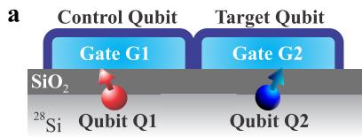</p>
<p>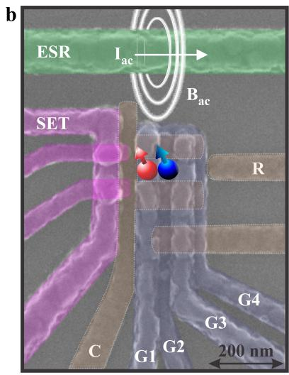</p>
<p>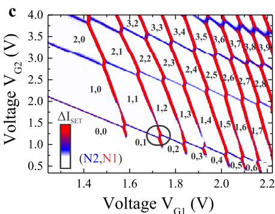</p>
<p>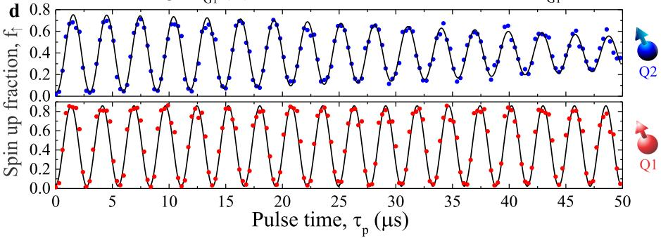</p>
<p>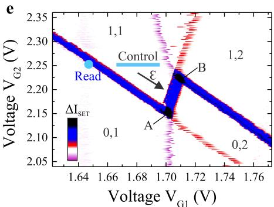<br/>
FIG. 1: Silicon two-qubit logic device, incorporating SET readout and selective qubit control. a Schematic and b SEM coloured image of the device. The quantum dot structure (labels C and G) can be operated as a single or double quantum dot by appropriate biasing of gate electrodes G1-G4, where we choose here to confine the dots underneath G1 and G2. The confinement gate C runs underneath the gates G1-G3 and confines the quantum dot on all sides except on the reservoir side (R). c Stability diagram of the double quantum dot obtained by monitoring the capacitively coupled SET. The difference in distance towards the SET results in different capacitive coupling, such that the individual dots can be easily distinguished. Interestingly, we see that the tunnel coupling of the fourth transition <span class="katex"><span class="katex-html" aria-hidden="true"><span class="base"><span class="strut" style="height:1em;vertical-align:-0.25em;"></span><span class="mopen">(</span><span class="mord"><span class="mord mathrm">N</span><span class="msupsub"><span class="vlist-t vlist-t2"><span class="vlist-r"><span class="vlist" style="height:0.3011em;"><span style="top:-2.55em;margin-left:0em;margin-right:0.05em;"><span class="pstrut" style="height:2.7em;"></span><span class="sizing reset-size6 size3 mtight"><span class="mord mtight"><span class="mord mtight">1</span></span></span></span></span><span class="vlist-s">​</span></span><span class="vlist-r"><span class="vlist" style="height:0.15em;"><span></span></span></span></span></span></span><span class="mspace" style="margin-right:0.2778em;"></span><span class="mrel">=</span><span class="mspace" style="margin-right:0.2778em;"></span></span><span class="base"><span class="strut" style="height:1em;vertical-align:-0.25em;"></span><span class="mord">3</span><span class="mord"><span class="mtable"></span></span><span class="mord">4</span><span class="mclose">)</span></span></span></span> ) of dot 1 is relatively weak, which is due to valley and spin filling, since there is only one state in the lowest orbital that can be occupied. Qubit <span class="katex"><span class="katex-html" aria-hidden="true"><span class="base"><span class="strut" style="height:0.8778em;vertical-align:-0.1944em;"></span><span class="mord"><span class="mord mathrm">Q</span><span class="msupsub"><span class="vlist-t vlist-t2"><span class="vlist-r"><span class="vlist" style="height:0.3011em;"><span style="top:-2.55em;margin-left:0em;margin-right:0.05em;"><span class="pstrut" style="height:2.7em;"></span><span class="sizing reset-size6 size3 mtight"><span class="mord mtight"><span class="mord mathrm mtight">1</span></span></span></span></span><span class="vlist-s">​</span></span><span class="vlist-r"><span class="vlist" style="height:0.15em;"><span></span></span></span></span></span></span></span></span></span> and qubit <span class="katex"><span class="katex-html" aria-hidden="true"><span class="base"><span class="strut" style="height:0.8778em;vertical-align:-0.1944em;"></span><span class="mord"><span class="mord mathrm">Q</span><span class="msupsub"><span class="vlist-t vlist-t2"><span class="vlist-r"><span class="vlist" style="height:0.3011em;"><span style="top:-2.55em;margin-left:0em;margin-right:0.05em;"><span class="pstrut" style="height:2.7em;"></span><span class="sizing reset-size6 size3 mtight"><span class="mord mtight"><span class="mord mathrm mtight">2</span></span></span></span></span><span class="vlist-s">​</span></span><span class="vlist-r"><span class="vlist" style="height:0.15em;"><span></span></span></span></span></span></span></span></span></span> are realized by depleting dot 1 and dot 2 to the last electron. d The quantum dot qubits can be individually controlled by electrically tuning the ESR resonance frequency using the Stark shift [4]. Clear Rabi oscillations for both qubits are observed. e Zoom-in on the <span class="katex"><span class="katex-html" aria-hidden="true"><span class="base"><span class="strut" style="height:1em;vertical-align:-0.25em;"></span><span class="mopen">(</span><span class="mord">1</span><span class="mpunct">,</span><span class="mspace" style="margin-right:0.1667em;"></span><span class="mord">1</span><span class="mclose">)</span><span class="mspace"> </span><span class="mord">–</span><span class="mopen">(</span><span class="mord">0</span><span class="mpunct">,</span><span class="mspace" style="margin-right:0.1667em;"></span><span class="mord">2</span><span class="mclose">)</span></span></span></span> charge states (circled in c); the region where we operate the two-qubit system. Tunnelling of dot 1 to the reservoir R is via dot 2 and results in a hysteresis as function of the sweeping direction due to finite mutual charging energy [26]. All measurements were performed in a dilution refrigerator with base temperature <span class="katex"><span class="katex-html" aria-hidden="true"><span class="base"><span class="strut" style="height:0.6833em;"></span><span class="mord mathnormal" style="margin-right:0.1389em;">T</span><span class="mspace" style="margin-right:0.2778em;"></span><span class="mrel">≈</span><span class="mspace" style="margin-right:0.2778em;"></span></span><span class="base"><span class="strut" style="height:0.6833em;"></span><span class="mord">50</span><span class="mspace nobreak"> </span><span class="mord"><span class="mord mathrm">mK</span></span></span></span></span> and a dc magnetic field <span class="katex"><span class="katex-html" aria-hidden="true"><span class="base"><span class="strut" style="height:0.8333em;vertical-align:-0.15em;"></span><span class="mord"><span class="mord mathnormal" style="margin-right:0.0502em;">B</span><span class="msupsub"><span class="vlist-t vlist-t2"><span class="vlist-r"><span class="vlist" style="height:0.3011em;"><span style="top:-2.55em;margin-left:-0.0502em;margin-right:0.05em;"><span class="pstrut" style="height:2.7em;"></span><span class="sizing reset-size6 size3 mtight"><span class="mord mtight"><span class="mord mtight">0</span></span></span></span></span><span class="vlist-s">​</span></span><span class="vlist-r"><span class="vlist" style="height:0.15em;"><span></span></span></span></span></span></span><span class="mspace" style="margin-right:0.2778em;"></span><span class="mrel">=</span><span class="mspace" style="margin-right:0.2778em;"></span></span><span class="base"><span class="strut" style="height:0.6444em;"></span><span class="mord">1.4</span><span class="mspace"> </span><span class="mspace" style="margin-right:0.2778em;"></span><span class="mrel">:</span><span class="mspace" style="margin-right:0.2778em;"></span></span><span class="base"><span class="strut" style="height:0.6833em;"></span><span class="mord mathrm">T</span></span></span></span> .</p>
<p>[4]. Clear Rabi oscillations are observed for both qubits, as shown in Fig. 1d. The visibility of qubit <span class="katex"><span class="katex-html" aria-hidden="true"><span class="base"><span class="strut" style="height:0.8778em;vertical-align:-0.1944em;"></span><span class="mord"><span class="mord mathrm">Q</span><span class="msupsub"><span class="vlist-t vlist-t2"><span class="vlist-r"><span class="vlist" style="height:0.3011em;"><span style="top:-2.55em;margin-left:0em;margin-right:0.05em;"><span class="pstrut" style="height:2.7em;"></span><span class="sizing reset-size6 size3 mtight"><span class="mord mtight"><span class="mord mathrm mtight">1</span></span></span></span></span><span class="vlist-s">​</span></span><span class="vlist-r"><span class="vlist" style="height:0.15em;"><span></span></span></span></span></span></span></span></span></span> is slightly higher than that of qubit <span class="katex"><span class="katex-html" aria-hidden="true"><span class="base"><span class="strut" style="height:0.8778em;vertical-align:-0.1944em;"></span><span class="mord"><span class="mord mathrm">Q</span><span class="msupsub"><span class="vlist-t vlist-t2"><span class="vlist-r"><span class="vlist" style="height:0.3011em;"><span style="top:-2.55em;margin-left:0em;margin-right:0.05em;"><span class="pstrut" style="height:2.7em;"></span><span class="sizing reset-size6 size3 mtight"><span class="mord mtight"><span class="mord mathrm mtight">2</span></span></span></span></span><span class="vlist-s">​</span></span><span class="vlist-r"><span class="vlist" style="height:0.15em;"><span></span></span></span></span></span></span></span></span></span> due to the stronger capacitive coupling to the SET. Qubit <span class="katex"><span class="katex-html" aria-hidden="true"><span class="base"><span class="strut" style="height:0.8778em;vertical-align:-0.1944em;"></span><span class="mord"><span class="mord mathrm">Q</span><span class="msupsub"><span class="vlist-t vlist-t2"><span class="vlist-r"><span class="vlist" style="height:0.3011em;"><span style="top:-2.55em;margin-left:0em;margin-right:0.05em;"><span class="pstrut" style="height:2.7em;"></span><span class="sizing reset-size6 size3 mtight"><span class="mord mtight"><span class="mord mathrm mtight">1</span></span></span></span></span><span class="vlist-s">​</span></span><span class="vlist-r"><span class="vlist" style="height:0.15em;"><span></span></span></span></span></span></span></span></span></span> has a coherence time of <span class="katex"><span class="katex-html" aria-hidden="true"><span class="base"><span class="strut" style="height:0.9368em;vertical-align:-0.2481em;"></span><span class="mord"><span class="mord mathnormal" style="margin-right:0.1389em;">T</span><span class="msupsub"><span class="vlist-t vlist-t2"><span class="vlist-r"><span class="vlist" style="height:0.6887em;"><span style="top:-2.4519em;margin-left:-0.1389em;margin-right:0.05em;"><span class="pstrut" style="height:2.7em;"></span><span class="sizing reset-size6 size3 mtight"><span class="mord mtight"><span class="mord mtight">2</span></span></span></span><span style="top:-3.063em;margin-right:0.05em;"><span class="pstrut" style="height:2.7em;"></span><span class="sizing reset-size6 size3 mtight"><span class="mord mtight"><span class="mord mtight">∗</span></span></span></span></span><span class="vlist-s">​</span></span><span class="vlist-r"><span class="vlist" style="height:0.2481em;"><span></span></span></span></span></span></span><span class="mspace" style="margin-right:0.2778em;"></span><span class="mrel">=</span><span class="mspace" style="margin-right:0.2778em;"></span></span><span class="base"><span class="strut" style="height:0.8389em;vertical-align:-0.1944em;"></span><span class="mord">120</span><span class="mord mathnormal">μ</span><span class="mord mathrm">s</span></span></span></span> , with a <span class="katex"><span class="katex-html" aria-hidden="true"><span class="base"><span class="strut" style="height:0.8333em;vertical-align:-0.15em;"></span><span class="mord"><span class="mord mathnormal" style="margin-right:0.1389em;">T</span><span class="msupsub"><span class="vlist-t vlist-t2"><span class="vlist-r"><span class="vlist" style="height:0.3011em;"><span style="top:-2.55em;margin-left:-0.1389em;margin-right:0.05em;"><span class="pstrut" style="height:2.7em;"></span><span class="sizing reset-size6 size3 mtight"><span class="mord mtight"><span class="mord mtight">2</span></span></span></span></span><span class="vlist-s">​</span></span><span class="vlist-r"><span class="vlist" style="height:0.15em;"><span></span></span></span></span></span></span></span></span></span> that can be extended up to 28 ms using CPMG pulses [4]. Qubit <span class="katex"><span class="katex-html" aria-hidden="true"><span class="base"><span class="strut" style="height:0.8778em;vertical-align:-0.1944em;"></span><span class="mord"><span class="mord mathrm">Q</span><span class="msupsub"><span class="vlist-t vlist-t2"><span class="vlist-r"><span class="vlist" style="height:0.3011em;"><span style="top:-2.55em;margin-left:0em;margin-right:0.05em;"><span class="pstrut" style="height:2.7em;"></span><span class="sizing reset-size6 size3 mtight"><span class="mord mtight"><span class="mord mathrm mtight">2</span></span></span></span></span><span class="vlist-s">​</span></span><span class="vlist-r"><span class="vlist" style="height:0.15em;"><span></span></span></span></span></span></span></span></span></span> has a slightly shorter coherence time and using a Ramsey experiment we find <span class="katex"><span class="katex-html" aria-hidden="true"><span class="base"><span class="strut" style="height:0.9368em;vertical-align:-0.2481em;"></span><span class="mord"><span class="mord mathnormal" style="margin-right:0.1389em;">T</span><span class="msupsub"><span class="vlist-t vlist-t2"><span class="vlist-r"><span class="vlist" style="height:0.6887em;"><span style="top:-2.4519em;margin-left:-0.1389em;margin-right:0.05em;"><span class="pstrut" style="height:2.7em;"></span><span class="sizing reset-size6 size3 mtight"><span class="mord mtight"><span class="mord mtight">2</span></span></span></span><span style="top:-3.063em;margin-right:0.05em;"><span class="pstrut" style="height:2.7em;"></span><span class="sizing reset-size6 size3 mtight"><span class="mord mtight"><span class="mord mtight">∗</span></span></span></span></span><span class="vlist-s">​</span></span><span class="vlist-r"><span class="vlist" style="height:0.2481em;"><span></span></span></span></span></span></span><span class="mspace" style="margin-right:0.2778em;"></span><span class="mrel">=</span><span class="mspace" style="margin-right:0.2778em;"></span></span><span class="base"><span class="strut" style="height:0.8389em;vertical-align:-0.1944em;"></span><span class="mord">61</span><span class="mspace nobreak"> </span><span class="mord mathnormal">μ</span><span class="mord mathrm">s</span></span></span></span> , comparable to its Rabi decay time (see Supplementary Information section 2). We ascribe this difference to finite coupling of the reservoir to qubit <span class="katex"><span class="katex-html" aria-hidden="true"><span class="base"><span class="strut" style="height:0.8778em;vertical-align:-0.1944em;"></span><span class="mord"><span class="mord mathrm">Q</span><span class="msupsub"><span class="vlist-t vlist-t2"><span class="vlist-r"><span class="vlist" style="height:0.3011em;"><span style="top:-2.55em;margin-left:0em;margin-right:0.05em;"><span class="pstrut" style="height:2.7em;"></span><span class="sizing reset-size6 size3 mtight"><span class="mord mtight"><span class="mord mathrm mtight">2</span></span></span></span></span><span class="vlist-s">​</span></span><span class="vlist-r"><span class="vlist" style="height:0.15em;"><span></span></span></span></span></span></span></span></span></span> , since we observed that the coherence time increased with decreasing reservoir coupling, achieved by biasing the qubit states further away from the Fermi level in the reservoir.</p>
<p>Spin qubits can be coupled capacitively, as proposed by Taylor et al. [25], but here we couple the qubits directly via the exchange interaction as discussed in the seminal work of Loss and DiVincenzo [2], which is expected to be the mechanism with the faster two-qubit operations. The exchange coupling can be controlled with the detuning energy <span class="katex"><span class="katex-html" aria-hidden="true"><span class="base"><span class="strut" style="height:0.4306em;"></span><span class="mord mathnormal">ϵ</span></span></span></span> as depicted</p>
<p>in Fig.1e, which controls the energy separation between the <span class="katex"><span class="katex-html" aria-hidden="true"><span class="base"><span class="strut" style="height:1em;vertical-align:-0.25em;"></span><span class="mopen">(</span><span class="mord">1</span><span class="mpunct">,</span><span class="mspace" style="margin-right:0.1667em;"></span><span class="mord">1</span><span class="mclose">)</span></span></span></span> and <span class="katex"><span class="katex-html" aria-hidden="true"><span class="base"><span class="strut" style="height:1em;vertical-align:-0.25em;"></span><span class="mopen">(</span><span class="mord">0</span><span class="mpunct">,</span><span class="mspace" style="margin-right:0.1667em;"></span><span class="mord">2</span><span class="mclose">)</span></span></span></span> charge states. In Fig.1e, we have lowered the reservoir-dot 2 coupling so that the tunneling time is <span class="katex"><span class="katex-html" aria-hidden="true"><span class="base"><span class="strut" style="height:0.8389em;vertical-align:-0.1944em;"></span><span class="mord"><span class="mrel">∼</span></span><span class="mord">100</span><span class="mord mathnormal">μ</span><span class="mord mathrm">s</span></span></span></span> , which is the coupling during read out in the two-qubit experiments. In this range of weak reservoir-dot 1 coupling, the emptying and filling of dot 1 is hysteretic with gate voltage, since the mutual charging energy becomes relevant, as dot 1 can only tunnel when it aligns in energy with dot 2 [26]. At the nodes of the <span class="katex"><span class="katex-html" aria-hidden="true"><span class="base"><span class="strut" style="height:1em;vertical-align:-0.25em;"></span><span class="mopen">(</span><span class="mord">1</span><span class="mpunct">,</span><span class="mspace" style="margin-right:0.1667em;"></span><span class="mord">1</span><span class="mclose">)</span><span class="mspace"> </span><span class="mord">–</span><span class="mopen">(</span><span class="mord">0</span><span class="mpunct">,</span><span class="mspace" style="margin-right:0.1667em;"></span><span class="mord">2</span><span class="mclose">)</span></span></span></span> crossing (A and B in Fig. 1e), electrons tunnel between dot 1 and the reservoir (via dot 2) and the signal is therefore maximised, whereas in the middle of the transition tunnelling is between dot 1 and dot 2 giving rise to a smaller signal, which is comparable to tunnelling between dot 2 and the reservoir. We control the two-qubit system in the <span class="katex"><span class="katex-html" aria-hidden="true"><span class="base"><span class="strut" style="height:1em;vertical-align:-0.25em;"></span><span class="mopen">(</span><span class="mord">1</span><span class="mpunct">,</span><span class="mspace" style="margin-right:0.1667em;"></span><span class="mord">1</span><span class="mclose">)</span></span></span></span> region and read out <span class="katex"><span class="katex-html" aria-hidden="true"><span class="base"><span class="strut" style="height:0.8778em;vertical-align:-0.1944em;"></span><span class="mord"><span class="mord mathrm">Q</span><span class="msupsub"><span class="vlist-t vlist-t2"><span class="vlist-r"><span class="vlist" style="height:0.3011em;"><span style="top:-2.55em;margin-left:0em;margin-right:0.05em;"><span class="pstrut" style="height:2.7em;"></span><span class="sizing reset-size6 size3 mtight"><span class="mord mtight"><span class="mord mathrm mtight">2</span></span></span></span></span><span class="vlist-s">​</span></span><span class="vlist-r"><span class="vlist" style="height:0.15em;"><span></span></span></span></span></span></span></span></span></span> at the <span class="katex"><span class="katex-html" aria-hidden="true"><span class="base"><span class="strut" style="height:1em;vertical-align:-0.25em;"></span><span class="mopen">(</span><span class="mord">1</span><span class="mpunct">,</span><span class="mspace" style="margin-right:0.1667em;"></span><span class="mord">1</span><span class="mclose">)</span></span></span></span> - <span class="katex"><span class="katex-html" aria-hidden="true"><span class="base"><span class="strut" style="height:1em;vertical-align:-0.25em;"></span><span class="mopen">(</span><span class="mord">0</span><span class="mpunct">,</span><span class="mspace" style="margin-right:0.1667em;"></span><span class="mord">1</span><span class="mclose">)</span></span></span></span> transition.</p>
<p>The general protocol for the two-qubit operation consists of applying microwave pulses on control qubit <span class="katex"><span class="katex-html" aria-hidden="true"><span class="base"><span class="strut" style="height:0.8778em;vertical-align:-0.1944em;"></span><span class="mord"><span class="mord mathrm">Q</span><span class="msupsub"><span class="vlist-t vlist-t2"><span class="vlist-r"><span class="vlist" style="height:0.3011em;"><span style="top:-2.55em;margin-left:0em;margin-right:0.05em;"><span class="pstrut" style="height:2.7em;"></span><span class="sizing reset-size6 size3 mtight"><span class="mord mtight"><span class="mord mathrm mtight">1</span></span></span></span></span><span class="vlist-s">​</span></span><span class="vlist-r"><span class="vlist" style="height:0.15em;"><span></span></span></span></span></span></span></span></span></span> and target qubit <span class="katex"><span class="katex-html" aria-hidden="true"><span class="base"><span class="strut" style="height:0.8778em;vertical-align:-0.1944em;"></span><span class="mord"><span class="mord mathrm">Q</span><span class="msupsub"><span class="vlist-t vlist-t2"><span class="vlist-r"><span class="vlist" style="height:0.3011em;"><span style="top:-2.55em;margin-left:0em;margin-right:0.05em;"><span class="pstrut" style="height:2.7em;"></span><span class="sizing reset-size6 size3 mtight"><span class="mord mtight"><span class="mord mathrm mtight">2</span></span></span></span></span><span class="vlist-s">​</span></span><span class="vlist-r"><span class="vlist" style="height:0.15em;"><span></span></span></span></span></span></span></span></span></span> and voltage pulses to tune the exchange coupling between the qubits, followed by readout on <span class="katex"><span class="katex-html" aria-hidden="true"><span class="base"><span class="strut" style="height:0.8778em;vertical-align:-0.1944em;"></span><span class="mord"><span class="mord mathrm">Q</span><span class="msupsub"><span class="vlist-t vlist-t2"><span class="vlist-r"><span class="vlist" style="height:0.3011em;"><span style="top:-2.55em;margin-left:0em;margin-right:0.05em;"><span class="pstrut" style="height:2.7em;"></span><span class="sizing reset-size6 size3 mtight"><span class="mord mtight"><span class="mord mathrm mtight">2</span></span></span></span></span><span class="vlist-s">​</span></span><span class="vlist-r"><span class="vlist" style="height:0.15em;"><span></span></span></span></span></span></span></span></span></span> . By exploiting</p>
<p>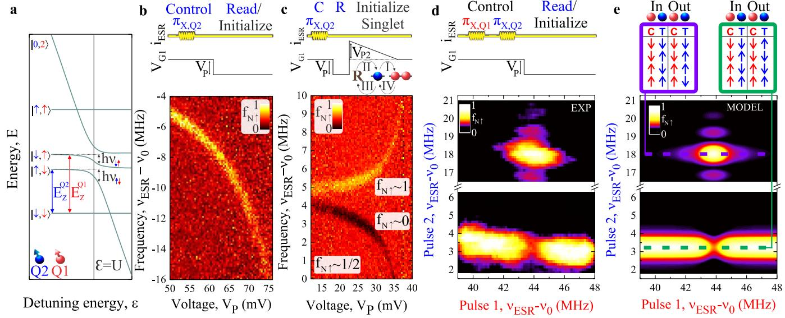<br/>
FIG. 2: Exchange spin funnel and CNOT via CROT. a Schematic of the coupling between qubit <span class="katex"><span class="katex-html" aria-hidden="true"><span class="base"><span class="strut" style="height:0.8778em;vertical-align:-0.1944em;"></span><span class="mord"><span class="mord mathrm">Q</span><span class="msupsub"><span class="vlist-t vlist-t2"><span class="vlist-r"><span class="vlist" style="height:0.3011em;"><span style="top:-2.55em;margin-left:0em;margin-right:0.05em;"><span class="pstrut" style="height:2.7em;"></span><span class="sizing reset-size6 size3 mtight"><span class="mord mtight"><span class="mord mathrm mtight">1</span></span></span></span></span><span class="vlist-s">​</span></span><span class="vlist-r"><span class="vlist" style="height:0.15em;"><span></span></span></span></span></span></span></span></span></span> and <span class="katex"><span class="katex-html" aria-hidden="true"><span class="base"><span class="strut" style="height:0.8778em;vertical-align:-0.1944em;"></span><span class="mord"><span class="mord mathrm">Q</span><span class="msupsub"><span class="vlist-t vlist-t2"><span class="vlist-r"><span class="vlist" style="height:0.3011em;"><span style="top:-2.55em;margin-left:0em;margin-right:0.05em;"><span class="pstrut" style="height:2.7em;"></span><span class="sizing reset-size6 size3 mtight"><span class="mord mtight"><span class="mord mathrm mtight">2</span></span></span></span></span><span class="vlist-s">​</span></span><span class="vlist-r"><span class="vlist" style="height:0.15em;"><span></span></span></span></span></span></span></span></span></span> using the exchange interaction at the <span class="katex"><span class="katex-html" aria-hidden="true"><span class="base"><span class="strut" style="height:1em;vertical-align:-0.25em;"></span><span class="mord">∣1</span><span class="mpunct">,</span><span class="mspace" style="margin-right:0.1667em;"></span><span class="mord">1</span><span class="mclose">⟩</span><span class="mspace"> </span><span class="mord">–∣0</span><span class="mpunct">,</span><span class="mspace" style="margin-right:0.1667em;"></span><span class="mord">2</span><span class="mclose">⟩</span></span></span></span> transition. The <span class="katex"><span class="katex-html" aria-hidden="true"><span class="base"><span class="strut" style="height:0.6389em;vertical-align:-0.1944em;"></span><span class="mord mathbf" style="margin-right:0.016em;">g</span></span></span></span> -factors of <span class="katex"><span class="katex-html" aria-hidden="true"><span class="base"><span class="strut" style="height:0.8778em;vertical-align:-0.1944em;"></span><span class="mord"><span class="mord mathrm">Q</span><span class="msupsub"><span class="vlist-t vlist-t2"><span class="vlist-r"><span class="vlist" style="height:0.3011em;"><span style="top:-2.55em;margin-left:0em;margin-right:0.05em;"><span class="pstrut" style="height:2.7em;"></span><span class="sizing reset-size6 size3 mtight"><span class="mord mtight"><span class="mord mathrm mtight">1</span></span></span></span></span><span class="vlist-s">​</span></span><span class="vlist-r"><span class="vlist" style="height:0.15em;"><span></span></span></span></span></span></span></span></span></span> and <span class="katex"><span class="katex-html" aria-hidden="true"><span class="base"><span class="strut" style="height:0.8778em;vertical-align:-0.1944em;"></span><span class="mord"><span class="mord mathrm">Q</span><span class="msupsub"><span class="vlist-t vlist-t2"><span class="vlist-r"><span class="vlist" style="height:0.3011em;"><span style="top:-2.55em;margin-left:0em;margin-right:0.05em;"><span class="pstrut" style="height:2.7em;"></span><span class="sizing reset-size6 size3 mtight"><span class="mord mtight"><span class="mord mathrm mtight">2</span></span></span></span></span><span class="vlist-s">​</span></span><span class="vlist-r"><span class="vlist" style="height:0.15em;"><span></span></span></span></span></span></span></span></span></span> are electrically tuned to result in a frequency difference of 40MHz (the difference is exaggerated in the schematic for clarity) for individual qubit control. b ESR spectrum of the <span class="katex"><span class="katex-html" aria-hidden="true"><span class="base"><span class="strut" style="height:1em;vertical-align:-0.25em;"></span><span class="mord">∣</span><span class="mord"><span class="mrel">↓</span></span><span class="mpunct">,</span><span class="mspace" style="margin-right:0.1667em;"></span><span class="mord"><span class="mrel">↓</span></span><span class="mclose">⟩</span></span></span></span> -|↑, ↓i transition as a function of increasing detuning. c ESR spectrum, but now with an additional pulse with amplitude <span class="katex"><span class="katex-html" aria-hidden="true"><span class="base"><span class="strut" style="height:0.8333em;vertical-align:-0.15em;"></span><span class="mord"><span class="mord mathnormal" style="margin-right:0.2222em;">V</span><span class="msupsub"><span class="vlist-t vlist-t2"><span class="vlist-r"><span class="vlist" style="height:0.3283em;"><span style="top:-2.55em;margin-left:-0.2222em;margin-right:0.05em;"><span class="pstrut" style="height:2.7em;"></span><span class="sizing reset-size6 size3 mtight"><span class="mord mtight"><span class="mord mathnormal mtight" style="margin-right:0.1389em;">P</span><span class="mord mtight">2</span></span></span></span></span><span class="vlist-s">​</span></span><span class="vlist-r"><span class="vlist" style="height:0.15em;"><span></span></span></span></span></span></span></span></span></span> (see schematic) so that we achieve singlet initialization. Using this method we observe both the <span class="katex"><span class="katex-html" aria-hidden="true"><span class="base"><span class="strut" style="height:1em;vertical-align:-0.25em;"></span><span class="mord">∣</span><span class="mord"><span class="mrel">↑</span><span class="mpunct">,</span><span class="mspace" style="margin-right:0.2778em;"></span><span class="mrel">↓</span></span><span class="mclose">⟩</span></span></span></span> to <span class="katex"><span class="katex-html" aria-hidden="true"><span class="base"><span class="strut" style="height:1em;vertical-align:-0.25em;"></span><span class="mord">∣</span><span class="mord"><span class="mrel">↓</span></span><span class="mpunct">,</span><span class="mspace" style="margin-right:0.1667em;"></span><span class="mord"><span class="mrel">↓</span></span><span class="mclose">⟩</span></span></span></span> and <span class="katex"><span class="katex-html" aria-hidden="true"><span class="base"><span class="strut" style="height:1em;vertical-align:-0.25em;"></span><span class="mord">∣</span><span class="mord"><span class="mrel">↓</span></span><span class="mpunct">,</span><span class="mspace" style="margin-right:0.1667em;"></span><span class="mord"><span class="mrel">↑</span></span><span class="mclose">⟩</span></span></span></span> to <span class="katex"><span class="katex-html" aria-hidden="true"><span class="base"><span class="strut" style="height:1em;vertical-align:-0.25em;"></span><span class="mord">∣</span><span class="mord"><span class="mrel">↑</span></span><span class="mpunct">,</span><span class="mspace" style="margin-right:0.1667em;"></span><span class="mord"><span class="mrel">↑</span></span><span class="mclose">⟩</span></span></span></span> transitions. Due to singlet initialization, the background spin-up fraction increases to 1/2, and the lower ESR branch results in a decay rather than an increase of the spin-up fraction. d Realization of a CNOT operation by applying a <span class="katex"><span class="katex-html" aria-hidden="true"><span class="base"><span class="strut" style="height:0.4306em;"></span><span class="mord mathnormal" style="margin-right:0.0359em;">π</span></span></span></span> -pulse to <span class="katex"><span class="katex-html" aria-hidden="true"><span class="base"><span class="strut" style="height:0.8778em;vertical-align:-0.1944em;"></span><span class="mord"><span class="mord mathrm">Q</span><span class="msupsub"><span class="vlist-t vlist-t2"><span class="vlist-r"><span class="vlist" style="height:0.3011em;"><span style="top:-2.55em;margin-left:0em;margin-right:0.05em;"><span class="pstrut" style="height:2.7em;"></span><span class="sizing reset-size6 size3 mtight"><span class="mord mtight"><span class="mord mathrm mtight">1</span></span></span></span></span><span class="vlist-s">​</span></span><span class="vlist-r"><span class="vlist" style="height:0.15em;"><span></span></span></span></span></span></span></span></span></span> before operation on <span class="katex"><span class="katex-html" aria-hidden="true"><span class="base"><span class="strut" style="height:0.8778em;vertical-align:-0.1944em;"></span><span class="mord"><span class="mord mathrm">Q</span><span class="msupsub"><span class="vlist-t vlist-t2"><span class="vlist-r"><span class="vlist" style="height:0.3011em;"><span style="top:-2.55em;margin-left:0em;margin-right:0.05em;"><span class="pstrut" style="height:2.7em;"></span><span class="sizing reset-size6 size3 mtight"><span class="mord mtight"><span class="mord mathrm mtight">2</span></span></span></span></span><span class="vlist-s">​</span></span><span class="vlist-r"><span class="vlist" style="height:0.15em;"><span></span></span></span></span></span></span></span></span></span> . We find that <span class="katex"><span class="katex-html" aria-hidden="true"><span class="base"><span class="strut" style="height:0.8778em;vertical-align:-0.1944em;"></span><span class="mord"><span class="mord mathrm">Q</span><span class="msupsub"><span class="vlist-t vlist-t2"><span class="vlist-r"><span class="vlist" style="height:0.3011em;"><span style="top:-2.55em;margin-left:0em;margin-right:0.05em;"><span class="pstrut" style="height:2.7em;"></span><span class="sizing reset-size6 size3 mtight"><span class="mord mtight"><span class="mord mathrm mtight">2</span></span></span></span></span><span class="vlist-s">​</span></span><span class="vlist-r"><span class="vlist" style="height:0.15em;"><span></span></span></span></span></span></span></span></span></span> rotates depending on <span class="katex"><span class="katex-html" aria-hidden="true"><span class="base"><span class="strut" style="height:0.8778em;vertical-align:-0.1944em;"></span><span class="mord"><span class="mord mathrm">Q</span><span class="msupsub"><span class="vlist-t vlist-t2"><span class="vlist-r"><span class="vlist" style="height:0.3011em;"><span style="top:-2.55em;margin-left:0em;margin-right:0.05em;"><span class="pstrut" style="height:2.7em;"></span><span class="sizing reset-size6 size3 mtight"><span class="mord mtight"><span class="mord mathrm mtight">1</span></span></span></span></span><span class="vlist-s">​</span></span><span class="vlist-r"><span class="vlist" style="height:0.15em;"><span></span></span></span></span></span></span></span></span></span> , as the <span class="katex"><span class="katex-html" aria-hidden="true"><span class="base"><span class="strut" style="height:0.5806em;vertical-align:-0.15em;"></span><span class="mord"><span class="mord mathnormal" style="margin-right:0.0359em;">σ</span><span class="msupsub"><span class="vlist-t vlist-t2"><span class="vlist-r"><span class="vlist" style="height:0.1514em;"><span style="top:-2.55em;margin-left:-0.0359em;margin-right:0.05em;"><span class="pstrut" style="height:2.7em;"></span><span class="sizing reset-size6 size3 mtight"><span class="mord mtight"><span class="mord mathnormal mtight" style="margin-right:0.044em;">z</span></span></span></span></span><span class="vlist-s">​</span></span><span class="vlist-r"><span class="vlist" style="height:0.15em;"><span></span></span></span></span></span></span></span></span></span> -component controls the ESR resonance frequency of <span class="katex"><span class="katex-html" aria-hidden="true"><span class="base"><span class="strut" style="height:0.8778em;vertical-align:-0.1944em;"></span><span class="mord"><span class="mord mathrm">Q</span><span class="msupsub"><span class="vlist-t vlist-t2"><span class="vlist-r"><span class="vlist" style="height:0.3011em;"><span style="top:-2.55em;margin-left:0em;margin-right:0.05em;"><span class="pstrut" style="height:2.7em;"></span><span class="sizing reset-size6 size3 mtight"><span class="mord mtight"><span class="mord mathrm mtight">2</span></span></span></span></span><span class="vlist-s">​</span></span><span class="vlist-r"><span class="vlist" style="height:0.15em;"><span></span></span></span></span></span></span></span></span></span> . e We find qualitative agreement with a model that includes decoherence, where the <span class="katex"><span class="katex-html" aria-hidden="true"><span class="base"><span class="strut" style="height:1em;vertical-align:-0.25em;"></span><span class="minner"><span class="mopen delimcenter" style="top:0em;">∣</span><span class="mrel">↑</span><span class="mpunct">,</span><span class="mspace" style="margin-right:0.2778em;"></span><span class="mrel">↓</span><span class="mclose nulldelimiter"></span></span></span></span></span> -state has the shortest coherence time of <span class="katex"><span class="katex-html" aria-hidden="true"><span class="base"><span class="strut" style="height:0.8389em;vertical-align:-0.1944em;"></span><span class="mord"><span class="mrel">∼</span></span><span class="mord">2</span><span class="mord mathnormal">μ</span><span class="mord mathrm">s</span></span></span></span> . From a we see that this state has the largest <span class="katex"><span class="katex-html" aria-hidden="true"><span class="base"><span class="strut" style="height:1em;vertical-align:-0.25em;"></span><span class="mord mathnormal" style="margin-right:0.0379em;">δ</span><span class="mord mathnormal" style="margin-right:0.0637em;">ν</span><span class="mord">/</span><span class="mord mathnormal" style="margin-right:0.0379em;">δ</span><span class="mord"><span class="mord mathnormal" style="margin-right:0.2222em;">V</span><span class="msupsub"><span class="vlist-t vlist-t2"><span class="vlist-r"><span class="vlist" style="height:0.3283em;"><span style="top:-2.55em;margin-left:-0.2222em;margin-right:0.05em;"><span class="pstrut" style="height:2.7em;"></span><span class="sizing reset-size6 size3 mtight"><span class="mord mtight"><span class="mord mathnormal mtight" style="margin-right:0.1389em;">P</span></span></span></span></span><span class="vlist-s">​</span></span><span class="vlist-r"><span class="vlist" style="height:0.15em;"><span></span></span></span></span></span></span></span></span></span> , and is therefore the most sensitive to electrical noise. The tables in e show the two-qubit spin logic operations at the purple and green dotted lines, respectively. The data of b and d have been obtained using the same voltages on all the gates, while the voltages used for the experiment shown in c are different. The data has been offset by a frequency <span class="katex"><span class="katex-html" aria-hidden="true"><span class="base"><span class="strut" style="height:0.5806em;vertical-align:-0.15em;"></span><span class="mord"><span class="mord mathnormal" style="margin-right:0.0637em;">ν</span><span class="msupsub"><span class="vlist-t vlist-t2"><span class="vlist-r"><span class="vlist" style="height:0.3011em;"><span style="top:-2.55em;margin-left:-0.0637em;margin-right:0.05em;"><span class="pstrut" style="height:2.7em;"></span><span class="sizing reset-size6 size3 mtight"><span class="mord mtight"><span class="mord mtight">0</span></span></span></span></span><span class="vlist-s">​</span></span><span class="vlist-r"><span class="vlist" style="height:0.15em;"><span></span></span></span></span></span></span><span class="mspace" style="margin-right:0.2778em;"></span><span class="mrel">=</span><span class="mspace" style="margin-right:0.2778em;"></span></span><span class="base"><span class="strut" style="height:0.6833em;"></span><span class="mord">39.14</span><span class="mord"><span class="mord mathrm">GHz</span></span></span></span></span> for clarity.</p>
<p>the Stark shift [4], we electrically control the effective <span class="katex"><span class="katex-html" aria-hidden="true"><span class="base"><span class="strut" style="height:0.625em;vertical-align:-0.1944em;"></span><span class="mord mathnormal" style="margin-right:0.0359em;">g</span></span></span></span> -factor of <span class="katex"><span class="katex-html" aria-hidden="true"><span class="base"><span class="strut" style="height:0.8778em;vertical-align:-0.1944em;"></span><span class="mord"><span class="mord mathrm">Q</span><span class="msupsub"><span class="vlist-t vlist-t2"><span class="vlist-r"><span class="vlist" style="height:0.3011em;"><span style="top:-2.55em;margin-left:0em;margin-right:0.05em;"><span class="pstrut" style="height:2.7em;"></span><span class="sizing reset-size6 size3 mtight"><span class="mord mtight"><span class="mord mathrm mtight">1</span></span></span></span></span><span class="vlist-s">​</span></span><span class="vlist-r"><span class="vlist" style="height:0.15em;"><span></span></span></span></span></span></span></span></span></span> and <span class="katex"><span class="katex-html" aria-hidden="true"><span class="base"><span class="strut" style="height:0.8778em;vertical-align:-0.1944em;"></span><span class="mord"><span class="mord mathrm">Q</span><span class="msupsub"><span class="vlist-t vlist-t2"><span class="vlist-r"><span class="vlist" style="height:0.3011em;"><span style="top:-2.55em;margin-left:0em;margin-right:0.05em;"><span class="pstrut" style="height:2.7em;"></span><span class="sizing reset-size6 size3 mtight"><span class="mord mtight"><span class="mord mathrm mtight">2</span></span></span></span></span><span class="vlist-s">​</span></span><span class="vlist-r"><span class="vlist" style="height:0.15em;"><span></span></span></span></span></span></span></span></span></span> , to tune the Zeeman energy <span class="katex"><span class="katex-html" aria-hidden="true"><span class="base"><span class="strut" style="height:1.2255em;vertical-align:-0.2935em;"></span><span class="mord"><span class="mord mathnormal" style="margin-right:0.0576em;">E</span><span class="msupsub"><span class="vlist-t vlist-t2"><span class="vlist-r"><span class="vlist" style="height:0.932em;"><span style="top:-2.4065em;margin-left:-0.0576em;margin-right:0.05em;"><span class="pstrut" style="height:2.7em;"></span><span class="sizing reset-size6 size3 mtight"><span class="mord mtight"><span class="mord mathnormal mtight" style="margin-right:0.0715em;">Z</span></span></span></span><span style="top:-3.1809em;margin-right:0.05em;"><span class="pstrut" style="height:2.7em;"></span><span class="sizing reset-size6 size3 mtight"><span class="mord mtight"><span class="mord mtight">1</span><span class="mpunct mtight">,</span><span class="mord mtight">2</span></span></span></span></span><span class="vlist-s">​</span></span><span class="vlist-r"><span class="vlist" style="height:0.2935em;"><span></span></span></span></span></span></span><span class="mspace" style="margin-right:0.2778em;"></span><span class="mrel">=</span><span class="mspace" style="margin-right:0.2778em;"></span></span><span class="base"><span class="strut" style="height:0.9694em;vertical-align:-0.2861em;"></span><span class="mord"><span class="mord mathnormal" style="margin-right:0.0359em;">g</span><span class="msupsub"><span class="vlist-t vlist-t2"><span class="vlist-r"><span class="vlist" style="height:0.3011em;"><span style="top:-2.55em;margin-left:-0.0359em;margin-right:0.05em;"><span class="pstrut" style="height:2.7em;"></span><span class="sizing reset-size6 size3 mtight"><span class="mord mtight"><span class="mord mtight">1</span><span class="mpunct mtight">,</span><span class="mord mtight">2</span></span></span></span></span><span class="vlist-s">​</span></span><span class="vlist-r"><span class="vlist" style="height:0.2861em;"><span></span></span></span></span></span></span><span class="mord"><span class="mord mathnormal">μ</span><span class="msupsub"><span class="vlist-t vlist-t2"><span class="vlist-r"><span class="vlist" style="height:0.3283em;"><span style="top:-2.55em;margin-left:0em;margin-right:0.05em;"><span class="pstrut" style="height:2.7em;"></span><span class="sizing reset-size6 size3 mtight"><span class="mord mtight"><span class="mord mathnormal mtight" style="margin-right:0.0502em;">B</span></span></span></span></span><span class="vlist-s">​</span></span><span class="vlist-r"><span class="vlist" style="height:0.15em;"><span></span></span></span></span></span></span><span class="mord"><span class="mord mathnormal" style="margin-right:0.0502em;">B</span><span class="msupsub"><span class="vlist-t vlist-t2"><span class="vlist-r"><span class="vlist" style="height:0.3283em;"><span style="top:-2.55em;margin-left:-0.0502em;margin-right:0.05em;"><span class="pstrut" style="height:2.7em;"></span><span class="sizing reset-size6 size3 mtight"><span class="mord mtight"><span class="mord mathnormal mtight" style="margin-right:0.0715em;">Z</span></span></span></span></span><span class="vlist-s">​</span></span><span class="vlist-r"><span class="vlist" style="height:0.15em;"><span></span></span></span></span></span></span></span></span></span> and the associated qubit resonance frequency <span class="katex"><span class="katex-html" aria-hidden="true"><span class="base"><span class="strut" style="height:0.7167em;vertical-align:-0.2861em;"></span><span class="mord"><span class="mord mathnormal" style="margin-right:0.0637em;">ν</span><span class="msupsub"><span class="vlist-t vlist-t2"><span class="vlist-r"><span class="vlist" style="height:0.3011em;"><span style="top:-2.55em;margin-left:-0.0637em;margin-right:0.05em;"><span class="pstrut" style="height:2.7em;"></span><span class="sizing reset-size6 size3 mtight"><span class="mord mtight"><span class="mord mtight">1</span><span class="mpunct mtight">,</span><span class="mord mtight">2</span></span></span></span></span><span class="vlist-s">​</span></span><span class="vlist-r"><span class="vlist" style="height:0.2861em;"><span></span></span></span></span></span></span><span class="mspace" style="margin-right:0.2778em;"></span><span class="mrel">=</span><span class="mspace" style="margin-right:0.2778em;"></span></span><span class="base"><span class="strut" style="height:1.2255em;vertical-align:-0.2935em;"></span><span class="mord"><span class="mord mathnormal" style="margin-right:0.0576em;">E</span><span class="msupsub"><span class="vlist-t vlist-t2"><span class="vlist-r"><span class="vlist" style="height:0.932em;"><span style="top:-2.4065em;margin-left:-0.0576em;margin-right:0.05em;"><span class="pstrut" style="height:2.7em;"></span><span class="sizing reset-size6 size3 mtight"><span class="mord mtight"><span class="mord mathnormal mtight" style="margin-right:0.0715em;">Z</span></span></span></span><span style="top:-3.1809em;margin-right:0.05em;"><span class="pstrut" style="height:2.7em;"></span><span class="sizing reset-size6 size3 mtight"><span class="mord mtight"><span class="mord mtight">1</span><span class="mpunct mtight">,</span><span class="mord mtight">2</span></span></span></span></span><span class="vlist-s">​</span></span><span class="vlist-r"><span class="vlist" style="height:0.2935em;"><span></span></span></span></span></span></span><span class="mord">/</span><span class="mord mathnormal">h</span></span></span></span> in order to realise individual qubit control. While the spinorbit coupling in silicon is small [27], the valley degeneracy in silicon can complicate the qubit coupling [28] and even the single-qubit operation [19]. However, the presence of a large valley splitting energy in silicon MOS quantum dots [4, 29], combined with a large on-site Coulomb energy <span class="katex"><span class="katex-html" aria-hidden="true"><span class="base"><span class="strut" style="height:0.6833em;"></span><span class="mord mathnormal" style="margin-right:0.109em;">U</span></span></span></span> compared to the inter-dot tunnel coupling <span class="katex"><span class="katex-html" aria-hidden="true"><span class="base"><span class="strut" style="height:0.7651em;vertical-align:-0.15em;"></span><span class="mord"><span class="mord mathnormal">t</span><span class="msupsub"><span class="vlist-t vlist-t2"><span class="vlist-r"><span class="vlist" style="height:0.3011em;"><span style="top:-2.55em;margin-left:0em;margin-right:0.05em;"><span class="pstrut" style="height:2.7em;"></span><span class="sizing reset-size6 size3 mtight"><span class="mord mtight"><span class="mord mtight">0</span></span></span></span></span><span class="vlist-s">​</span></span><span class="vlist-r"><span class="vlist" style="height:0.15em;"><span></span></span></span></span></span></span></span></span></span> , allows us to neglect all two-particle processes that can occur. We can consequently describe the system in the rotating wave approximation in the basis <span class="katex"><span class="katex-html" aria-hidden="true"><span class="base"><span class="strut" style="height:0.6833em;"></span><span class="mord">Ψ</span><span class="mspace" style="margin-right:0.2778em;"></span><span class="mrel">=</span><span class="mspace" style="margin-right:0.2778em;"></span></span><span class="base"><span class="strut" style="height:1em;vertical-align:-0.25em;"></span><span class="minner"><span class="mopen delimcenter" style="top:0em;">[</span><span class="minner"><span class="mopen delimcenter" style="top:0em;">∣</span><span class="mrel">↑</span><span class="mpunct">,</span><span class="mspace" style="margin-right:0.2778em;"></span><span class="mrel">↑</span><span class="mclose nulldelimiter"></span></span><span class="mspace" style="margin-right:0.1667em;"></span><span class="mpunct">,</span><span class="mspace" style="margin-right:0.1667em;"></span><span class="minner"><span class="mopen delimcenter" style="top:0em;">∣</span><span class="mrel">↑</span><span class="mpunct">,</span><span class="mspace" style="margin-right:0.2778em;"></span><span class="mrel">↓</span><span class="mclose nulldelimiter"></span></span><span class="mspace" style="margin-right:0.1667em;"></span><span class="mpunct">,</span><span class="mspace" style="margin-right:0.1667em;"></span><span class="minner"><span class="mopen delimcenter" style="top:0em;">∣</span><span class="mrel">↓</span><span class="mpunct">,</span><span class="mspace" style="margin-right:0.2778em;"></span><span class="mrel">↑</span><span class="mclose nulldelimiter"></span></span><span class="mspace" style="margin-right:0.1667em;"></span><span class="mpunct">,</span><span class="mspace" style="margin-right:0.1667em;"></span><span class="minner"><span class="mopen delimcenter" style="top:0em;">∣</span><span class="mrel">↓</span><span class="mpunct">,</span><span class="mspace" style="margin-right:0.2778em;"></span><span class="mrel">↓</span><span class="mclose nulldelimiter"></span></span><span class="mspace" style="margin-right:0.1667em;"></span><span class="mpunct">,</span><span class="mspace" style="margin-right:0.1667em;"></span><span class="minner"><span class="mopen delimcenter" style="top:0em;">∣</span><span class="mord">0</span><span class="mpunct">,</span><span class="mspace" style="margin-right:0.1667em;"></span><span class="mord">2</span><span class="mclose nulldelimiter"></span></span><span class="mclose delimcenter" style="top:0em;">]</span></span></span></span></span> with the effective Hamiltonian:</p>
<span class="katex-display"><span class="katex"><span class="katex-html" aria-hidden="true"><span class="base"><span class="strut" style="height:0.6833em;"></span><span class="mord mathnormal" style="margin-right:0.0813em;">H</span><span class="mspace" style="margin-right:0.2778em;"></span><span class="mrel">=</span><span class="mspace" style="margin-right:0.2778em;"></span></span><span class="base"><span class="strut" style="height:6.0867em;vertical-align:-2.7933em;"></span><span class="minner"><span class="mopen"><span class="delimsizing mult"><span class="vlist-t vlist-t2"><span class="vlist-r"><span class="vlist" style="height:3.25em;"><span style="top:-5.25em;"><span class="pstrut" style="height:8em;"></span><span style="width:0.667em;height:6em;"><svg xmlns="http://www.w3.org/2000/svg" width="0.667em" height="6em" viewBox="0 0 667 6000"><path d="M403 1759 V84 H666 V0 H319 V1759 v2400 v1759 h347 v-84
H403z M403 1759 V0 H319 V1759 v2400 v1759 h84z"></path></svg></span></span></span><span class="vlist-s">​</span></span><span class="vlist-r"><span class="vlist" style="height:2.75em;"><span></span></span></span></span></span></span><span class="mord"><span class="mtable"><span class="arraycolsep" style="width:0.5em;"></span><span class="col-align-c"><span class="vlist-t vlist-t2"><span class="vlist-r"><span class="vlist" style="height:3.2933em;"><span style="top:-5.41em;"><span class="pstrut" style="height:3em;"></span><span class="mord"><span class="mord overline"><span class="vlist-t vlist-t2"><span class="vlist-r"><span class="vlist" style="height:0.8833em;"><span style="top:-3em;"><span class="pstrut" style="height:3em;"></span><span class="mord"><span class="mord"><span class="mord"><span class="mord mathnormal" style="margin-right:0.0576em;">E</span><span class="msupsub"><span class="vlist-t vlist-t2"><span class="vlist-r"><span class="vlist" style="height:0.1514em;"><span style="top:-2.55em;margin-left:-0.0576em;margin-right:0.05em;"><span class="pstrut" style="height:2.7em;"></span><span class="sizing reset-size6 size3 mtight"><span class="mord mtight"><span class="mord mathnormal mtight" style="margin-right:0.044em;">z</span></span></span></span></span><span class="vlist-s">​</span></span><span class="vlist-r"><span class="vlist" style="height:0.15em;"><span></span></span></span></span></span></span></span></span></span><span style="top:-3.8033em;"><span class="pstrut" style="height:3em;"></span><span class="overline-line" style="border-bottom-width:0.04em;"></span></span></span><span class="vlist-s">​</span></span><span class="vlist-r"><span class="vlist" style="height:0.15em;"><span></span></span></span></span></span><span class="mspace" style="margin-right:0.2222em;"></span><span class="mbin">−</span><span class="mspace" style="margin-right:0.2222em;"></span><span class="mord mathnormal" style="margin-right:0.0359em;">ω</span></span></span><span style="top:-4.21em;"><span class="pstrut" style="height:3em;"></span><span class="mord"><span class="mord">Ω</span></span></span><span style="top:-3.01em;"><span class="pstrut" style="height:3em;"></span><span class="mord"><span class="mord">Ω</span></span></span><span style="top:-1.7667em;"><span class="pstrut" style="height:3em;"></span><span class="mord"><span class="mord">0</span></span></span><span style="top:-0.5667em;"><span class="pstrut" style="height:3em;"></span><span class="mord"><span class="mord">0</span></span></span></span><span class="vlist-s">​</span></span><span class="vlist-r"><span class="vlist" style="height:2.7933em;"><span></span></span></span></span></span><span class="arraycolsep" style="width:0.5em;"></span><span class="arraycolsep" style="width:0.5em;"></span><span class="col-align-c"><span class="vlist-t vlist-t2"><span class="vlist-r"><span class="vlist" style="height:3.2933em;"><span style="top:-5.41em;"><span class="pstrut" style="height:3em;"></span><span class="mord"><span class="mord">Ω</span></span></span><span style="top:-4.21em;"><span class="pstrut" style="height:3em;"></span><span class="mord"><span class="mord mathnormal" style="margin-right:0.0379em;">δ</span><span class="mord"><span class="mord mathnormal" style="margin-right:0.0576em;">E</span><span class="msupsub"><span class="vlist-t vlist-t2"><span class="vlist-r"><span class="vlist" style="height:0.3283em;"><span style="top:-2.55em;margin-left:-0.0576em;margin-right:0.05em;"><span class="pstrut" style="height:2.7em;"></span><span class="sizing reset-size6 size3 mtight"><span class="mord mtight"><span class="mord mathnormal mtight" style="margin-right:0.0715em;">Z</span></span></span></span></span><span class="vlist-s">​</span></span><span class="vlist-r"><span class="vlist" style="height:0.15em;"><span></span></span></span></span></span></span><span class="mord">/2</span></span></span><span style="top:-3.01em;"><span class="pstrut" style="height:3em;"></span><span class="mord"><span class="mord">0</span></span></span><span style="top:-1.7667em;"><span class="pstrut" style="height:3em;"></span><span class="mord"><span class="mord">Ω</span></span></span><span style="top:-0.5667em;"><span class="pstrut" style="height:3em;"></span><span class="mord"><span class="mord"><span class="mord mathnormal">t</span><span class="msupsub"><span class="vlist-t vlist-t2"><span class="vlist-r"><span class="vlist" style="height:0.3011em;"><span style="top:-2.55em;margin-left:0em;margin-right:0.05em;"><span class="pstrut" style="height:2.7em;"></span><span class="sizing reset-size6 size3 mtight"><span class="mord mtight"><span class="mord mtight">0</span></span></span></span></span><span class="vlist-s">​</span></span><span class="vlist-r"><span class="vlist" style="height:0.15em;"><span></span></span></span></span></span></span></span></span></span><span class="vlist-s">​</span></span><span class="vlist-r"><span class="vlist" style="height:2.7933em;"><span></span></span></span></span></span><span class="arraycolsep" style="width:0.5em;"></span><span class="arraycolsep" style="width:0.5em;"></span><span class="col-align-c"><span class="vlist-t vlist-t2"><span class="vlist-r"><span class="vlist" style="height:3.2933em;"><span style="top:-5.41em;"><span class="pstrut" style="height:3em;"></span><span class="mord"><span class="mord">Ω</span></span></span><span style="top:-4.21em;"><span class="pstrut" style="height:3em;"></span><span class="mord"><span class="mord">0</span></span></span><span style="top:-3.01em;"><span class="pstrut" style="height:3em;"></span><span class="mord"><span class="mord">−</span><span class="mord mathnormal" style="margin-right:0.0379em;">δ</span><span class="mord"><span class="mord mathnormal" style="margin-right:0.0576em;">E</span><span class="msupsub"><span class="vlist-t vlist-t2"><span class="vlist-r"><span class="vlist" style="height:0.3283em;"><span style="top:-2.55em;margin-left:-0.0576em;margin-right:0.05em;"><span class="pstrut" style="height:2.7em;"></span><span class="sizing reset-size6 size3 mtight"><span class="mord mtight"><span class="mord mathnormal mtight" style="margin-right:0.0715em;">Z</span></span></span></span></span><span class="vlist-s">​</span></span><span class="vlist-r"><span class="vlist" style="height:0.15em;"><span></span></span></span></span></span></span><span class="mord">/2</span></span></span><span style="top:-1.7667em;"><span class="pstrut" style="height:3em;"></span><span class="mord"><span class="mord">Ω</span></span></span><span style="top:-0.5667em;"><span class="pstrut" style="height:3em;"></span><span class="mord"><span class="mord">−</span><span class="mord"><span class="mord mathnormal">t</span><span class="msupsub"><span class="vlist-t vlist-t2"><span class="vlist-r"><span class="vlist" style="height:0.3011em;"><span style="top:-2.55em;margin-left:0em;margin-right:0.05em;"><span class="pstrut" style="height:2.7em;"></span><span class="sizing reset-size6 size3 mtight"><span class="mord mtight"><span class="mord mtight">0</span></span></span></span></span><span class="vlist-s">​</span></span><span class="vlist-r"><span class="vlist" style="height:0.15em;"><span></span></span></span></span></span></span></span></span></span><span class="vlist-s">​</span></span><span class="vlist-r"><span class="vlist" style="height:2.7933em;"><span></span></span></span></span></span><span class="arraycolsep" style="width:0.5em;"></span><span class="arraycolsep" style="width:0.5em;"></span><span class="col-align-c"><span class="vlist-t vlist-t2"><span class="vlist-r"><span class="vlist" style="height:3.2933em;"><span style="top:-5.41em;"><span class="pstrut" style="height:3em;"></span><span class="mord"><span class="mord">0</span></span></span><span style="top:-4.21em;"><span class="pstrut" style="height:3em;"></span><span class="mord"><span class="mord">Ω</span></span></span><span style="top:-3.01em;"><span class="pstrut" style="height:3em;"></span><span class="mord"><span class="mord">Ω</span></span></span><span style="top:-1.7667em;"><span class="pstrut" style="height:3em;"></span><span class="mord"><span class="mord">−</span><span class="mord overline"><span class="vlist-t vlist-t2"><span class="vlist-r"><span class="vlist" style="height:0.8833em;"><span style="top:-3em;"><span class="pstrut" style="height:3em;"></span><span class="mord"><span class="mord"><span class="mord"><span class="mord mathnormal" style="margin-right:0.0576em;">E</span><span class="msupsub"><span class="vlist-t vlist-t2"><span class="vlist-r"><span class="vlist" style="height:0.1514em;"><span style="top:-2.55em;margin-left:-0.0576em;margin-right:0.05em;"><span class="pstrut" style="height:2.7em;"></span><span class="sizing reset-size6 size3 mtight"><span class="mord mtight"><span class="mord mathnormal mtight" style="margin-right:0.044em;">z</span></span></span></span></span><span class="vlist-s">​</span></span><span class="vlist-r"><span class="vlist" style="height:0.15em;"><span></span></span></span></span></span></span></span></span></span><span style="top:-3.8033em;"><span class="pstrut" style="height:3em;"></span><span class="overline-line" style="border-bottom-width:0.04em;"></span></span></span><span class="vlist-s">​</span></span><span class="vlist-r"><span class="vlist" style="height:0.15em;"><span></span></span></span></span></span><span class="mspace" style="margin-right:0.2222em;"></span><span class="mbin">+</span><span class="mspace" style="margin-right:0.2222em;"></span><span class="mord mathnormal" style="margin-right:0.0359em;">ω</span></span></span><span style="top:-0.5667em;"><span class="pstrut" style="height:3em;"></span><span class="mord"><span class="mord">0</span></span></span></span><span class="vlist-s">​</span></span><span class="vlist-r"><span class="vlist" style="height:2.7933em;"><span></span></span></span></span></span><span class="arraycolsep" style="width:0.5em;"></span><span class="arraycolsep" style="width:0.5em;"></span><span class="col-align-c"><span class="vlist-t vlist-t2"><span class="vlist-r"><span class="vlist" style="height:3.2933em;"><span style="top:-5.41em;"><span class="pstrut" style="height:3em;"></span><span class="mord"><span class="mord">0</span></span></span><span style="top:-4.21em;"><span class="pstrut" style="height:3em;"></span><span class="mord"><span class="mord"><span class="mord mathnormal">t</span><span class="msupsub"><span class="vlist-t vlist-t2"><span class="vlist-r"><span class="vlist" style="height:0.3011em;"><span style="top:-2.55em;margin-left:0em;margin-right:0.05em;"><span class="pstrut" style="height:2.7em;"></span><span class="sizing reset-size6 size3 mtight"><span class="mord mtight"><span class="mord mtight">0</span></span></span></span></span><span class="vlist-s">​</span></span><span class="vlist-r"><span class="vlist" style="height:0.15em;"><span></span></span></span></span></span></span></span></span><span style="top:-3.01em;"><span class="pstrut" style="height:3em;"></span><span class="mord"><span class="mord">−</span><span class="mord"><span class="mord mathnormal">t</span><span class="msupsub"><span class="vlist-t vlist-t2"><span class="vlist-r"><span class="vlist" style="height:0.3011em;"><span style="top:-2.55em;margin-left:0em;margin-right:0.05em;"><span class="pstrut" style="height:2.7em;"></span><span class="sizing reset-size6 size3 mtight"><span class="mord mtight"><span class="mord mtight">0</span></span></span></span></span><span class="vlist-s">​</span></span><span class="vlist-r"><span class="vlist" style="height:0.15em;"><span></span></span></span></span></span></span></span></span><span style="top:-1.7667em;"><span class="pstrut" style="height:3em;"></span><span class="mord"><span class="mord">0</span></span></span><span style="top:-0.5667em;"><span class="pstrut" style="height:3em;"></span><span class="mord"><span class="mord mathnormal" style="margin-right:0.109em;">U</span><span class="mspace" style="margin-right:0.2222em;"></span><span class="mbin">−</span><span class="mspace" style="margin-right:0.2222em;"></span><span class="mord mathnormal">ϵ</span></span></span></span><span class="vlist-s">​</span></span><span class="vlist-r"><span class="vlist" style="height:2.7933em;"><span></span></span></span></span></span><span class="arraycolsep" style="width:0.5em;"></span></span></span><span class="mclose"><span class="delimsizing mult"><span class="vlist-t vlist-t2"><span class="vlist-r"><span class="vlist" style="height:3.25em;"><span style="top:-5.25em;"><span class="pstrut" style="height:8em;"></span><span style="width:0.667em;height:6em;"><svg xmlns="http://www.w3.org/2000/svg" width="0.667em" height="6em" viewBox="0 0 667 6000"><path d="M347 1759 V0 H0 V84 H263 V1759 v2400 v1759 H0 v84 H347z
M347 1759 V0 H263 V1759 v2400 v1759 h84z"></path></svg></span></span></span><span class="vlist-s">​</span></span><span class="vlist-r"><span class="vlist" style="height:2.75em;"><span></span></span></span></span></span></span></span></span><span class="tag"><span class="strut" style="height:6.0867em;vertical-align:-2.7933em;"></span><span class="mord text"><span class="mord">(</span><span class="mord"><span class="mord">1</span></span><span class="mord">)</span></span></span></span></span></span>
<p>where <span class="katex"><span class="katex-html" aria-hidden="true"><span class="base"><span class="strut" style="height:1.0333em;vertical-align:-0.15em;"></span><span class="mord overline"><span class="vlist-t vlist-t2"><span class="vlist-r"><span class="vlist" style="height:0.8833em;"><span style="top:-3em;"><span class="pstrut" style="height:3em;"></span><span class="mord"><span class="mord"><span class="mord"><span class="mord mathnormal" style="margin-right:0.0576em;">E</span><span class="msupsub"><span class="vlist-t vlist-t2"><span class="vlist-r"><span class="vlist" style="height:0.1514em;"><span style="top:-2.55em;margin-left:-0.0576em;margin-right:0.05em;"><span class="pstrut" style="height:2.7em;"></span><span class="sizing reset-size6 size3 mtight"><span class="mord mtight"><span class="mord mathnormal mtight" style="margin-right:0.044em;">z</span></span></span></span></span><span class="vlist-s">​</span></span><span class="vlist-r"><span class="vlist" style="height:0.15em;"><span></span></span></span></span></span></span></span></span></span><span style="top:-3.8033em;"><span class="pstrut" style="height:3em;"></span><span class="overline-line" style="border-bottom-width:0.04em;"></span></span></span><span class="vlist-s">​</span></span><span class="vlist-r"><span class="vlist" style="height:0.15em;"><span></span></span></span></span></span></span></span></span> is the mean Zeeman energy and <span class="katex"><span class="katex-html" aria-hidden="true"><span class="base"><span class="strut" style="height:0.8444em;vertical-align:-0.15em;"></span><span class="mord mathnormal" style="margin-right:0.0379em;">δ</span><span class="mord"><span class="mord mathnormal" style="margin-right:0.0576em;">E</span><span class="msupsub"><span class="vlist-t vlist-t2"><span class="vlist-r"><span class="vlist" style="height:0.3283em;"><span style="top:-2.55em;margin-left:-0.0576em;margin-right:0.05em;"><span class="pstrut" style="height:2.7em;"></span><span class="sizing reset-size6 size3 mtight"><span class="mord mtight"><span class="mord mathnormal mtight" style="margin-right:0.0715em;">Z</span></span></span></span></span><span class="vlist-s">​</span></span><span class="vlist-r"><span class="vlist" style="height:0.15em;"><span></span></span></span></span></span></span></span></span></span> is the difference in Zeeman energy between the dots,  is the detuning energy and for simplicity we have used color coding and set <span class="katex"><span class="katex-html" aria-hidden="true"><span class="base"><span class="strut" style="height:0.6889em;"></span><span class="mord">ℏ</span><span class="mord mathit">Θ</span><span class="mspace" style="margin-right:0.2778em;"></span><span class="mrel">=</span><span class="mspace" style="margin-right:0.2778em;"></span></span><span class="base"><span class="strut" style="height:0.6444em;"></span><span class="mord">1</span></span></span></span> . single-qubit operations are realized with Rabi fre-</p>
<p>quency <span class="katex"><span class="katex-html" aria-hidden="true"><span class="base"><span class="strut" style="height:0.6833em;"></span><span class="mord">Ω</span></span></span></span> , by matching the microwave frequency <span class="katex"><span class="katex-html" aria-hidden="true"><span class="base"><span class="strut" style="height:0.4306em;"></span><span class="mord mathnormal" style="margin-right:0.0359em;">ω</span></span></span></span> to the resonance frequency of one of the qubits. The presence of exchange coupling between the qubits alters the Zeeman levels as shown in Fig. 2a, where the finite coupling between the qubits causes an anticrossing between the <span class="katex"><span class="katex-html" aria-hidden="true"><span class="base"><span class="strut" style="height:1em;vertical-align:-0.25em;"></span><span class="mord">∣0</span><span class="mpunct">,</span><span class="mspace" style="margin-right:0.1667em;"></span><span class="mord">2</span><span class="mclose">⟩</span></span></span></span> and <span class="katex"><span class="katex-html" aria-hidden="true"><span class="base"><span class="strut" style="height:1em;vertical-align:-0.25em;"></span><span class="mord">∣1</span><span class="mpunct">,</span><span class="mspace" style="margin-right:0.1667em;"></span><span class="mord">1</span><span class="mclose">⟩</span></span></span></span> states. We can now experimentally map out the energy levels in the vicinity of the anticrossing, as shown in Figs. 2b and c. In Fig. 2b, we have initialized <span class="katex"><span class="katex-html" aria-hidden="true"><span class="base"><span class="strut" style="height:0.8778em;vertical-align:-0.1944em;"></span><span class="mord"><span class="mord mathrm">Q</span><span class="msupsub"><span class="vlist-t vlist-t2"><span class="vlist-r"><span class="vlist" style="height:0.3011em;"><span style="top:-2.55em;margin-left:0em;margin-right:0.05em;"><span class="pstrut" style="height:2.7em;"></span><span class="sizing reset-size6 size3 mtight"><span class="mord mtight"><span class="mord mathrm mtight">1</span></span></span></span></span><span class="vlist-s">​</span></span><span class="vlist-r"><span class="vlist" style="height:0.15em;"><span></span></span></span></span></span></span></span></span></span> and <span class="katex"><span class="katex-html" aria-hidden="true"><span class="base"><span class="strut" style="height:0.8778em;vertical-align:-0.1944em;"></span><span class="mord"><span class="mord mathrm">Q</span><span class="msupsub"><span class="vlist-t vlist-t2"><span class="vlist-r"><span class="vlist" style="height:0.3011em;"><span style="top:-2.55em;margin-left:0em;margin-right:0.05em;"><span class="pstrut" style="height:2.7em;"></span><span class="sizing reset-size6 size3 mtight"><span class="mord mtight"><span class="mord mathrm mtight">2</span></span></span></span></span><span class="vlist-s">​</span></span><span class="vlist-r"><span class="vlist" style="height:0.15em;"><span></span></span></span></span></span></span></span></span></span> to spin down and by applying a <span class="katex"><span class="katex-html" aria-hidden="true"><span class="base"><span class="strut" style="height:0.4306em;"></span><span class="mord mathnormal" style="margin-right:0.0359em;">π</span></span></span></span> -pulse to <span class="katex"><span class="katex-html" aria-hidden="true"><span class="base"><span class="strut" style="height:0.8778em;vertical-align:-0.1944em;"></span><span class="mord"><span class="mord mathrm">Q</span><span class="msupsub"><span class="vlist-t vlist-t2"><span class="vlist-r"><span class="vlist" style="height:0.3011em;"><span style="top:-2.55em;margin-left:0em;margin-right:0.05em;"><span class="pstrut" style="height:2.7em;"></span><span class="sizing reset-size6 size3 mtight"><span class="mord mtight"><span class="mord mathrm mtight">2</span></span></span></span></span><span class="vlist-s">​</span></span><span class="vlist-r"><span class="vlist" style="height:0.15em;"><span></span></span></span></span></span></span></span></span></span> we can map out the resonance frequency of <span class="katex"><span class="katex-html" aria-hidden="true"><span class="base"><span class="strut" style="height:0.8778em;vertical-align:-0.1944em;"></span><span class="mord"><span class="mord mathrm">Q</span><span class="msupsub"><span class="vlist-t vlist-t2"><span class="vlist-r"><span class="vlist" style="height:0.3011em;"><span style="top:-2.55em;margin-left:0em;margin-right:0.05em;"><span class="pstrut" style="height:2.7em;"></span><span class="sizing reset-size6 size3 mtight"><span class="mord mtight"><span class="mord mathrm mtight">2</span></span></span></span></span><span class="vlist-s">​</span></span><span class="vlist-r"><span class="vlist" style="height:0.15em;"><span></span></span></span></span></span></span></span></span></span> as function of detuning. We measure exchange couplings of more than <span class="katex"><span class="katex-html" aria-hidden="true"><span class="base"><span class="strut" style="height:0.6833em;"></span><span class="mord">10</span><span class="mord"><span class="mord mathrm">MHz</span></span></span></span></span> , above which the <span class="katex"><span class="katex-html" aria-hidden="true"><span class="base"><span class="strut" style="height:0.9368em;vertical-align:-0.2481em;"></span><span class="mord"><span class="mord mathnormal" style="margin-right:0.1389em;">T</span><span class="msupsub"><span class="vlist-t vlist-t2"><span class="vlist-r"><span class="vlist" style="height:0.6887em;"><span style="top:-2.4519em;margin-left:-0.1389em;margin-right:0.05em;"><span class="pstrut" style="height:2.7em;"></span><span class="sizing reset-size6 size3 mtight"><span class="mord mtight"><span class="mord mtight">2</span></span></span></span><span style="top:-3.063em;margin-right:0.05em;"><span class="pstrut" style="height:2.7em;"></span><span class="sizing reset-size6 size3 mtight"><span class="mord mtight"><span class="mord mtight">∗</span></span></span></span></span><span class="vlist-s">​</span></span><span class="vlist-r"><span class="vlist" style="height:0.2481em;"><span></span></span></span></span></span></span></span></span></span> becomes too short for spin-flips to occur.</p>
<p>Initialization of the <span class="katex"><span class="katex-html" aria-hidden="true"><span class="base"><span class="strut" style="height:1em;vertical-align:-0.25em;"></span><span class="mord">∣</span><span class="mord"><span class="mrel">↑</span><span class="mpunct">,</span><span class="mspace" style="margin-right:0.2778em;"></span><span class="mrel">↓</span></span><span class="mclose">⟩</span><span class="mord"><span class="mord">−</span></span><span class="mord">∣</span><span class="mord"><span class="mrel">↓</span><span class="mpunct">,</span><span class="mspace" style="margin-right:0.2778em;"></span><span class="mrel">↑</span></span><span class="mclose">⟩</span></span></span></span> singlet state is possible by pulsing towards the <span class="katex"><span class="katex-html" aria-hidden="true"><span class="base"><span class="strut" style="height:1em;vertical-align:-0.25em;"></span><span class="mopen">(</span><span class="mord">1</span><span class="mpunct">,</span><span class="mspace" style="margin-right:0.1667em;"></span><span class="mord">2</span><span class="mclose">)</span></span></span></span> and returning to the <span class="katex"><span class="katex-html" aria-hidden="true"><span class="base"><span class="strut" style="height:1em;vertical-align:-0.25em;"></span><span class="mopen">(</span><span class="mord">1</span><span class="mpunct">,</span><span class="mspace" style="margin-right:0.1667em;"></span><span class="mord">1</span><span class="mclose">)</span></span></span></span> charge state. In this sequence, see Fig. 2c, an electron tunnels from dot 2 to dot 1 (I) followed by an electron tunnelling from the reservoir R to dot 2 (II). After returning to (1,1), the electron from dot 2 tunnels back to R (III), and one of the two electrons on dot 1, which are in a singlet state, tunnels to dot 2 (IV). With this initialization into the singlet state, when we apply a microwave pulse on <span class="katex"><span class="katex-html" aria-hidden="true"><span class="base"><span class="strut" style="height:0.8778em;vertical-align:-0.1944em;"></span><span class="mord"><span class="mord mathrm">Q</span><span class="msupsub"><span class="vlist-t vlist-t2"><span class="vlist-r"><span class="vlist" style="height:0.3011em;"><span style="top:-2.55em;margin-left:0em;margin-right:0.05em;"><span class="pstrut" style="height:2.7em;"></span><span class="sizing reset-size6 size3 mtight"><span class="mord mtight"><span class="mord mathrm mtight">2</span></span></span></span></span><span class="vlist-s">​</span></span><span class="vlist-r"><span class="vlist" style="height:0.15em;"><span></span></span></span></span></span></span></span></span></span> the spin up fraction <span class="katex"><span class="katex-html" aria-hidden="true"><span class="base"><span class="strut" style="height:0.9805em;vertical-align:-0.2861em;"></span><span class="mord"><span class="mord mathnormal" style="margin-right:0.1076em;">f</span><span class="msupsub"><span class="vlist-t vlist-t2"><span class="vlist-r"><span class="vlist" style="height:0.3361em;"><span style="top:-2.55em;margin-left:-0.1076em;margin-right:0.05em;"><span class="pstrut" style="height:2.7em;"></span><span class="sizing reset-size6 size3 mtight"><span class="mord mtight"><span class="mrel mtight">↑</span></span></span></span></span><span class="vlist-s">​</span></span><span class="vlist-r"><span class="vlist" style="height:0.2861em;"><span></span></span></span></span></span></span></span></span></span> is always 1/2, except when the microwave frequency matches a resonance frequency of <span class="katex"><span class="katex-html" aria-hidden="true"><span class="base"><span class="strut" style="height:0.8778em;vertical-align:-0.1944em;"></span><span class="mord"><span class="mord mathrm">Q</span><span class="msupsub"><span class="vlist-t vlist-t2"><span class="vlist-r"><span class="vlist" style="height:0.3011em;"><span style="top:-2.55em;margin-left:0em;margin-right:0.05em;"><span class="pstrut" style="height:2.7em;"></span><span class="sizing reset-size6 size3 mtight"><span class="mord mtight"><span class="mord mathrm mtight">2</span></span></span></span></span><span class="vlist-s">​</span></span><span class="vlist-r"><span class="vlist" style="height:0.15em;"><span></span></span></span></span></span></span></span></span></span> . Due to the finite exchange interaction, there are two resonance frequencies. The lower frequency rotates the singlet state towards <span class="katex"><span class="katex-html" aria-hidden="true"><span class="base"><span class="strut" style="height:1em;vertical-align:-0.25em;"></span><span class="mord">∣</span><span class="mord"><span class="mrel">↓</span></span><span class="mpunct">,</span><span class="mspace" style="margin-right:0.1667em;"></span><span class="mord"><span class="mrel">↓</span></span><span class="mclose">⟩</span><span class="mspace" style="margin-right:0.2222em;"></span><span class="mbin">−</span><span class="mspace" style="margin-right:0.2222em;"></span></span><span class="base"><span class="strut" style="height:1em;vertical-align:-0.25em;"></span><span class="mord">∣</span><span class="mord"><span class="mrel">↓</span></span><span class="mpunct">,</span><span class="mspace" style="margin-right:0.1667em;"></span><span class="mord"><span class="mrel">↑</span></span><span class="mclose">⟩</span></span></span></span> , where <span class="katex"><span class="katex-html" aria-hidden="true"><span class="base"><span class="strut" style="height:0.8778em;vertical-align:-0.1944em;"></span><span class="mord"><span class="mord mathrm">Q</span><span class="msupsub"><span class="vlist-t vlist-t2"><span class="vlist-r"><span class="vlist" style="height:0.3011em;"><span style="top:-2.55em;margin-left:0em;margin-right:0.05em;"><span class="pstrut" style="height:2.7em;"></span><span class="sizing reset-size6 size3 mtight"><span class="mord mtight"><span class="mord mathrm mtight">2</span></span></span></span></span><span class="vlist-s">​</span></span><span class="vlist-r"><span class="vlist" style="height:0.15em;"><span></span></span></span></span></span></span></span></span></span> always ends</p>
<p>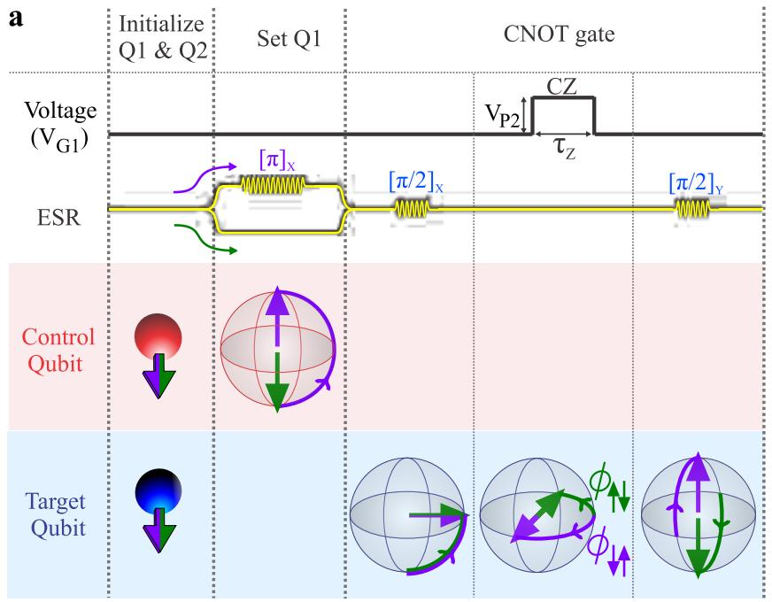</p>
<p>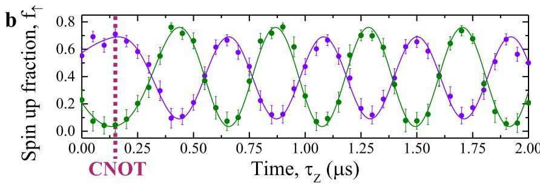</p>
<p>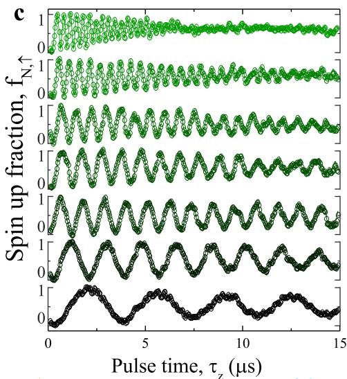</p>
<p>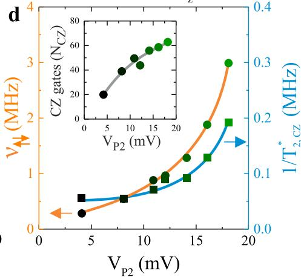<br/>
FIG. 3: A quantum dot CZ gate. a Pulsing protocol for CNOT operations using CZ. When the coupling is on, the qubits make in-plane rotations with a frequency determined by the exchange coupling and a direction that depend on the <span class="katex"><span class="katex-html" aria-hidden="true"><span class="base"><span class="strut" style="height:0.5806em;vertical-align:-0.15em;"></span><span class="mord"><span class="mord mathnormal" style="margin-right:0.0359em;">σ</span><span class="msupsub"><span class="vlist-t vlist-t2"><span class="vlist-r"><span class="vlist" style="height:0.1514em;"><span style="top:-2.55em;margin-left:-0.0359em;margin-right:0.05em;"><span class="pstrut" style="height:2.7em;"></span><span class="sizing reset-size6 size3 mtight"><span class="mord mtight"><span class="mord mathnormal mtight" style="margin-right:0.044em;">z</span></span></span></span></span><span class="vlist-s">​</span></span><span class="vlist-r"><span class="vlist" style="height:0.15em;"><span></span></span></span></span></span></span></span></span></span> of the other qubit. b Demonstration of the CNOT gate. The control qubit <span class="katex"><span class="katex-html" aria-hidden="true"><span class="base"><span class="strut" style="height:0.8778em;vertical-align:-0.1944em;"></span><span class="mord"><span class="mord mathrm">Q</span><span class="msupsub"><span class="vlist-t vlist-t2"><span class="vlist-r"><span class="vlist" style="height:0.3011em;"><span style="top:-2.55em;margin-left:0em;margin-right:0.05em;"><span class="pstrut" style="height:2.7em;"></span><span class="sizing reset-size6 size3 mtight"><span class="mord mtight"><span class="mord mathrm mtight">1</span></span></span></span></span><span class="vlist-s">​</span></span><span class="vlist-r"><span class="vlist" style="height:0.15em;"><span></span></span></span></span></span></span></span></span></span> is prepared into the <span class="katex"><span class="katex-html" aria-hidden="true"><span class="base"><span class="strut" style="height:1em;vertical-align:-0.25em;"></span><span class="mord">∣</span><span class="mord"><span class="mrel">↑</span></span><span class="mclose">⟩</span></span></span></span> or <span class="katex"><span class="katex-html" aria-hidden="true"><span class="base"><span class="strut" style="height:1em;vertical-align:-0.25em;"></span><span class="mrel">∣↓</span></span><span class="base"><span class="strut" style="height:1em;vertical-align:-0.25em;"></span><span class="mclose">⟩</span></span></span></span> state, after which a <span class="katex"><span class="katex-html" aria-hidden="true"><span class="base"><span class="strut" style="height:1em;vertical-align:-0.25em;"></span><span class="mop"><span class="mord mathrm">CZ</span></span><span class="mopen">(</span><span class="mord mathnormal" style="margin-right:0.0359em;">π</span><span class="mclose">)</span></span></span></span> gate is performed. Clear oscillations as a function of the interaction time <span class="katex"><span class="katex-html" aria-hidden="true"><span class="base"><span class="strut" style="height:0.5806em;vertical-align:-0.15em;"></span><span class="mord"><span class="mord mathnormal" style="margin-right:0.1132em;">τ</span><span class="msupsub"><span class="vlist-t vlist-t2"><span class="vlist-r"><span class="vlist" style="height:0.3283em;"><span style="top:-2.55em;margin-left:-0.1132em;margin-right:0.05em;"><span class="pstrut" style="height:2.7em;"></span><span class="sizing reset-size6 size3 mtight"><span class="mord mtight"><span class="mord mathnormal mtight" style="margin-right:0.0715em;">Z</span></span></span></span></span><span class="vlist-s">​</span></span><span class="vlist-r"><span class="vlist" style="height:0.15em;"><span></span></span></span></span></span></span></span></span></span> arise and are fitted by assuming a Gaussian-shaped voltage pulse due to finite fall and rise times. The error bars correspond to the standard error of the mean of 900 single shot events per data point. c Via the detuning energy, set with <span class="katex"><span class="katex-html" aria-hidden="true"><span class="base"><span class="strut" style="height:0.8333em;vertical-align:-0.15em;"></span><span class="mord"><span class="mord mathnormal" style="margin-right:0.2222em;">V</span><span class="msupsub"><span class="vlist-t vlist-t2"><span class="vlist-r"><span class="vlist" style="height:0.3283em;"><span style="top:-2.55em;margin-left:-0.2222em;margin-right:0.05em;"><span class="pstrut" style="height:2.7em;"></span><span class="sizing reset-size6 size3 mtight"><span class="mord mtight"><span class="mord mathnormal mtight">G</span><span class="mord mtight">1</span></span></span></span></span><span class="vlist-s">​</span></span><span class="vlist-r"><span class="vlist" style="height:0.15em;"><span></span></span></span></span></span></span></span></span></span> , the exchange coupling can be controlled resulting in a tunable two-qubit operation frequency <span class="katex"><span class="katex-html" aria-hidden="true"><span class="base"><span class="strut" style="height:0.7167em;vertical-align:-0.2861em;"></span><span class="mord"><span class="mord mathnormal" style="margin-right:0.0637em;">ν</span><span class="msupsub"><span class="vlist-t vlist-t2"><span class="vlist-r"><span class="vlist" style="height:0.3361em;"><span style="top:-2.55em;margin-left:-0.0637em;margin-right:0.05em;"><span class="pstrut" style="height:2.7em;"></span><span class="sizing reset-size6 size3 mtight"><span class="mord mtight"><span class="mrel mtight">↑↓</span></span></span></span></span><span class="vlist-s">​</span></span><span class="vlist-r"><span class="vlist" style="height:0.2861em;"><span></span></span></span></span></span></span></span></span></span> . d By fitting the data of c we map out <span class="katex"><span class="katex-html" aria-hidden="true"><span class="base"><span class="strut" style="height:0.7167em;vertical-align:-0.2861em;"></span><span class="mord"><span class="mord mathnormal" style="margin-right:0.0637em;">ν</span><span class="msupsub"><span class="vlist-t vlist-t2"><span class="vlist-r"><span class="vlist" style="height:0.3361em;"><span style="top:-2.55em;margin-left:-0.0637em;margin-right:0.05em;"><span class="pstrut" style="height:2.7em;"></span><span class="sizing reset-size6 size3 mtight"><span class="mord mtight"><span class="mrel mtight">↑↓</span></span></span></span></span><span class="vlist-s">​</span></span><span class="vlist-r"><span class="vlist" style="height:0.2861em;"><span></span></span></span></span></span></span></span></span></span> and <span class="katex"><span class="katex-html" aria-hidden="true"><span class="base"><span class="strut" style="height:1.1001em;vertical-align:-0.4114em;"></span><span class="mord"><span class="mord mathnormal" style="margin-right:0.1389em;">T</span><span class="msupsub"><span class="vlist-t vlist-t2"><span class="vlist-r"><span class="vlist" style="height:0.6887em;"><span style="top:-2.4247em;margin-left:-0.1389em;margin-right:0.05em;"><span class="pstrut" style="height:2.7em;"></span><span class="sizing reset-size6 size3 mtight"><span class="mord mtight"><span class="mord mtight">2</span><span class="mpunct mtight">,</span><span class="mord mathnormal mtight" style="margin-right:0.0715em;">C</span><span class="mord mathnormal mtight" style="margin-right:0.0715em;">Z</span></span></span></span><span style="top:-3.063em;margin-right:0.05em;"><span class="pstrut" style="height:2.7em;"></span><span class="sizing reset-size6 size3 mtight"><span class="mord mtight"><span class="mord mtight">∗</span></span></span></span></span><span class="vlist-s">​</span></span><span class="vlist-r"><span class="vlist" style="height:0.4114em;"><span></span></span></span></span></span></span></span></span></span> as a function of <span class="katex"><span class="katex-html" aria-hidden="true"><span class="base"><span class="strut" style="height:0.8333em;vertical-align:-0.15em;"></span><span class="mord"><span class="mord mathnormal" style="margin-right:0.2222em;">V</span><span class="msupsub"><span class="vlist-t vlist-t2"><span class="vlist-r"><span class="vlist" style="height:0.3283em;"><span style="top:-2.55em;margin-left:-0.2222em;margin-right:0.05em;"><span class="pstrut" style="height:2.7em;"></span><span class="sizing reset-size6 size3 mtight"><span class="mord mtight"><span class="mord mathnormal mtight" style="margin-right:0.1389em;">P</span><span class="mord mtight">2</span></span></span></span></span><span class="vlist-s">​</span></span><span class="vlist-r"><span class="vlist" style="height:0.15em;"><span></span></span></span></span></span></span></span></span></span> . The inset shows the number of possible <span class="katex"><span class="katex-html" aria-hidden="true"><span class="base"><span class="strut" style="height:1em;vertical-align:-0.25em;"></span><span class="mop"><span class="mord mathrm">CZ</span></span><span class="mopen">(</span><span class="mord mathnormal" style="margin-right:0.0359em;">π</span><span class="mclose">)</span></span></span></span> operations, where <span class="katex"><span class="katex-html" aria-hidden="true"><span class="base"><span class="strut" style="height:0.6833em;"></span><span class="mord mathnormal" style="margin-right:0.109em;">N</span><span class="mord mathnormal" style="margin-right:0.044em;">cz</span><span class="mspace" style="margin-right:0.2778em;"></span><span class="mrel">=</span><span class="mspace" style="margin-right:0.2778em;"></span></span><span class="base"><span class="strut" style="height:0.7278em;vertical-align:-0.0833em;"></span><span class="mord">2</span><span class="mspace" style="margin-right:0.2222em;"></span><span class="mbin">×</span><span class="mspace" style="margin-right:0.2222em;"></span></span><span class="base"><span class="strut" style="height:1.0361em;vertical-align:-0.2861em;"></span><span class="mopen">(</span><span class="mord"><span class="mord mathnormal" style="margin-right:0.0637em;">ν</span><span class="msupsub"><span class="vlist-t vlist-t2"><span class="vlist-r"><span class="vlist" style="height:0.3361em;"><span style="top:-2.55em;margin-left:-0.0637em;margin-right:0.05em;"><span class="pstrut" style="height:2.7em;"></span><span class="sizing reset-size6 size3 mtight"><span class="mord mtight"><span class="mrel mtight">↑↓</span></span></span></span></span><span class="vlist-s">​</span></span><span class="vlist-r"><span class="vlist" style="height:0.2861em;"><span></span></span></span></span></span></span><span class="mspace" style="margin-right:0.2222em;"></span><span class="mbin">+</span><span class="mspace" style="margin-right:0.2222em;"></span></span><span class="base"><span class="strut" style="height:1.0361em;vertical-align:-0.2861em;"></span><span class="mord"><span class="mord mathnormal" style="margin-right:0.0637em;">ν</span><span class="msupsub"><span class="vlist-t vlist-t2"><span class="vlist-r"><span class="vlist" style="height:0.3361em;"><span style="top:-2.55em;margin-left:-0.0637em;margin-right:0.05em;"><span class="pstrut" style="height:2.7em;"></span><span class="sizing reset-size6 size3 mtight"><span class="mord mtight"><span class="mrel mtight">↓↑</span></span></span></span></span><span class="vlist-s">​</span></span><span class="vlist-r"><span class="vlist" style="height:0.2861em;"><span></span></span></span></span></span></span><span class="mclose">)</span><span class="mspace" style="margin-right:0.2222em;"></span><span class="mbin">×</span><span class="mspace" style="margin-right:0.2222em;"></span></span><span class="base"><span class="strut" style="height:1.1001em;vertical-align:-0.4114em;"></span><span class="mord"><span class="mord mathnormal" style="margin-right:0.1389em;">T</span><span class="msupsub"><span class="vlist-t vlist-t2"><span class="vlist-r"><span class="vlist" style="height:0.6887em;"><span style="top:-2.4247em;margin-left:-0.1389em;margin-right:0.05em;"><span class="pstrut" style="height:2.7em;"></span><span class="sizing reset-size6 size3 mtight"><span class="mord mtight"><span class="mord mtight">2</span><span class="mpunct mtight">,</span><span class="mord mathnormal mtight" style="margin-right:0.0715em;">C</span><span class="mord mathnormal mtight" style="margin-right:0.0715em;">Z</span></span></span></span><span style="top:-3.063em;margin-right:0.05em;"><span class="pstrut" style="height:2.7em;"></span><span class="sizing reset-size6 size3 mtight"><span class="mord mtight"><span class="mord mtight">∗</span></span></span></span></span><span class="vlist-s">​</span></span><span class="vlist-r"><span class="vlist" style="height:0.4114em;"><span></span></span></span></span></span></span></span></span></span> . While the <span class="katex"><span class="katex-html" aria-hidden="true"><span class="base"><span class="strut" style="height:1.1001em;vertical-align:-0.4114em;"></span><span class="mord"><span class="mord mathnormal" style="margin-right:0.1389em;">T</span><span class="msupsub"><span class="vlist-t vlist-t2"><span class="vlist-r"><span class="vlist" style="height:0.6887em;"><span style="top:-2.4247em;margin-left:-0.1389em;margin-right:0.05em;"><span class="pstrut" style="height:2.7em;"></span><span class="sizing reset-size6 size3 mtight"><span class="mord mtight"><span class="mord mtight">2</span><span class="mpunct mtight">,</span><span class="mord mathnormal mtight" style="margin-right:0.0715em;">C</span><span class="mord mathnormal mtight" style="margin-right:0.0715em;">Z</span></span></span></span><span style="top:-3.063em;margin-right:0.05em;"><span class="pstrut" style="height:2.7em;"></span><span class="sizing reset-size6 size3 mtight"><span class="mord mtight"><span class="mord mtight">∗</span></span></span></span></span><span class="vlist-s">​</span></span><span class="vlist-r"><span class="vlist" style="height:0.4114em;"><span></span></span></span></span></span></span></span></span></span> decreases with coupling, the number of possible two-qubit operations continue to increase.</p>
<p>up as spin down. The higher frequency rotates the singlet state towards <span class="katex"><span class="katex-html" aria-hidden="true"><span class="base"><span class="strut" style="height:1em;vertical-align:-0.25em;"></span><span class="mord">∣</span><span class="mord"><span class="mrel">↑</span></span><span class="mpunct">,</span><span class="mspace" style="margin-right:0.2778em;"></span><span class="mrel">↓</span></span><span class="base"><span class="strut" style="height:1em;vertical-align:-0.25em;"></span><span class="mclose">⟩</span><span class="mspace" style="margin-right:0.2222em;"></span><span class="mbin">−</span><span class="mspace" style="margin-right:0.2222em;"></span></span><span class="base"><span class="strut" style="height:1em;vertical-align:-0.25em;"></span><span class="mord">∣</span><span class="mord"><span class="mrel">↑</span></span><span class="mpunct">,</span><span class="mspace" style="margin-right:0.1667em;"></span><span class="mord"><span class="mrel">↑</span></span><span class="mclose">⟩</span></span></span></span> , where <span class="katex"><span class="katex-html" aria-hidden="true"><span class="base"><span class="strut" style="height:0.8778em;vertical-align:-0.1944em;"></span><span class="mord"><span class="mord mathrm">Q</span><span class="msupsub"><span class="vlist-t vlist-t2"><span class="vlist-r"><span class="vlist" style="height:0.3011em;"><span style="top:-2.55em;margin-left:0em;margin-right:0.05em;"><span class="pstrut" style="height:2.7em;"></span><span class="sizing reset-size6 size3 mtight"><span class="mord mtight"><span class="mord mathrm mtight">2</span></span></span></span></span><span class="vlist-s">​</span></span><span class="vlist-r"><span class="vlist" style="height:0.15em;"><span></span></span></span></span></span></span></span></span></span> always ends up as spin up. The results are depicted in Fig. 2c, showing a decrease in <span class="katex"><span class="katex-html" aria-hidden="true"><span class="base"><span class="strut" style="height:0.9805em;vertical-align:-0.2861em;"></span><span class="mord"><span class="mord mathnormal" style="margin-right:0.1076em;">f</span><span class="msupsub"><span class="vlist-t vlist-t2"><span class="vlist-r"><span class="vlist" style="height:0.3361em;"><span style="top:-2.55em;margin-left:-0.1076em;margin-right:0.05em;"><span class="pstrut" style="height:2.7em;"></span><span class="sizing reset-size6 size3 mtight"><span class="mord mtight"><span class="mrel mtight">↑</span></span></span></span></span><span class="vlist-s">​</span></span><span class="vlist-r"><span class="vlist" style="height:0.2861em;"><span></span></span></span></span></span></span></span></span></span> at the lower branch and an increase of <span class="katex"><span class="katex-html" aria-hidden="true"><span class="base"><span class="strut" style="height:0.9805em;vertical-align:-0.2861em;"></span><span class="mord"><span class="mord mathnormal" style="margin-right:0.1076em;">f</span><span class="msupsub"><span class="vlist-t vlist-t2"><span class="vlist-r"><span class="vlist" style="height:0.3361em;"><span style="top:-2.55em;margin-left:-0.1076em;margin-right:0.05em;"><span class="pstrut" style="height:2.7em;"></span><span class="sizing reset-size6 size3 mtight"><span class="mord mtight"><span class="mrel mtight">↑</span></span></span></span></span><span class="vlist-s">​</span></span><span class="vlist-r"><span class="vlist" style="height:0.2861em;"><span></span></span></span></span></span></span></span></span></span> at the upper branch, demonstrating an exchange spin funnel, where both branches are visible, as opposed to the single-branch spin-funnel observed in singlet-triplet qubits [16]. In the Supplementary Information we show more detailed sequences of the initialization process, showing that additional levels that mix with the <span class="katex"><span class="katex-html" aria-hidden="true"><span class="base"><span class="strut" style="height:1em;vertical-align:-0.25em;"></span><span class="mrel">∣↓</span></span><span class="base"><span class="strut" style="height:0.8889em;vertical-align:-0.1944em;"></span><span class="mpunct">,</span><span class="mspace" style="margin-right:0.2778em;"></span><span class="mrel">↓</span></span><span class="base"><span class="strut" style="height:1em;vertical-align:-0.25em;"></span><span class="mclose">⟩</span></span></span></span> -state can be present at certain detunings.</p>
<p>Having characterized the two-qubit system, we now turn to controlled operations using CROT and demonstrate a CNOT gate, see Figs. 2d and e. In this sequence, the exchange interaction is always on and the resonance frequency of target qubit <span class="katex"><span class="katex-html" aria-hidden="true"><span class="base"><span class="strut" style="height:0.8778em;vertical-align:-0.1944em;"></span><span class="mord"><span class="mord mathrm">Q</span><span class="msupsub"><span class="vlist-t vlist-t2"><span class="vlist-r"><span class="vlist" style="height:0.3011em;"><span style="top:-2.55em;margin-left:0em;margin-right:0.05em;"><span class="pstrut" style="height:2.7em;"></span><span class="sizing reset-size6 size3 mtight"><span class="mord mtight"><span class="mord mathrm mtight">2</span></span></span></span></span><span class="vlist-s">​</span></span><span class="vlist-r"><span class="vlist" style="height:0.15em;"><span></span></span></span></span></span></span></span></span></span> depends on the <span class="katex"><span class="katex-html" aria-hidden="true"><span class="base"><span class="strut" style="height:0.5806em;vertical-align:-0.15em;"></span><span class="mord"><span class="mord mathnormal" style="margin-right:0.0359em;">σ</span><span class="msupsub"><span class="vlist-t vlist-t2"><span class="vlist-r"><span class="vlist" style="height:0.1514em;"><span style="top:-2.55em;margin-left:-0.0359em;margin-right:0.05em;"><span class="pstrut" style="height:2.7em;"></span><span class="sizing reset-size6 size3 mtight"><span class="mord mtight"><span class="mord mathnormal mtight" style="margin-right:0.044em;">z</span></span></span></span></span><span class="vlist-s">​</span></span><span class="vlist-r"><span class="vlist" style="height:0.15em;"><span></span></span></span></span></span></span></span></span></span> -component of <span class="katex"><span class="katex-html" aria-hidden="true"><span class="base"><span class="strut" style="height:0.8778em;vertical-align:-0.1944em;"></span><span class="mord"><span class="mord mathrm">Q</span><span class="msupsub"><span class="vlist-t vlist-t2"><span class="vlist-r"><span class="vlist" style="height:0.3011em;"><span style="top:-2.55em;margin-left:0em;margin-right:0.05em;"><span class="pstrut" style="height:2.7em;"></span><span class="sizing reset-size6 size3 mtight"><span class="mord mtight"><span class="mord mathrm mtight">1</span></span></span></span></span><span class="vlist-s">​</span></span><span class="vlist-r"><span class="vlist" style="height:0.15em;"><span></span></span></span></span></span></span></span></span></span> , so that there is</p>
<p>a resonance frequency where <span class="katex"><span class="katex-html" aria-hidden="true"><span class="base"><span class="strut" style="height:0.8778em;vertical-align:-0.1944em;"></span><span class="mord"><span class="mord mathrm">Q</span><span class="msupsub"><span class="vlist-t vlist-t2"><span class="vlist-r"><span class="vlist" style="height:0.3011em;"><span style="top:-2.55em;margin-left:0em;margin-right:0.05em;"><span class="pstrut" style="height:2.7em;"></span><span class="sizing reset-size6 size3 mtight"><span class="mord mtight"><span class="mord mathrm mtight">2</span></span></span></span></span><span class="vlist-s">​</span></span><span class="vlist-r"><span class="vlist" style="height:0.15em;"><span></span></span></span></span></span></span></span></span></span> only rotates when <span class="katex"><span class="katex-html" aria-hidden="true"><span class="base"><span class="strut" style="height:0.8778em;vertical-align:-0.1944em;"></span><span class="mord"><span class="mord mathrm">Q</span><span class="msupsub"><span class="vlist-t vlist-t2"><span class="vlist-r"><span class="vlist" style="height:0.3011em;"><span style="top:-2.55em;margin-left:0em;margin-right:0.05em;"><span class="pstrut" style="height:2.7em;"></span><span class="sizing reset-size6 size3 mtight"><span class="mord mtight"><span class="mord mathrm mtight">1</span></span></span></span></span><span class="vlist-s">​</span></span><span class="vlist-r"><span class="vlist" style="height:0.15em;"><span></span></span></span></span></span></span></span></span></span> is spin up and a resonance frequency where <span class="katex"><span class="katex-html" aria-hidden="true"><span class="base"><span class="strut" style="height:0.8778em;vertical-align:-0.1944em;"></span><span class="mord"><span class="mord mathrm">Q</span><span class="msupsub"><span class="vlist-t vlist-t2"><span class="vlist-r"><span class="vlist" style="height:0.3011em;"><span style="top:-2.55em;margin-left:0em;margin-right:0.05em;"><span class="pstrut" style="height:2.7em;"></span><span class="sizing reset-size6 size3 mtight"><span class="mord mtight"><span class="mord mathrm mtight">2</span></span></span></span></span><span class="vlist-s">​</span></span><span class="vlist-r"><span class="vlist" style="height:0.15em;"><span></span></span></span></span></span></span></span></span></span> only rotates when <span class="katex"><span class="katex-html" aria-hidden="true"><span class="base"><span class="strut" style="height:0.8778em;vertical-align:-0.1944em;"></span><span class="mord"><span class="mord mathrm">Q</span><span class="msupsub"><span class="vlist-t vlist-t2"><span class="vlist-r"><span class="vlist" style="height:0.3011em;"><span style="top:-2.55em;margin-left:0em;margin-right:0.05em;"><span class="pstrut" style="height:2.7em;"></span><span class="sizing reset-size6 size3 mtight"><span class="mord mtight"><span class="mord mathrm mtight">1</span></span></span></span></span><span class="vlist-s">​</span></span><span class="vlist-r"><span class="vlist" style="height:0.15em;"><span></span></span></span></span></span></span></span></span></span> is down. We set the exchange coupling such that the two resonance frequencies of <span class="katex"><span class="katex-html" aria-hidden="true"><span class="base"><span class="strut" style="height:0.8778em;vertical-align:-0.1944em;"></span><span class="mord"><span class="mord mathrm">Q</span><span class="msupsub"><span class="vlist-t vlist-t2"><span class="vlist-r"><span class="vlist" style="height:0.3011em;"><span style="top:-2.55em;margin-left:0em;margin-right:0.05em;"><span class="pstrut" style="height:2.7em;"></span><span class="sizing reset-size6 size3 mtight"><span class="mord mtight"><span class="mord mathrm mtight">2</span></span></span></span></span><span class="vlist-s">​</span></span><span class="vlist-r"><span class="vlist" style="height:0.15em;"><span></span></span></span></span></span></span></span></span></span> are split by <span class="katex"><span class="katex-html" aria-hidden="true"><span class="base"><span class="strut" style="height:0.6833em;"></span><span class="mord">14.5</span><span class="mord"><span class="mord mathrm">MHz</span></span></span></span></span> and apply a <span class="katex"><span class="katex-html" aria-hidden="true"><span class="base"><span class="strut" style="height:0.4306em;"></span><span class="mord mathnormal" style="margin-right:0.0359em;">π</span></span></span></span> -pulse on the control qubit <span class="katex"><span class="katex-html" aria-hidden="true"><span class="base"><span class="strut" style="height:0.8778em;vertical-align:-0.1944em;"></span><span class="mord"><span class="mord mathrm">Q</span><span class="msupsub"><span class="vlist-t vlist-t2"><span class="vlist-r"><span class="vlist" style="height:0.3011em;"><span style="top:-2.55em;margin-left:0em;margin-right:0.05em;"><span class="pstrut" style="height:2.7em;"></span><span class="sizing reset-size6 size3 mtight"><span class="mord mtight"><span class="mord mathrm mtight">1</span></span></span></span></span><span class="vlist-s">​</span></span><span class="vlist-r"><span class="vlist" style="height:0.15em;"><span></span></span></span></span></span></span></span></span></span> , followed by a <span class="katex"><span class="katex-html" aria-hidden="true"><span class="base"><span class="strut" style="height:0.4306em;"></span><span class="mord mathnormal" style="margin-right:0.0359em;">π</span></span></span></span> -pulse on the target qubit <span class="katex"><span class="katex-html" aria-hidden="true"><span class="base"><span class="strut" style="height:0.8778em;vertical-align:-0.1944em;"></span><span class="mord"><span class="mord mathrm">Q</span><span class="msupsub"><span class="vlist-t vlist-t2"><span class="vlist-r"><span class="vlist" style="height:0.3011em;"><span style="top:-2.55em;margin-left:0em;margin-right:0.05em;"><span class="pstrut" style="height:2.7em;"></span><span class="sizing reset-size6 size3 mtight"><span class="mord mtight"><span class="mord mathrm mtight">2</span></span></span></span></span><span class="vlist-s">​</span></span><span class="vlist-r"><span class="vlist" style="height:0.15em;"><span></span></span></span></span></span></span></span></span></span> . The experimental results shown in Fig. 2d coincide reasonably with the model shown in Fig. 2e, which includes decoherence. The side lobes of the <span class="katex"><span class="katex-html" aria-hidden="true"><span class="base"><span class="strut" style="height:0.4306em;"></span><span class="mord mathnormal" style="margin-right:0.0359em;">π</span></span></span></span> -pulse can be observed for the <span class="katex"><span class="katex-html" aria-hidden="true"><span class="base"><span class="strut" style="height:1em;vertical-align:-0.25em;"></span><span class="mord">∣</span><span class="mord"><span class="mrel">↓</span></span><span class="mpunct">,</span><span class="mspace" style="margin-right:0.1667em;"></span><span class="mord"><span class="mrel">↑</span></span><span class="mclose">⟩</span></span></span></span> to <span class="katex"><span class="katex-html" aria-hidden="true"><span class="base"><span class="strut" style="height:1em;vertical-align:-0.25em;"></span><span class="mord">∣</span><span class="mord"><span class="mrel">↑</span></span><span class="mpunct">,</span><span class="mspace" style="margin-right:0.1667em;"></span><span class="mord"><span class="mrel">↑</span></span><span class="mclose">⟩</span></span></span></span> transition, but not for the <span class="katex"><span class="katex-html" aria-hidden="true"><span class="base"><span class="strut" style="height:1em;vertical-align:-0.25em;"></span><span class="mrel">∣↓</span></span><span class="base"><span class="strut" style="height:0.8889em;vertical-align:-0.1944em;"></span><span class="mpunct">,</span><span class="mspace" style="margin-right:0.2778em;"></span><span class="mrel">↓</span></span><span class="base"><span class="strut" style="height:1em;vertical-align:-0.25em;"></span><span class="mclose">⟩</span></span></span></span> to <span class="katex"><span class="katex-html" aria-hidden="true"><span class="base"><span class="strut" style="height:1em;vertical-align:-0.25em;"></span><span class="mord">∣</span><span class="mord"><span class="mrel">↑</span><span class="mpunct">,</span><span class="mspace" style="margin-right:0.2778em;"></span><span class="mrel">↓</span></span><span class="mclose">⟩</span></span></span></span> transition. We ascribe this difference to the <span class="katex"><span class="katex-html" aria-hidden="true"><span class="base"><span class="strut" style="height:0.625em;vertical-align:-0.1944em;"></span><span class="mord mathnormal" style="margin-right:0.0359em;">g</span></span></span></span> -factor difference between the qubits, which gives a difference in coupling between the <span class="katex"><span class="katex-html" aria-hidden="true"><span class="base"><span class="strut" style="height:1em;vertical-align:-0.25em;"></span><span class="mord">∣</span><span class="mord"><span class="mrel">↑</span><span class="mpunct">,</span><span class="mspace" style="margin-right:0.2778em;"></span><span class="mrel">↓</span></span><span class="mclose">⟩</span></span></span></span> and <span class="katex"><span class="katex-html" aria-hidden="true"><span class="base"><span class="strut" style="height:1em;vertical-align:-0.25em;"></span><span class="mord">∣</span><span class="mord"><span class="mrel">↓</span></span><span class="mpunct">,</span><span class="mspace" style="margin-right:0.1667em;"></span><span class="mord"><span class="mrel">↑</span></span><span class="mclose">⟩</span></span></span></span> to the <span class="katex"><span class="katex-html" aria-hidden="true"><span class="base"><span class="strut" style="height:1em;vertical-align:-0.25em;"></span><span class="mord">∣0</span><span class="mpunct">,</span><span class="mspace" style="margin-right:0.1667em;"></span><span class="mord">2</span><span class="mclose">⟩</span></span></span></span> -state, see Eq. 1, resulting in a different sensitivity to electrical noise.</p>
<p>The presence of exchange coupling makes the system more vulnerable to electrical noise sources such as electrical gate</p>
<p>noise, thereby lowering the coherence time and limiting the amount of possible operations using CROT. However, when the coupling is off, single-qubit fidelities above some faulttolerant thresholds are possible [4]. We therefore explore a quantum dot CZ gate [20]; see Supplementary Information for theoretical considerations on the CZ operation in exchange based systems. This approach allows individual control over the qubits in the absence of interaction and its associated noise, while it uses the coupling to perform two-qubit operations with a frequency that can be much higher than the qubit Rabi rotation frequency, as we will now demonstrate.</p>
<p>As described by Eq.1 and depicted in Fig. 2a, changing the detuning energy <span class="katex"><span class="katex-html" aria-hidden="true"><span class="base"><span class="strut" style="height:0.4306em;"></span><span class="mord mathnormal">ϵ</span></span></span></span> modifies the qubit resonance frequencies of <span class="katex"><span class="katex-html" aria-hidden="true"><span class="base"><span class="strut" style="height:0.8778em;vertical-align:-0.1944em;"></span><span class="mord"><span class="mord mathrm">Q</span><span class="msupsub"><span class="vlist-t vlist-t2"><span class="vlist-r"><span class="vlist" style="height:0.3011em;"><span style="top:-2.55em;margin-left:0em;margin-right:0.05em;"><span class="pstrut" style="height:2.7em;"></span><span class="sizing reset-size6 size3 mtight"><span class="mord mtight"><span class="mord mathrm mtight">1</span></span></span></span></span><span class="vlist-s">​</span></span><span class="vlist-r"><span class="vlist" style="height:0.15em;"><span></span></span></span></span></span></span></span></span></span> and <span class="katex"><span class="katex-html" aria-hidden="true"><span class="base"><span class="strut" style="height:0.8778em;vertical-align:-0.1944em;"></span><span class="mord"><span class="mord mathrm">Q</span><span class="msupsub"><span class="vlist-t vlist-t2"><span class="vlist-r"><span class="vlist" style="height:0.3011em;"><span style="top:-2.55em;margin-left:0em;margin-right:0.05em;"><span class="pstrut" style="height:2.7em;"></span><span class="sizing reset-size6 size3 mtight"><span class="mord mtight"><span class="mord mathrm mtight">2</span></span></span></span></span><span class="vlist-s">​</span></span><span class="vlist-r"><span class="vlist" style="height:0.15em;"><span></span></span></span></span></span></span></span></span></span> and introduces an effective detuning frequency <span class="katex"><span class="katex-html" aria-hidden="true"><span class="base"><span class="strut" style="height:0.7858em;vertical-align:-0.3552em;"></span><span class="mord"><span class="mord mathnormal" style="margin-right:0.0637em;">ν</span><span class="msupsub"><span class="vlist-t vlist-t2"><span class="vlist-r"><span class="vlist" style="height:0.3448em;"><span style="top:-2.5198em;margin-left:-0.0637em;margin-right:0.05em;"><span class="pstrut" style="height:2.7em;"></span><span class="sizing reset-size6 size3 mtight"><span class="mord mtight"><span class="mrel mtight">↑↓</span><span class="mpunct mtight">,</span><span class="mopen mtight">(</span><span class="mrel mtight">↓↑</span><span class="mclose mtight">)</span></span></span></span></span><span class="vlist-s">​</span></span><span class="vlist-r"><span class="vlist" style="height:0.3552em;"><span></span></span></span></span></span></span></span></span></span> , such that one qubit acquires a time-integrated phase shift <span class="katex"><span class="katex-html" aria-hidden="true"><span class="base"><span class="strut" style="height:1.0496em;vertical-align:-0.3552em;"></span><span class="mord"><span class="mord mathnormal">ϕ</span><span class="msupsub"><span class="vlist-t vlist-t2"><span class="vlist-r"><span class="vlist" style="height:0.3448em;"><span style="top:-2.5198em;margin-left:0em;margin-right:0.05em;"><span class="pstrut" style="height:2.7em;"></span><span class="sizing reset-size6 size3 mtight"><span class="mord mtight"><span class="mrel mtight">↑↓</span><span class="mpunct mtight">,</span><span class="mopen mtight">(</span><span class="mrel mtight">↓↑</span><span class="mclose mtight">)</span></span></span></span></span><span class="vlist-s">​</span></span><span class="vlist-r"><span class="vlist" style="height:0.3552em;"><span></span></span></span></span></span></span></span></span></span> , see Fig. 3a, that depends on the <span class="katex"><span class="katex-html" aria-hidden="true"><span class="base"><span class="strut" style="height:0.5806em;vertical-align:-0.15em;"></span><span class="mord"><span class="mord mathnormal" style="margin-right:0.0359em;">σ</span><span class="msupsub"><span class="vlist-t vlist-t2"><span class="vlist-r"><span class="vlist" style="height:0.1514em;"><span style="top:-2.55em;margin-left:-0.0359em;margin-right:0.05em;"><span class="pstrut" style="height:2.7em;"></span><span class="sizing reset-size6 size3 mtight"><span class="mord mtight"><span class="mord mathnormal mtight" style="margin-right:0.044em;">z</span></span></span></span></span><span class="vlist-s">​</span></span><span class="vlist-r"><span class="vlist" style="height:0.15em;"><span></span></span></span></span></span></span></span></span></span> -component of the other qubit, and vice versa. The exchange coupling and detuning frequency <span class="katex"><span class="katex-html" aria-hidden="true"><span class="base"><span class="strut" style="height:0.7858em;vertical-align:-0.3552em;"></span><span class="mord"><span class="mord mathnormal" style="margin-right:0.0637em;">ν</span><span class="msupsub"><span class="vlist-t vlist-t2"><span class="vlist-r"><span class="vlist" style="height:0.3448em;"><span style="top:-2.5198em;margin-left:-0.0637em;margin-right:0.05em;"><span class="pstrut" style="height:2.7em;"></span><span class="sizing reset-size6 size3 mtight"><span class="mord mtight"><span class="mrel mtight">↑↓</span><span class="mpunct mtight">,</span><span class="mopen mtight">(</span><span class="mrel mtight">↓↑</span><span class="mclose mtight">)</span></span></span></span></span><span class="vlist-s">​</span></span><span class="vlist-r"><span class="vlist" style="height:0.3552em;"><span></span></span></span></span></span></span></span></span></span> is maximised at the anticrossing <span class="katex"><span class="katex-html" aria-hidden="true"><span class="base"><span class="strut" style="height:0.4306em;"></span><span class="mord mathnormal">ϵ</span><span class="mspace" style="margin-right:0.2778em;"></span><span class="mrel">=</span><span class="mspace" style="margin-right:0.2778em;"></span></span><span class="base"><span class="strut" style="height:0.6833em;"></span><span class="mord mathnormal" style="margin-right:0.109em;">U</span></span></span></span> , see Fig. 2a. When the exchange is non-zero, SWAP oscillations can also occur, but these are negligible as long as <span class="katex"><span class="katex-html" aria-hidden="true"><span class="base"><span class="strut" style="height:0.8444em;vertical-align:-0.15em;"></span><span class="mord mathnormal" style="margin-right:0.0379em;">δ</span><span class="mord"><span class="mord mathnormal" style="margin-right:0.0576em;">E</span><span class="msupsub"><span class="vlist-t vlist-t2"><span class="vlist-r"><span class="vlist" style="height:0.3283em;"><span style="top:-2.55em;margin-left:-0.0576em;margin-right:0.05em;"><span class="pstrut" style="height:2.7em;"></span><span class="sizing reset-size6 size3 mtight"><span class="mord mtight"><span class="mord mathnormal mtight" style="margin-right:0.0715em;">Z</span></span></span></span></span><span class="vlist-s">​</span></span><span class="vlist-r"><span class="vlist" style="height:0.15em;"><span></span></span></span></span></span></span></span></span></span> significantly exceeds the effective coupling t. When a CZ operation is performed such that <span class="katex"><span class="katex-html" aria-hidden="true"><span class="base"><span class="strut" style="height:0.9805em;vertical-align:-0.2861em;"></span><span class="mord"><span class="mord mathnormal">ϕ</span><span class="msupsub"><span class="vlist-t vlist-t2"><span class="vlist-r"><span class="vlist" style="height:0.3361em;"><span style="top:-2.55em;margin-left:0em;margin-right:0.05em;"><span class="pstrut" style="height:2.7em;"></span><span class="sizing reset-size6 size3 mtight"><span class="mord mtight"><span class="mrel mtight">↑↓</span></span></span></span></span><span class="vlist-s">​</span></span><span class="vlist-r"><span class="vlist" style="height:0.2861em;"><span></span></span></span></span></span></span><span class="mspace" style="margin-right:0.2222em;"></span><span class="mbin">−</span><span class="mspace" style="margin-right:0.2222em;"></span></span><span class="base"><span class="strut" style="height:0.9805em;vertical-align:-0.2861em;"></span><span class="mord"><span class="mord mathnormal">ϕ</span><span class="msupsub"><span class="vlist-t vlist-t2"><span class="vlist-r"><span class="vlist" style="height:0.3361em;"><span style="top:-2.55em;margin-left:0em;margin-right:0.05em;"><span class="pstrut" style="height:2.7em;"></span><span class="sizing reset-size6 size3 mtight"><span class="mord mtight"><span class="mrel mtight">↓↑</span></span></span></span></span><span class="vlist-s">​</span></span><span class="vlist-r"><span class="vlist" style="height:0.2861em;"><span></span></span></span></span></span></span><span class="mspace" style="margin-right:0.2778em;"></span><span class="mrel">=</span><span class="mspace" style="margin-right:0.2778em;"></span></span><span class="base"><span class="strut" style="height:0.4306em;"></span><span class="mord mathnormal" style="margin-right:0.0359em;">π</span></span></span></span> , the operation differs only by an overall phase from the basis CZ gate [30]. This overall phase can be removed using singlequbit pulses or via voltage pulses exploiting the Stark shift [4]. To realise a CNOT operation using the CZ gate, a <span class="katex"><span class="katex-html" aria-hidden="true"><span class="base"><span class="strut" style="height:1em;vertical-align:-0.25em;"></span><span class="mord"><span class="mord mathbf">CZ</span></span><span class="mopen">(</span><span class="mord mathnormal" style="margin-right:0.0359em;">π</span><span class="mclose">)</span></span></span></span> rotation is performed in between two <span class="katex"><span class="katex-html" aria-hidden="true"><span class="base"><span class="strut" style="height:1em;vertical-align:-0.25em;"></span><span class="mord mathnormal" style="margin-right:0.0359em;">π</span><span class="mord">/2</span></span></span></span> -pulses on <span class="katex"><span class="katex-html" aria-hidden="true"><span class="base"><span class="strut" style="height:0.8778em;vertical-align:-0.1944em;"></span><span class="mord"><span class="mord mathrm">Q</span><span class="msupsub"><span class="vlist-t vlist-t2"><span class="vlist-r"><span class="vlist" style="height:0.3011em;"><span style="top:-2.55em;margin-left:0em;margin-right:0.05em;"><span class="pstrut" style="height:2.7em;"></span><span class="sizing reset-size6 size3 mtight"><span class="mord mtight"><span class="mord mathrm mtight">2</span></span></span></span></span><span class="vlist-s">​</span></span><span class="vlist-r"><span class="vlist" style="height:0.15em;"><span></span></span></span></span></span></span></span></span></span> that have a phase difference <span class="katex"><span class="katex-html" aria-hidden="true"><span class="base"><span class="strut" style="height:0.9805em;vertical-align:-0.2861em;"></span><span class="mord"><span class="mord mathnormal">ϕ</span><span class="msupsub"><span class="vlist-t vlist-t2"><span class="vlist-r"><span class="vlist" style="height:0.3361em;"><span style="top:-2.55em;margin-left:0em;margin-right:0.05em;"><span class="pstrut" style="height:2.7em;"></span><span class="sizing reset-size6 size3 mtight"><span class="mord mtight"><span class="mrel mtight">↑↓</span></span></span></span></span><span class="vlist-s">​</span></span><span class="vlist-r"><span class="vlist" style="height:0.2861em;"><span></span></span></span></span></span></span></span></span></span> . In Fig. 3a we show the protocol of a CNOT gate for the case that <span class="katex"><span class="katex-html" aria-hidden="true"><span class="base"><span class="strut" style="height:0.9805em;vertical-align:-0.2861em;"></span><span class="mord"><span class="mord mathnormal">ϕ</span><span class="msupsub"><span class="vlist-t vlist-t2"><span class="vlist-r"><span class="vlist" style="height:0.3361em;"><span style="top:-2.55em;margin-left:0em;margin-right:0.05em;"><span class="pstrut" style="height:2.7em;"></span><span class="sizing reset-size6 size3 mtight"><span class="mord mtight"><span class="mrel mtight">↑↓</span></span></span></span></span><span class="vlist-s">​</span></span><span class="vlist-r"><span class="vlist" style="height:0.2861em;"><span></span></span></span></span></span></span></span></span></span> and <span class="katex"><span class="katex-html" aria-hidden="true"><span class="base"><span class="strut" style="height:0.9805em;vertical-align:-0.2861em;"></span><span class="mord"><span class="mord mathnormal">ϕ</span><span class="msupsub"><span class="vlist-t vlist-t2"><span class="vlist-r"><span class="vlist" style="height:0.3361em;"><span style="top:-2.55em;margin-left:0em;margin-right:0.05em;"><span class="pstrut" style="height:2.7em;"></span><span class="sizing reset-size6 size3 mtight"><span class="mord mtight"><span class="mrel mtight">↓↑</span></span></span></span></span><span class="vlist-s">​</span></span><span class="vlist-r"><span class="vlist" style="height:0.2861em;"><span></span></span></span></span></span></span></span></span></span> are equal and opposite, which is when <span class="katex"><span class="katex-html" aria-hidden="true"><span class="base"><span class="strut" style="height:0.8444em;vertical-align:-0.15em;"></span><span class="mord mathnormal" style="margin-right:0.0379em;">δ</span><span class="mord"><span class="mord mathnormal" style="margin-right:0.0576em;">E</span><span class="msupsub"><span class="vlist-t vlist-t2"><span class="vlist-r"><span class="vlist" style="height:0.3283em;"><span style="top:-2.55em;margin-left:-0.0576em;margin-right:0.05em;"><span class="pstrut" style="height:2.7em;"></span><span class="sizing reset-size6 size3 mtight"><span class="mord mtight"><span class="mord mathnormal mtight" style="margin-right:0.0715em;">Z</span></span></span></span></span><span class="vlist-s">​</span></span><span class="vlist-r"><span class="vlist" style="height:0.15em;"><span></span></span></span></span></span></span><span class="mspace" style="margin-right:0.2778em;"></span><span class="mrel">≈</span><span class="mspace" style="margin-right:0.2778em;"></span></span><span class="base"><span class="strut" style="height:1.0572em;vertical-align:-0.15em;"></span><span class="mord sqrt"><span class="vlist-t vlist-t2"><span class="vlist-r"><span class="vlist" style="height:0.9072em;"><span class="svg-align" style="top:-3em;"><span class="pstrut" style="height:3em;"></span><span class="mord" style="padding-left:0.833em;"><span class="mord">2</span></span></span><span style="top:-2.8672em;"><span class="pstrut" style="height:3em;"></span><span class="hide-tail" style="min-width:0.853em;height:1.08em;"><svg xmlns="http://www.w3.org/2000/svg" width="400em" height="1.08em" viewBox="0 0 400000 1080" preserveAspectRatio="xMinYMin slice"><path d="M95,702
c-2.7,0,-7.17,-2.7,-13.5,-8c-5.8,-5.3,-9.5,-10,-9.5,-14
c0,-2,0.3,-3.3,1,-4c1.3,-2.7,23.83,-20.7,67.5,-54
c44.2,-33.3,65.8,-50.3,66.5,-51c1.3,-1.3,3,-2,5,-2c4.7,0,8.7,3.3,12,10
s173,378,173,378c0.7,0,35.3,-71,104,-213c68.7,-142,137.5,-285,206.5,-429
c69,-144,104.5,-217.7,106.5,-221
l0 -0
c5.3,-9.3,12,-14,20,-14
H400000v40H845.2724
s-225.272,467,-225.272,467s-235,486,-235,486c-2.7,4.7,-9,7,-19,7
c-6,0,-10,-1,-12,-3s-194,-422,-194,-422s-65,47,-65,47z
M834 80h400000v40h-400000z"></path></svg></span></span></span><span class="vlist-s">​</span></span><span class="vlist-r"><span class="vlist" style="height:0.1328em;"><span></span></span></span></span></span><span class="mord"><span class="mord mathnormal">t</span><span class="msupsub"><span class="vlist-t vlist-t2"><span class="vlist-r"><span class="vlist" style="height:0.3011em;"><span style="top:-2.55em;margin-left:0em;margin-right:0.05em;"><span class="pstrut" style="height:2.7em;"></span><span class="sizing reset-size6 size3 mtight"><span class="mord mtight"><span class="mord mtight">0</span></span></span></span></span><span class="vlist-s">​</span></span><span class="vlist-r"><span class="vlist" style="height:0.15em;"><span></span></span></span></span></span></span></span></span></span> , where conveniently <span class="katex"><span class="katex-html" aria-hidden="true"><span class="base"><span class="strut" style="height:0.9805em;vertical-align:-0.2861em;"></span><span class="mord"><span class="mord mathnormal">ϕ</span><span class="msupsub"><span class="vlist-t vlist-t2"><span class="vlist-r"><span class="vlist" style="height:0.3361em;"><span style="top:-2.55em;margin-left:0em;margin-right:0.05em;"><span class="pstrut" style="height:2.7em;"></span><span class="sizing reset-size6 size3 mtight"><span class="mord mtight"><span class="mrel mtight">↑↓</span></span></span></span></span><span class="vlist-s">​</span></span><span class="vlist-r"><span class="vlist" style="height:0.2861em;"><span></span></span></span></span></span></span><span class="mspace" style="margin-right:0.2778em;"></span><span class="mrel">=</span><span class="mspace" style="margin-right:0.2778em;"></span></span><span class="base"><span class="strut" style="height:1em;vertical-align:-0.25em;"></span><span class="mord mathnormal" style="margin-right:0.0359em;">π</span><span class="mord">/2</span></span></span></span> .</p>
<p>Figure 3b shows the spin-up fraction <span class="katex"><span class="katex-html" aria-hidden="true"><span class="base"><span class="strut" style="height:0.9805em;vertical-align:-0.2861em;"></span><span class="mord"><span class="mord mathnormal" style="margin-right:0.1076em;">f</span><span class="msupsub"><span class="vlist-t vlist-t2"><span class="vlist-r"><span class="vlist" style="height:0.3361em;"><span style="top:-2.55em;margin-left:-0.1076em;margin-right:0.05em;"><span class="pstrut" style="height:2.7em;"></span><span class="sizing reset-size6 size3 mtight"><span class="mord mtight"><span class="mrel mtight">↑</span></span></span></span></span><span class="vlist-s">​</span></span><span class="vlist-r"><span class="vlist" style="height:0.2861em;"><span></span></span></span></span></span></span></span></span></span> of <span class="katex"><span class="katex-html" aria-hidden="true"><span class="base"><span class="strut" style="height:0.8778em;vertical-align:-0.1944em;"></span><span class="mord"><span class="mord mathrm">Q</span><span class="msupsub"><span class="vlist-t vlist-t2"><span class="vlist-r"><span class="vlist" style="height:0.3011em;"><span style="top:-2.55em;margin-left:0em;margin-right:0.05em;"><span class="pstrut" style="height:2.7em;"></span><span class="sizing reset-size6 size3 mtight"><span class="mord mtight"><span class="mord mathrm mtight">2</span></span></span></span></span><span class="vlist-s">​</span></span><span class="vlist-r"><span class="vlist" style="height:0.15em;"><span></span></span></span></span></span></span></span></span></span> after applying a <span class="katex"><span class="katex-html" aria-hidden="true"><span class="base"><span class="strut" style="height:1em;vertical-align:-0.25em;"></span><span class="mopen">[</span><span class="mord mathnormal" style="margin-right:0.0359em;">π</span><span class="mord">/2</span><span class="mclose"><span class="mclose">]</span><span class="msupsub"><span class="vlist-t vlist-t2"><span class="vlist-r"><span class="vlist" style="height:0.3283em;"><span style="top:-2.55em;margin-left:0em;margin-right:0.05em;"><span class="pstrut" style="height:2.7em;"></span><span class="sizing reset-size6 size3 mtight"><span class="mord mtight"><span class="mord mathnormal mtight" style="margin-right:0.0785em;">X</span></span></span></span></span><span class="vlist-s">​</span></span><span class="vlist-r"><span class="vlist" style="height:0.15em;"><span></span></span></span></span></span></span></span></span></span> -pulse and a <span class="katex"><span class="katex-html" aria-hidden="true"><span class="base"><span class="strut" style="height:1em;vertical-align:-0.25em;"></span><span class="mopen">[</span><span class="mord mathnormal" style="margin-right:0.0359em;">π</span><span class="mord">/2</span><span class="mclose"><span class="mclose">]</span><span class="msupsub"><span class="vlist-t vlist-t2"><span class="vlist-r"><span class="vlist" style="height:0.3283em;"><span style="top:-2.55em;margin-left:0em;margin-right:0.05em;"><span class="pstrut" style="height:2.7em;"></span><span class="sizing reset-size6 size3 mtight"><span class="mord mtight"><span class="mord mathnormal mtight" style="margin-right:0.2222em;">Y</span></span></span></span></span><span class="vlist-s">​</span></span><span class="vlist-r"><span class="vlist" style="height:0.15em;"><span></span></span></span></span></span></span></span></span></span> -pulse on <span class="katex"><span class="katex-html" aria-hidden="true"><span class="base"><span class="strut" style="height:0.8778em;vertical-align:-0.1944em;"></span><span class="mord"><span class="mord mathrm">Q</span><span class="msupsub"><span class="vlist-t vlist-t2"><span class="vlist-r"><span class="vlist" style="height:0.3011em;"><span style="top:-2.55em;margin-left:0em;margin-right:0.05em;"><span class="pstrut" style="height:2.7em;"></span><span class="sizing reset-size6 size3 mtight"><span class="mord mtight"><span class="mord mathrm mtight">2</span></span></span></span></span><span class="vlist-s">​</span></span><span class="vlist-r"><span class="vlist" style="height:0.15em;"><span></span></span></span></span></span></span></span></span></span> separated by an interaction time <span class="katex"><span class="katex-html" aria-hidden="true"><span class="base"><span class="strut" style="height:0.5806em;vertical-align:-0.15em;"></span><span class="mord"><span class="mord mathnormal" style="margin-right:0.1132em;">τ</span><span class="msupsub"><span class="vlist-t vlist-t2"><span class="vlist-r"><span class="vlist" style="height:0.3283em;"><span style="top:-2.55em;margin-left:-0.1132em;margin-right:0.05em;"><span class="pstrut" style="height:2.7em;"></span><span class="sizing reset-size6 size3 mtight"><span class="mord mtight"><span class="mord mathnormal mtight" style="margin-right:0.0715em;">Z</span></span></span></span></span><span class="vlist-s">​</span></span><span class="vlist-r"><span class="vlist" style="height:0.15em;"><span></span></span></span></span></span></span></span></span></span> , with qubit <span class="katex"><span class="katex-html" aria-hidden="true"><span class="base"><span class="strut" style="height:0.8778em;vertical-align:-0.1944em;"></span><span class="mord"><span class="mord mathrm">Q</span><span class="msupsub"><span class="vlist-t vlist-t2"><span class="vlist-r"><span class="vlist" style="height:0.3011em;"><span style="top:-2.55em;margin-left:0em;margin-right:0.05em;"><span class="pstrut" style="height:2.7em;"></span><span class="sizing reset-size6 size3 mtight"><span class="mord mtight"><span class="mord mathrm mtight">1</span></span></span></span></span><span class="vlist-s">​</span></span><span class="vlist-r"><span class="vlist" style="height:0.15em;"><span></span></span></span></span></span></span></span></span></span> rotated to either <span class="katex"><span class="katex-html" aria-hidden="true"><span class="base"><span class="strut" style="height:1em;vertical-align:-0.25em;"></span><span class="mrel">∣↓</span></span><span class="base"><span class="strut" style="height:1em;vertical-align:-0.25em;"></span><span class="mclose">⟩</span></span></span></span> or <span class="katex"><span class="katex-html" aria-hidden="true"><span class="base"><span class="strut" style="height:1em;vertical-align:-0.25em;"></span><span class="mord">∣</span><span class="mord"><span class="mrel">↑</span></span><span class="mclose">⟩</span></span></span></span> . The resulting exchange oscillations are initially a little slower due to filtering on the pulse line, but after <span class="katex"><span class="katex-html" aria-hidden="true"><span class="base"><span class="strut" style="height:0.6444em;"></span><span class="mord"><span class="mrel">∼</span></span><span class="mord">300</span></span></span></span> ns the oscillations approach a constant frequency of <span class="katex"><span class="katex-html" aria-hidden="true"><span class="base"><span class="strut" style="height:0.8383em;vertical-align:-0.3552em;"></span><span class="mord"><span class="mord mathnormal" style="margin-right:0.0637em;">ν</span><span class="msupsub"><span class="vlist-t vlist-t2"><span class="vlist-r"><span class="vlist" style="height:0.3448em;"><span style="top:-2.5198em;margin-left:-0.0637em;margin-right:0.05em;"><span class="pstrut" style="height:2.7em;"></span><span class="sizing reset-size6 size3 mtight"><span class="mord mtight"><span class="mrel mtight">↑↓</span><span class="mpunct mtight">,</span><span class="mopen mtight">(</span><span class="mrel mtight">↓↑</span><span class="mclose mtight">)</span></span></span></span></span><span class="vlist-s">​</span></span><span class="vlist-r"><span class="vlist" style="height:0.3552em;"><span></span></span></span></span></span></span><span class="mspace" style="margin-right:0.2778em;"></span><span class="mrel">≈</span><span class="mspace" style="margin-right:0.2778em;"></span></span><span class="base"><span class="strut" style="height:0.6444em;"></span><span class="mord">2.4</span><span class="mspace"> </span><span class="mspace" style="margin-right:0.2778em;"></span><span class="mrel">:</span><span class="mspace" style="margin-right:0.2778em;"></span></span><span class="base"><span class="strut" style="height:0.6833em;"></span><span class="mord"><span class="mord mathrm">MHz</span></span></span></span></span> . The visibility with <span class="katex"><span class="katex-html" aria-hidden="true"><span class="base"><span class="strut" style="height:1em;vertical-align:-0.25em;"></span><span class="mord"><span class="mord mathrm">Q</span><span class="msupsub"><span class="vlist-t vlist-t2"><span class="vlist-r"><span class="vlist" style="height:0.3011em;"><span style="top:-2.55em;margin-left:0em;margin-right:0.05em;"><span class="pstrut" style="height:2.7em;"></span><span class="sizing reset-size6 size3 mtight"><span class="mord mtight"><span class="mord mathrm mtight">1</span></span></span></span></span><span class="vlist-s">​</span></span><span class="vlist-r"><span class="vlist" style="height:0.15em;"><span></span></span></span></span></span></span><span class="mspace" style="margin-right:0.1667em;"></span><span class="minner"><span class="mopen delimcenter" style="top:0em;">∣</span><span class="mrel">↑</span><span class="mclose nulldelimiter"></span></span></span></span></span> is slightly less due to preparation errors of <span class="katex"><span class="katex-html" aria-hidden="true"><span class="base"><span class="strut" style="height:0.8778em;vertical-align:-0.1944em;"></span><span class="mord"><span class="mord mathrm">Q</span><span class="msupsub"><span class="vlist-t vlist-t2"><span class="vlist-r"><span class="vlist" style="height:0.3011em;"><span style="top:-2.55em;margin-left:0em;margin-right:0.05em;"><span class="pstrut" style="height:2.7em;"></span><span class="sizing reset-size6 size3 mtight"><span class="mord mtight"><span class="mord mathrm mtight">1</span></span></span></span></span><span class="vlist-s">​</span></span><span class="vlist-r"><span class="vlist" style="height:0.15em;"><span></span></span></span></span></span></span></span></span></span> . We have fitted the data and we find that the two sequences are out-of-phase <span class="katex"><span class="katex-html" aria-hidden="true"><span class="base"><span class="strut" style="height:1.0361em;vertical-align:-0.2861em;"></span><span class="mopen">(</span><span class="mord"><span class="mord mathnormal">ϕ</span><span class="msupsub"><span class="vlist-t vlist-t2"><span class="vlist-r"><span class="vlist" style="height:0.3361em;"><span style="top:-2.55em;margin-left:0em;margin-right:0.05em;"><span class="pstrut" style="height:2.7em;"></span><span class="sizing reset-size6 size3 mtight"><span class="mord mtight"><span class="mrel mtight">↓↑</span></span></span></span></span><span class="vlist-s">​</span></span><span class="vlist-r"><span class="vlist" style="height:0.2861em;"><span></span></span></span></span></span></span><span class="mspace" style="margin-right:0.2778em;"></span><span class="mrel">=</span><span class="mspace" style="margin-right:0.2778em;"></span></span><span class="base"><span class="strut" style="height:1.0361em;vertical-align:-0.2861em;"></span><span class="mord">−</span><span class="mord"><span class="mord mathnormal">ϕ</span><span class="msupsub"><span class="vlist-t vlist-t2"><span class="vlist-r"><span class="vlist" style="height:0.3361em;"><span style="top:-2.55em;margin-left:0em;margin-right:0.05em;"><span class="pstrut" style="height:2.7em;"></span><span class="sizing reset-size6 size3 mtight"><span class="mord mtight"><span class="mrel mtight">↑↓</span></span></span></span></span><span class="vlist-s">​</span></span><span class="vlist-r"><span class="vlist" style="height:0.2861em;"><span></span></span></span></span></span></span><span class="mclose">)</span></span></span></span> , such that a CNOT gate occurs at <span class="katex"><span class="katex-html" aria-hidden="true"><span class="base"><span class="strut" style="height:0.5806em;vertical-align:-0.15em;"></span><span class="mord"><span class="mord mathnormal" style="margin-right:0.1132em;">τ</span><span class="msupsub"><span class="vlist-t vlist-t2"><span class="vlist-r"><span class="vlist" style="height:0.3283em;"><span style="top:-2.55em;margin-left:-0.1132em;margin-right:0.05em;"><span class="pstrut" style="height:2.7em;"></span><span class="sizing reset-size6 size3 mtight"><span class="mord mtight"><span class="mord mathnormal mtight" style="margin-right:0.0715em;">Z</span></span></span></span></span><span class="vlist-s">​</span></span><span class="vlist-r"><span class="vlist" style="height:0.15em;"><span></span></span></span></span></span></span><span class="mspace" style="margin-right:0.2778em;"></span><span class="mrel">=</span><span class="mspace" style="margin-right:0.2778em;"></span></span><span class="base"><span class="strut" style="height:0.6444em;"></span><span class="mord">130</span></span></span></span> ns, when <span class="katex"><span class="katex-html" aria-hidden="true"><span class="base"><span class="strut" style="height:0.9805em;vertical-align:-0.2861em;"></span><span class="mord"><span class="mord mathnormal">ϕ</span><span class="msupsub"><span class="vlist-t vlist-t2"><span class="vlist-r"><span class="vlist" style="height:0.3361em;"><span style="top:-2.55em;margin-left:0em;margin-right:0.05em;"><span class="pstrut" style="height:2.7em;"></span><span class="sizing reset-size6 size3 mtight"><span class="mord mtight"><span class="mrel mtight">↑↓</span></span></span></span></span><span class="vlist-s">​</span></span><span class="vlist-r"><span class="vlist" style="height:0.2861em;"><span></span></span></span></span></span></span><span class="mspace" style="margin-right:0.2778em;"></span><span class="mrel">=</span><span class="mspace" style="margin-right:0.2778em;"></span></span><span class="base"><span class="strut" style="height:1em;vertical-align:-0.25em;"></span><span class="mord mathnormal" style="margin-right:0.0359em;">π</span><span class="mord">/2</span></span></span></span> .</p>
<p>In Fig. 3c we show experiments with different magnitudes of the exchange coupling, set via the detuning . Plotting the frequency <span class="katex"><span class="katex-html" aria-hidden="true"><span class="base"><span class="strut" style="height:0.7167em;vertical-align:-0.2861em;"></span><span class="mord"><span class="mord mathnormal" style="margin-right:0.0637em;">ν</span><span class="msupsub"><span class="vlist-t vlist-t2"><span class="vlist-r"><span class="vlist" style="height:0.3361em;"><span style="top:-2.55em;margin-left:-0.0637em;margin-right:0.05em;"><span class="pstrut" style="height:2.7em;"></span><span class="sizing reset-size6 size3 mtight"><span class="mord mtight"><span class="mrel mtight">↑↓</span></span></span></span></span><span class="vlist-s">​</span></span><span class="vlist-r"><span class="vlist" style="height:0.2861em;"><span></span></span></span></span></span></span></span></span></span> as a function of <span class="katex"><span class="katex-html" aria-hidden="true"><span class="base"><span class="strut" style="height:0.8333em;vertical-align:-0.15em;"></span><span class="mord"><span class="mord mathnormal" style="margin-right:0.2222em;">V</span><span class="msupsub"><span class="vlist-t vlist-t2"><span class="vlist-r"><span class="vlist" style="height:0.3283em;"><span style="top:-2.55em;margin-left:-0.2222em;margin-right:0.05em;"><span class="pstrut" style="height:2.7em;"></span><span class="sizing reset-size6 size3 mtight"><span class="mord mtight"><span class="mord mathnormal mtight" style="margin-right:0.1389em;">P</span><span class="mord mtight">2</span></span></span></span></span><span class="vlist-s">​</span></span><span class="vlist-r"><span class="vlist" style="height:0.15em;"><span></span></span></span></span></span></span></span></span></span> , see Fig. 3d, gives a trend consistent with that observed via ESR mapping, as shown in Figs. 2b and c. The two-qubit coherence time <span class="katex"><span class="katex-html" aria-hidden="true"><span class="base"><span class="strut" style="height:1.1001em;vertical-align:-0.4114em;"></span><span class="mord"><span class="mord mathnormal" style="margin-right:0.1389em;">T</span><span class="msupsub"><span class="vlist-t vlist-t2"><span class="vlist-r"><span class="vlist" style="height:0.6887em;"><span style="top:-2.4247em;margin-left:-0.1389em;margin-right:0.05em;"><span class="pstrut" style="height:2.7em;"></span><span class="sizing reset-size6 size3 mtight"><span class="mord mtight"><span class="mord mtight">2</span><span class="mpunct mtight">,</span><span class="mord mathnormal mtight" style="margin-right:0.0715em;">C</span><span class="mord mathnormal mtight" style="margin-right:0.0715em;">Z</span></span></span></span><span style="top:-3.063em;margin-right:0.05em;"><span class="pstrut" style="height:2.7em;"></span><span class="sizing reset-size6 size3 mtight"><span class="mord mtight"><span class="mord mtight">∗</span></span></span></span></span><span class="vlist-s">​</span></span><span class="vlist-r"><span class="vlist" style="height:0.4114em;"><span></span></span></span></span></span></span></span></span></span> is the free induction decay time of the two-qubit system. At large values of detuning <span class="katex"><span class="katex-html" aria-hidden="true"><span class="base"><span class="strut" style="height:0.4306em;"></span><span class="mord mathnormal">ϵ</span><span class="mspace" style="margin-right:0.2778em;"></span><span class="mrel">→</span><span class="mspace" style="margin-right:0.2778em;"></span></span><span class="base"><span class="strut" style="height:0.4306em;"></span><span class="mord">∞</span></span></span></span> ) or when the interaction vanishes <span class="katex"><span class="katex-html" aria-hidden="true"><span class="base"><span class="strut" style="height:1em;vertical-align:-0.25em;"></span><span class="mopen">(</span><span class="mord"><span class="mord mathnormal">t</span><span class="msupsub"><span class="vlist-t vlist-t2"><span class="vlist-r"><span class="vlist" style="height:0.3011em;"><span style="top:-2.55em;margin-left:0em;margin-right:0.05em;"><span class="pstrut" style="height:2.7em;"></span><span class="sizing reset-size6 size3 mtight"><span class="mord mtight"><span class="mord mtight">0</span></span></span></span></span><span class="vlist-s">​</span></span><span class="vlist-r"><span class="vlist" style="height:0.15em;"><span></span></span></span></span></span></span><span class="mspace" style="margin-right:0.2778em;"></span><span class="mrel">→</span><span class="mspace" style="margin-right:0.2778em;"></span></span><span class="base"><span class="strut" style="height:1em;vertical-align:-0.25em;"></span><span class="mord">0</span><span class="mclose">)</span></span></span></span> ), the two-qubit coherence time <span class="katex"><span class="katex-html" aria-hidden="true"><span class="base"><span class="strut" style="height:1.1001em;vertical-align:-0.4114em;"></span><span class="mord"><span class="mord mathnormal" style="margin-right:0.1389em;">T</span><span class="msupsub"><span class="vlist-t vlist-t2"><span class="vlist-r"><span class="vlist" style="height:0.6887em;"><span style="top:-2.4247em;margin-left:-0.1389em;margin-right:0.05em;"><span class="pstrut" style="height:2.7em;"></span><span class="sizing reset-size6 size3 mtight"><span class="mord mtight"><span class="mord mtight">2</span><span class="mpunct mtight">,</span><span class="mord mathnormal mtight" style="margin-right:0.0715em;">C</span><span class="mord mathnormal mtight" style="margin-right:0.0715em;">Z</span></span></span></span><span style="top:-3.063em;margin-right:0.05em;"><span class="pstrut" style="height:2.7em;"></span><span class="sizing reset-size6 size3 mtight"><span class="mord mtight"><span class="mord mtight">∗</span></span></span></span></span><span class="vlist-s">​</span></span><span class="vlist-r"><span class="vlist" style="height:0.4114em;"><span></span></span></span></span></span></span></span></span></span> simply reduces to the single-qubit Ramsey <span class="katex"><span class="katex-html" aria-hidden="true"><span class="base"><span class="strut" style="height:0.9368em;vertical-align:-0.2481em;"></span><span class="mord"><span class="mord mathnormal" style="margin-right:0.1389em;">T</span><span class="msupsub"><span class="vlist-t vlist-t2"><span class="vlist-r"><span class="vlist" style="height:0.6887em;"><span style="top:-2.4519em;margin-left:-0.1389em;margin-right:0.05em;"><span class="pstrut" style="height:2.7em;"></span><span class="sizing reset-size6 size3 mtight"><span class="mord mtight"><span class="mord mtight">2</span></span></span></span><span style="top:-3.063em;margin-right:0.05em;"><span class="pstrut" style="height:2.7em;"></span><span class="sizing reset-size6 size3 mtight"><span class="mord mtight"><span class="mord mtight">∗</span></span></span></span></span><span class="vlist-s">​</span></span><span class="vlist-r"><span class="vlist" style="height:0.2481em;"><span></span></span></span></span></span></span></span></span></span> . We obtain <span class="katex"><span class="katex-html" aria-hidden="true"><span class="base"><span class="strut" style="height:1.1001em;vertical-align:-0.4114em;"></span><span class="mord"><span class="mord mathnormal" style="margin-right:0.1389em;">T</span><span class="msupsub"><span class="vlist-t vlist-t2"><span class="vlist-r"><span class="vlist" style="height:0.6887em;"><span style="top:-2.4247em;margin-left:-0.1389em;margin-right:0.05em;"><span class="pstrut" style="height:2.7em;"></span><span class="sizing reset-size6 size3 mtight"><span class="mord mtight"><span class="mord mtight">2</span><span class="mpunct mtight">,</span><span class="mord mathnormal mtight" style="margin-right:0.0715em;">C</span><span class="mord mathnormal mtight" style="margin-right:0.0715em;">Z</span></span></span></span><span style="top:-3.063em;margin-right:0.05em;"><span class="pstrut" style="height:2.7em;"></span><span class="sizing reset-size6 size3 mtight"><span class="mord mtight"><span class="mord mtight">∗</span></span></span></span></span><span class="vlist-s">​</span></span><span class="vlist-r"><span class="vlist" style="height:0.4114em;"><span></span></span></span></span></span></span></span></span></span> by fitting an exponential to the decay of the oscillations in Fig. 3c. These values of <span class="katex"><span class="katex-html" aria-hidden="true"><span class="base"><span class="strut" style="height:1.1001em;vertical-align:-0.4114em;"></span><span class="mord"><span class="mord mathnormal" style="margin-right:0.1389em;">T</span><span class="msupsub"><span class="vlist-t vlist-t2"><span class="vlist-r"><span class="vlist" style="height:0.6887em;"><span style="top:-2.4247em;margin-left:-0.1389em;margin-right:0.05em;"><span class="pstrut" style="height:2.7em;"></span><span class="sizing reset-size6 size3 mtight"><span class="mord mtight"><span class="mord mtight">2</span><span class="mpunct mtight">,</span><span class="mord mathnormal mtight" style="margin-right:0.0715em;">C</span><span class="mord mathnormal mtight" style="margin-right:0.0715em;">Z</span></span></span></span><span style="top:-3.063em;margin-right:0.05em;"><span class="pstrut" style="height:2.7em;"></span><span class="sizing reset-size6 size3 mtight"><span class="mord mtight"><span class="mord mtight">∗</span></span></span></span></span><span class="vlist-s">​</span></span><span class="vlist-r"><span class="vlist" style="height:0.4114em;"><span></span></span></span></span></span></span></span></span></span> are plotted along with the measured <span class="katex"><span class="katex-html" aria-hidden="true"><span class="base"><span class="strut" style="height:0.7167em;vertical-align:-0.2861em;"></span><span class="mord"><span class="mord mathnormal" style="margin-right:0.0637em;">ν</span><span class="msupsub"><span class="vlist-t vlist-t2"><span class="vlist-r"><span class="vlist" style="height:0.3361em;"><span style="top:-2.55em;margin-left:-0.0637em;margin-right:0.05em;"><span class="pstrut" style="height:2.7em;"></span><span class="sizing reset-size6 size3 mtight"><span class="mord mtight"><span class="mrel mtight">↑↓</span></span></span></span></span><span class="vlist-s">​</span></span><span class="vlist-r"><span class="vlist" style="height:0.2861em;"><span></span></span></span></span></span></span></span></span></span> values in Fig. 3d. We find that the two-qubit dephasing rate <span class="katex"><span class="katex-html" aria-hidden="true"><span class="base"><span class="strut" style="height:1.1614em;vertical-align:-0.4114em;"></span><span class="mord">1/</span><span class="mord"><span class="mord mathnormal" style="margin-right:0.1389em;">T</span><span class="msupsub"><span class="vlist-t vlist-t2"><span class="vlist-r"><span class="vlist" style="height:0.6887em;"><span style="top:-2.4247em;margin-left:-0.1389em;margin-right:0.05em;"><span class="pstrut" style="height:2.7em;"></span><span class="sizing reset-size6 size3 mtight"><span class="mord mtight"><span class="mord mtight">2</span><span class="mpunct mtight">,</span><span class="mord mathnormal mtight" style="margin-right:0.0715em;">C</span><span class="mord mathnormal mtight" style="margin-right:0.0715em;">Z</span></span></span></span><span style="top:-3.063em;margin-right:0.05em;"><span class="pstrut" style="height:2.7em;"></span><span class="sizing reset-size6 size3 mtight"><span class="mord mtight"><span class="mord mtight">∗</span></span></span></span></span><span class="vlist-s">​</span></span><span class="vlist-r"><span class="vlist" style="height:0.4114em;"><span></span></span></span></span></span></span></span></span></span> rises in step with the exchange coupling and <span class="katex"><span class="katex-html" aria-hidden="true"><span class="base"><span class="strut" style="height:0.7167em;vertical-align:-0.2861em;"></span><span class="mord"><span class="mord mathnormal" style="margin-right:0.0637em;">ν</span><span class="msupsub"><span class="vlist-t vlist-t2"><span class="vlist-r"><span class="vlist" style="height:0.3361em;"><span style="top:-2.55em;margin-left:-0.0637em;margin-right:0.05em;"><span class="pstrut" style="height:2.7em;"></span><span class="sizing reset-size6 size3 mtight"><span class="mord mtight"><span class="mrel mtight">↑↓</span></span></span></span></span><span class="vlist-s">​</span></span><span class="vlist-r"><span class="vlist" style="height:0.2861em;"><span></span></span></span></span></span></span></span></span></span> , which is to be expected since <span class="katex"><span class="katex-html" aria-hidden="true"><span class="base"><span class="strut" style="height:1.0361em;vertical-align:-0.2861em;"></span><span class="mord mathnormal" style="margin-right:0.0379em;">δ</span><span class="mord"><span class="mord mathnormal" style="margin-right:0.0637em;">ν</span><span class="msupsub"><span class="vlist-t vlist-t2"><span class="vlist-r"><span class="vlist" style="height:0.3361em;"><span style="top:-2.55em;margin-left:-0.0637em;margin-right:0.05em;"><span class="pstrut" style="height:2.7em;"></span><span class="sizing reset-size6 size3 mtight"><span class="mord mtight"><span class="mrel mtight">↑↓</span></span></span></span></span><span class="vlist-s">​</span></span><span class="vlist-r"><span class="vlist" style="height:0.2861em;"><span></span></span></span></span></span></span><span class="mord">/</span><span class="mord mathnormal" style="margin-right:0.0379em;">δ</span><span class="mord"><span class="mord mathnormal" style="margin-right:0.2222em;">V</span><span class="msupsub"><span class="vlist-t vlist-t2"><span class="vlist-r"><span class="vlist" style="height:0.3283em;"><span style="top:-2.55em;margin-left:-0.2222em;margin-right:0.05em;"><span class="pstrut" style="height:2.7em;"></span><span class="sizing reset-size6 size3 mtight"><span class="mord mtight"><span class="mord mathnormal mtight" style="margin-right:0.1389em;">P</span><span class="mord mtight">2</span></span></span></span></span><span class="vlist-s">​</span></span><span class="vlist-r"><span class="vlist" style="height:0.15em;"><span></span></span></span></span></span></span></span></span></span> also increases with <span class="katex"><span class="katex-html" aria-hidden="true"><span class="base"><span class="strut" style="height:0.7167em;vertical-align:-0.2861em;"></span><span class="mord"><span class="mord mathnormal" style="margin-right:0.0637em;">ν</span><span class="msupsub"><span class="vlist-t vlist-t2"><span class="vlist-r"><span class="vlist" style="height:0.3361em;"><span style="top:-2.55em;margin-left:-0.0637em;margin-right:0.05em;"><span class="pstrut" style="height:2.7em;"></span><span class="sizing reset-size6 size3 mtight"><span class="mord mtight"><span class="mrel mtight">↑↓</span></span></span></span></span><span class="vlist-s">​</span></span><span class="vlist-r"><span class="vlist" style="height:0.2861em;"><span></span></span></span></span></span></span></span></span></span> , meaning that the qubit system becomes increasingly</p>
<p>sensitive to electrical noise. Despite this, the total number <span class="katex"><span class="katex-html" aria-hidden="true"><span class="base"><span class="strut" style="height:0.8333em;vertical-align:-0.15em;"></span><span class="mord"><span class="mord mathnormal" style="margin-right:0.109em;">N</span><span class="msupsub"><span class="vlist-t vlist-t2"><span class="vlist-r"><span class="vlist" style="height:0.3283em;"><span style="top:-2.55em;margin-left:-0.109em;margin-right:0.05em;"><span class="pstrut" style="height:2.7em;"></span><span class="sizing reset-size6 size3 mtight"><span class="mord mtight"><span class="mord mathnormal mtight" style="margin-right:0.0715em;">C</span><span class="mord mathnormal mtight" style="margin-right:0.0715em;">Z</span></span></span></span></span><span class="vlist-s">​</span></span><span class="vlist-r"><span class="vlist" style="height:0.15em;"><span></span></span></span></span></span></span></span></span></span> of two-qubit operations that can be performed also increases with <span class="katex"><span class="katex-html" aria-hidden="true"><span class="base"><span class="strut" style="height:0.7167em;vertical-align:-0.2861em;"></span><span class="mord"><span class="mord mathnormal" style="margin-right:0.0637em;">ν</span><span class="msupsub"><span class="vlist-t vlist-t2"><span class="vlist-r"><span class="vlist" style="height:0.3361em;"><span style="top:-2.55em;margin-left:-0.0637em;margin-right:0.05em;"><span class="pstrut" style="height:2.7em;"></span><span class="sizing reset-size6 size3 mtight"><span class="mord mtight"><span class="mrel mtight">↑↓</span></span></span></span></span><span class="vlist-s">​</span></span><span class="vlist-r"><span class="vlist" style="height:0.2861em;"><span></span></span></span></span></span></span></span></span></span> , as shown in Fig. 3d. In the Supplementary Information we show an optimized sequence where <span class="katex"><span class="katex-html" aria-hidden="true"><span class="base"><span class="strut" style="height:0.9368em;vertical-align:-0.2481em;"></span><span class="mord"><span class="mord mathnormal" style="margin-right:0.1389em;">T</span><span class="msupsub"><span class="vlist-t vlist-t2"><span class="vlist-r"><span class="vlist" style="height:0.6887em;"><span style="top:-2.4519em;margin-left:-0.1389em;margin-right:0.05em;"><span class="pstrut" style="height:2.7em;"></span><span class="sizing reset-size6 size3 mtight"><span class="mord mtight"><span class="mord mtight">2</span></span></span></span><span style="top:-3.063em;margin-right:0.05em;"><span class="pstrut" style="height:2.7em;"></span><span class="sizing reset-size6 size3 mtight"><span class="mord mtight"><span class="mord mtight">∗</span></span></span></span></span><span class="vlist-s">​</span></span><span class="vlist-r"><span class="vlist" style="height:0.2481em;"><span></span></span></span></span></span></span><span class="mspace" style="margin-right:0.2778em;"></span><span class="mrel">=</span><span class="mspace" style="margin-right:0.2778em;"></span></span><span class="base"><span class="strut" style="height:0.6444em;"></span><span class="mord">8.3</span></span></span></span> µs and <span class="katex"><span class="katex-html" aria-hidden="true"><span class="base"><span class="strut" style="height:0.7167em;vertical-align:-0.2861em;"></span><span class="mord"><span class="mord mathnormal" style="margin-right:0.0637em;">ν</span><span class="msupsub"><span class="vlist-t vlist-t2"><span class="vlist-r"><span class="vlist" style="height:0.3361em;"><span style="top:-2.55em;margin-left:-0.0637em;margin-right:0.05em;"><span class="pstrut" style="height:2.7em;"></span><span class="sizing reset-size6 size3 mtight"><span class="mord mtight"><span class="mrel mtight">↑↓</span></span></span></span></span><span class="vlist-s">​</span></span><span class="vlist-r"><span class="vlist" style="height:0.2861em;"><span></span></span></span></span></span></span><span class="mspace" style="margin-right:0.2778em;"></span><span class="mrel">=</span><span class="mspace" style="margin-right:0.2778em;"></span></span><span class="base"><span class="strut" style="height:0.6833em;"></span><span class="mord">3.14</span><span class="mspace nobreak"> </span><span class="mord"><span class="mord mathrm">MHz</span></span></span></span></span> , wich gives the number of two-qubit <span class="katex"><span class="katex-html" aria-hidden="true"><span class="base"><span class="strut" style="height:1em;vertical-align:-0.25em;"></span><span class="mop"><span class="mord mathrm">CZ</span></span><span class="mopen">(</span><span class="mord mathnormal" style="margin-right:0.0359em;">π</span><span class="mclose">)</span></span></span></span> gates, <span class="katex"><span class="katex-html" aria-hidden="true"><span class="base"><span class="strut" style="height:0.8333em;vertical-align:-0.15em;"></span><span class="mord"><span class="mord mathnormal" style="margin-right:0.109em;">N</span><span class="msupsub"><span class="vlist-t vlist-t2"><span class="vlist-r"><span class="vlist" style="height:0.3283em;"><span style="top:-2.55em;margin-left:-0.109em;margin-right:0.05em;"><span class="pstrut" style="height:2.7em;"></span><span class="sizing reset-size6 size3 mtight"><span class="mord mtight"><span class="mord mathnormal mtight" style="margin-right:0.0715em;">C</span><span class="mord mathnormal mtight" style="margin-right:0.0715em;">Z</span></span></span></span></span><span class="vlist-s">​</span></span><span class="vlist-r"><span class="vlist" style="height:0.15em;"><span></span></span></span></span></span></span><span class="mspace" style="margin-right:0.2778em;"></span><span class="mrel">=</span><span class="mspace" style="margin-right:0.2778em;"></span></span><span class="base"><span class="strut" style="height:1.0361em;vertical-align:-0.2861em;"></span><span class="mord">2</span><span class="mord"><span class="mord">×</span></span><span class="mopen">(</span><span class="mord"><span class="mord mathnormal" style="margin-right:0.0637em;">ν</span><span class="msupsub"><span class="vlist-t vlist-t2"><span class="vlist-r"><span class="vlist" style="height:0.3361em;"><span style="top:-2.55em;margin-left:-0.0637em;margin-right:0.05em;"><span class="pstrut" style="height:2.7em;"></span><span class="sizing reset-size6 size3 mtight"><span class="mord mtight"><span class="mrel mtight">↑↓</span></span></span></span></span><span class="vlist-s">​</span></span><span class="vlist-r"><span class="vlist" style="height:0.2861em;"><span></span></span></span></span></span></span><span class="mspace" style="margin-right:0.2222em;"></span><span class="mbin">+</span><span class="mspace" style="margin-right:0.2222em;"></span></span><span class="base"><span class="strut" style="height:1.1614em;vertical-align:-0.4114em;"></span><span class="mord"><span class="mord mathnormal" style="margin-right:0.0637em;">ν</span><span class="msupsub"><span class="vlist-t vlist-t2"><span class="vlist-r"><span class="vlist" style="height:0.3361em;"><span style="top:-2.55em;margin-left:-0.0637em;margin-right:0.05em;"><span class="pstrut" style="height:2.7em;"></span><span class="sizing reset-size6 size3 mtight"><span class="mord mtight"><span class="mrel mtight">↓↑</span></span></span></span></span><span class="vlist-s">​</span></span><span class="vlist-r"><span class="vlist" style="height:0.2861em;"><span></span></span></span></span></span></span><span class="mclose">)</span><span class="mord"><span class="mord">×</span></span><span class="mord"><span class="mord mathnormal" style="margin-right:0.1389em;">T</span><span class="msupsub"><span class="vlist-t vlist-t2"><span class="vlist-r"><span class="vlist" style="height:0.6887em;"><span style="top:-2.4247em;margin-left:-0.1389em;margin-right:0.05em;"><span class="pstrut" style="height:2.7em;"></span><span class="sizing reset-size6 size3 mtight"><span class="mord mtight"><span class="mord mtight">2</span><span class="mpunct mtight">,</span><span class="mord mathnormal mtight" style="margin-right:0.0715em;">C</span><span class="mord mathnormal mtight" style="margin-right:0.0715em;">Z</span></span></span></span><span style="top:-3.063em;margin-right:0.05em;"><span class="pstrut" style="height:2.7em;"></span><span class="sizing reset-size6 size3 mtight"><span class="mord mtight"><span class="mord mtight">∗</span></span></span></span></span><span class="vlist-s">​</span></span><span class="vlist-r"><span class="vlist" style="height:0.4114em;"><span></span></span></span></span></span></span><span class="mord"><span class="mrel">></span></span><span class="mord">100</span></span></span></span> . This indicates that the error can be less than <span class="katex"><span class="katex-html" aria-hidden="true"><span class="base"><span class="strut" style="height:0.8056em;vertical-align:-0.0556em;"></span><span class="mord">1%</span></span></span></span> , corresponding to a fidelity above <span class="katex"><span class="katex-html" aria-hidden="true"><span class="base"><span class="strut" style="height:0.8056em;vertical-align:-0.0556em;"></span><span class="mord">99%</span></span></span></span> for the two-qubit CZ gate. The fast twoqubit operation frequency implies also that over <span class="katex"><span class="katex-html" aria-hidden="true"><span class="base"><span class="strut" style="height:0.8141em;"></span><span class="mord">1</span><span class="mord"><span class="mord">0</span><span class="msupsub"><span class="vlist-t"><span class="vlist-r"><span class="vlist" style="height:0.8141em;"><span style="top:-3.063em;margin-right:0.05em;"><span class="pstrut" style="height:2.7em;"></span><span class="sizing reset-size6 size3 mtight"><span class="mord mtight"><span class="mord mtight">5</span></span></span></span></span></span></span></span></span><span class="mord"><span class="mord mathrm">CZ</span></span></span></span></span> gates can be performed within the single-qubit coherence time [4]. Future experiments will move towards devices with reservoirs on each side of the double quantum dot, so that both qubit states can be measured independently, opening the possibillity of full two-qubit tomography and a more detailed assessment of the fidelities.</p>
<p>The tremendeous progress of quantum error correction codes over the last decade has resulted in schemes that allow fault-tolerant quantum computing with single and two-qubit errors as high as <span class="katex"><span class="katex-html" aria-hidden="true"><span class="base"><span class="strut" style="height:0.8056em;vertical-align:-0.0556em;"></span><span class="mord">1%</span></span></span></span> [10]; values that already seem consistent with the fidelities of these silicon quantum dot qubits. These qubit fidelities could be further improved by lowering the sensitivity to electrical noise. This could be achieved by designing the two-qubit system such that it is completely decoupled from the reservoir during qubit control, possibly by additional pulsing on the barrier gates. Additionally, increasing the interdot tunnel coupling will result in a lower <span class="katex"><span class="katex-html" aria-hidden="true"><span class="base"><span class="strut" style="height:1.1052em;vertical-align:-0.3552em;"></span><span class="mord mathnormal" style="margin-right:0.0379em;">δ</span><span class="mord"><span class="mord mathnormal" style="margin-right:0.0637em;">ν</span><span class="msupsub"><span class="vlist-t vlist-t2"><span class="vlist-r"><span class="vlist" style="height:0.3448em;"><span style="top:-2.5198em;margin-left:-0.0637em;margin-right:0.05em;"><span class="pstrut" style="height:2.7em;"></span><span class="sizing reset-size6 size3 mtight"><span class="mord mtight"><span class="mrel mtight">↑↓</span><span class="mpunct mtight">,</span><span class="mopen mtight">(</span><span class="mrel mtight">↓↑</span><span class="mclose mtight">)</span></span></span></span></span><span class="vlist-s">​</span></span><span class="vlist-r"><span class="vlist" style="height:0.3552em;"><span></span></span></span></span></span></span><span class="mord">/</span><span class="mord mathnormal" style="margin-right:0.0379em;">δ</span><span class="mord"><span class="mord mathnormal" style="margin-right:0.2222em;">V</span><span class="msupsub"><span class="vlist-t vlist-t2"><span class="vlist-r"><span class="vlist" style="height:0.3283em;"><span style="top:-2.55em;margin-left:-0.2222em;margin-right:0.05em;"><span class="pstrut" style="height:2.7em;"></span><span class="sizing reset-size6 size3 mtight"><span class="mord mtight"><span class="mord mathnormal mtight" style="margin-right:0.1389em;">P</span><span class="mord mtight">2</span></span></span></span></span><span class="vlist-s">​</span></span><span class="vlist-r"><span class="vlist" style="height:0.15em;"><span></span></span></span></span></span></span></span></span></span> at the same <span class="katex"><span class="katex-html" aria-hidden="true"><span class="base"><span class="strut" style="height:0.7858em;vertical-align:-0.3552em;"></span><span class="mord"><span class="mord mathnormal" style="margin-right:0.0637em;">ν</span><span class="msupsub"><span class="vlist-t vlist-t2"><span class="vlist-r"><span class="vlist" style="height:0.3448em;"><span style="top:-2.5198em;margin-left:-0.0637em;margin-right:0.05em;"><span class="pstrut" style="height:2.7em;"></span><span class="sizing reset-size6 size3 mtight"><span class="mord mtight"><span class="mrel mtight">↑↓</span><span class="mpunct mtight">,</span><span class="mopen mtight">(</span><span class="mrel mtight">↓↑</span><span class="mclose mtight">)</span></span></span></span></span><span class="vlist-s">​</span></span><span class="vlist-r"><span class="vlist" style="height:0.3552em;"><span></span></span></span></span></span></span></span></span></span> , while pulsing simultaneously on qubit top gates G1 and G2 would allow a larger on/off ratio of <span class="katex"><span class="katex-html" aria-hidden="true"><span class="base"><span class="strut" style="height:0.7858em;vertical-align:-0.3552em;"></span><span class="mord"><span class="mord mathnormal" style="margin-right:0.0637em;">ν</span><span class="msupsub"><span class="vlist-t vlist-t2"><span class="vlist-r"><span class="vlist" style="height:0.3448em;"><span style="top:-2.5198em;margin-left:-0.0637em;margin-right:0.05em;"><span class="pstrut" style="height:2.7em;"></span><span class="sizing reset-size6 size3 mtight"><span class="mord mtight"><span class="mrel mtight">↑↓</span><span class="mpunct mtight">,</span><span class="mopen mtight">(</span><span class="mrel mtight">↓↑</span><span class="mclose mtight">)</span></span></span></span></span><span class="vlist-s">​</span></span><span class="vlist-r"><span class="vlist" style="height:0.3552em;"><span></span></span></span></span></span></span></span></span></span> , so that even faster CZ operations could be performed. Although these silicon qubits represent the smallest scalable two-qubit system reported to date, the complete fabrication process is remarkably compatible with standard CMOS technology, and is also consistent with current transistor feature sizes, offering the exciting prospect of realising a large-scale quantum processor using the same silicon manufacturing technologies that have enabled the current information age.</p>
<p>Acknowledgments: The authors thank S. Bartlett for useful discussions. The authors acknowledge support from the Australian Research Council (CE11E0096), the US Army Research Office (W911NF-13-1-0024) and the NSW Node of the Australian National Fabrication Facility. M.V. acknowledges support from the Netherlands Organization for Scientic Research (NWO) through a Rubicon Grant. The work at Keio has been supported in part by the Grant-in-Aid for Scientific Research by MEXT, in part by NanoQuine, in part by FIRST, and in part by JSPS Core-to-Core Program.</p>
<p>Author contributions: M.V., C.H.Y. and J.C.C.H. performed the experiments. M.V. and F.E.H. fabricated the devices. K.M.I. prepared and supplied the 28Si epilayer wafer. W.H., J.P.D., J.T.M., S.S and A.L. contributed to the preparation of the experiments. M.V. C.H.Y. A.M. and A.S.D designed the experiment and discussed the results. M.V. analysed the results. M.V. and A.S.D. wrote the manuscript with input from all co-authors.</p>
<p>The authors declare no competing financial interests.</p>
<p>Correspondence should be addressed to:</p>
<p>M.V. (<a href="mailto:M.Veldhorst@unsw.edu.au" class="external external-link">M.Veldhorst@unsw.edu.au<svg aria-hidden="true" class="external-icon" style="max-width:0.8em;max-height:0.8em;" viewBox="0 0 512 512"><path d="M320 0H288V64h32 82.7L201.4 265.4 178.7 288 224 333.3l22.6-22.6L448 109.3V192v32h64V192 32 0H480 320zM32 32H0V64 480v32H32 456h32V480 352 320H424v32 96H64V96h96 32V32H160 32z"></path></svg></a>) or</p>
<p>A.S.D.(<a href="mailto:A.Dzurak@unsw.edu.au" class="external external-link">A.Dzurak@unsw.edu.au<svg aria-hidden="true" class="external-icon" style="max-width:0.8em;max-height:0.8em;" viewBox="0 0 512 512"><path d="M320 0H288V64h32 82.7L201.4 265.4 178.7 288 224 333.3l22.6-22.6L448 109.3V192v32h64V192 32 0H480 320zM32 32H0V64 480v32H32 456h32V480 352 320H424v32 96H64V96h96 32V32H160 32z"></path></svg></a>).</p>
<p>[1] DiVincenzo, D.P. The physical implementation of quantum computation. Fortschr. Phys. 48, 771-783 (2000).<br/>
[2] Loss, D. DiVincenzo, D.P. Quantum computation with quantum dots. Phys. Rev. A 56, 120-126 (1998).<br/>
[3] Kok, P. et al., Linear optical quantum computing with photonic qubits. Rev. Mod Phys. 79, 135-174 (2007).<br/>
[4] Brown, K. R. et al., Single-qubit-gate error below <span class="katex"><span class="katex-html" aria-hidden="true"><span class="base"><span class="strut" style="height:0.8141em;"></span><span class="mord">1</span><span class="mord"><span class="mord">0</span><span class="msupsub"><span class="vlist-t"><span class="vlist-r"><span class="vlist" style="height:0.8141em;"><span style="top:-3.063em;margin-right:0.05em;"><span class="pstrut" style="height:2.7em;"></span><span class="sizing reset-size6 size3 mtight"><span class="mord mtight"><span class="mord mtight">−</span><span class="mord mtight">4</span></span></span></span></span></span></span></span></span></span></span></span> in a trapped ion. Phys. Rev. A 84, 030303 (2011).<br/>
[5] Barends, R. et al., Logic gates at the surface code threshold: Superconducting qubits poised for fault-tolerant quantum computing. Nature 508,500-503 (2014).<br/>
[6] Waldherr, G. et al. Quantum error correction in a solid-state hybrid spin register. Nature 506, 204-207 (2014).<br/>
[7] Dolde, F. et al. High-fidelity spin entanglement using optimal control. Nature Comm. 5, 3371 (2014).<br/>
[8] Muhonen, J.T. et al. Storing quantum information for 30 seconds in a nanoelectronic device. Nature Nanotechnology doi:10.1038/nnano.2014.211 (2014).<br/>
[9] Veldhorst, M. et al. An addressable quantum dot qubit with fault-tolerant fidelity, Nature Nanotechnology doi:10.1038/nnano.2014.216 (2014).<br/>
[10] Fowler, A. Marlantoni, M. Martinis, J.M. Cleland, A.N. Surface codes: Towards practical large-scale quantum computation, Phys. Rev. A 86, 032324 (2012).<br/>
[11] Shulman, M.D. et al. Demonstration of entanglement of electrostatically coupled singlet-triplet qubits. Science 336, 202-205 (2012).<br/>
[12] Nowack, K. C. et al. Single-shot correlations and two-qubit gate of solid-state spins. Science 333, 1269-1272 (2011).<br/>
[13] Brunner, R. et al. Two-Qubit gate of combined single-spin rotation and interdot exchange in a double quantum dot. Phys. Rev. Lett. 107, 146801 (2011).<br/>
[14] Itoh, K.M. Watanabe, H. Isotope engineering of silicon and diamond for quantum computing and sensing applications. ArXiv.1410.3922 (214).<br/>
[15] Koppens,F.H.L. et al. Driven coherent oscillations of a single electron spin in a quantum dot. Nature 442, 766-771 (2006).<br/>
[16] Petta, J.R. et al. Coherent manipulation of coupled electron spins in semiconductor quantum dots. Science 309, 2180-2184 (2005).<br/>
[17] Medford, J. et al. Self-consistent measurement and state tomography of an exchange-only spin qubit. Nature Nanotechnol. 8, 654-659 (2013).<br/>
[18] Maune, B.M. et al. Coherent singlet-triplet oscillations in a silicon-based double quantum dot. Nature 481, 344-347 (2012).<br/>
[19] Kawakami, E. et al. Electrical control of a long-lived spin qubit in a Si/SiGe quantum dot. Nature Nanotechnol. 9, 666-670 (2014).<br/>
[20] Meunier, T. Calado, V.E. Vandersypen, L.M.K. Efficient controlled-phase gate for single-spin qubits in quantum dots. Phys. Rev. B 83, 121403(R) (2011).<br/>
[21] Fukatsu, S. et al. Effect of the Si/SiO2 interface on selfdiffusion of Si in semiconductor-grade SiO2. Appl. Phys. Lett. 83, 3897-3899 (2003).<br/>
[22] Dehollain, J.P. Pla, J.J. Siew, E. Tan, K.Y. Dzurak, A.S. Morello, A. Nanoscale broadband transmission lines for spin</p>
<p>qubit control. Nanotechnology 24 015202 (2013).<br/>
[23] Angus, S.J. Ferguson, A.J. Dzurak, A.S. Clark, R.G. Gatedefined quantum dots in intrinsic silicon. NanoLett. 7, 2051- 2055 (2007).<br/>
[24] Elzerman, J.M. et al. Single-shot read-out of an individual electron spin in a quantum dot. Nature 430, 431-435 (2004).<br/>
[25] Taylor, J.M. et al. Fault-tolerant architecture for quantum computation using electrically controlled semiconductor spins. Nature Phys. 1, 177-183 (2005).<br/>
[26] Yang, C.H. Rossi, A. Lai, N.S. Leon, R. Lim, W.H. Dzurak, A.S. Charge state hysteresis in semiconductor quantum dots. Appl. Phys. Lett. 105, 183505 (2014).<br/>
[27] Tahan, C. Joynt, R. Rashba spin-orbit coupling and spin relaxation in silicon quantum wells. Phys. Rev. B 71, 075316 (2005).<br/>
[28] Culcer, D. Cywinski, L. Li, Q. Xuedon, H. Das Sarma, S. Quantum dot spin qubits in silicon: multivalley physics. Phys. Rev. B 82, 155312 (2010).<br/>
[29] Yang, C.H. et al. Spin-valley lifetimes in a silicon quantum dot with tunable valley splitting. Nat. Comm. 4, 2069 (2013).<br/>
[30] Ghosh, J. et al. High-fidelity controlled <span class="katex"><span class="katex-html" aria-hidden="true"><span class="base"><span class="strut" style="height:0.8413em;"></span><span class="mord"><span class="mord mathnormal" style="margin-right:0.0359em;">σ</span><span class="msupsub"><span class="vlist-t"><span class="vlist-r"><span class="vlist" style="height:0.8413em;"><span style="top:-3.063em;margin-right:0.05em;"><span class="pstrut" style="height:2.7em;"></span><span class="sizing reset-size6 size3 mtight"><span class="mord mtight"><span class="mord mathnormal mtight" style="margin-right:0.0715em;">Z</span></span></span></span></span></span></span></span></span></span></span></span> gate for resonatorbased superconducting quantum computers. Phys. Rev. A 87, 022309 (2013).</p>
<h1 id="supplementary-information-a-two-qubit-logic-gate-in-silicon">Supplementary Information A Two Qubit Logic Gate in Silicon<a role="anchor" aria-hidden="true" tabindex="-1" data-no-popover="true" href="#supplementary-information-a-two-qubit-logic-gate-in-silicon" class="internal internal-link"><svg width="18" height="18" viewBox="0 0 24 24" fill="none" stroke="currentColor" stroke-width="2" stroke-linecap="round" stroke-linejoin="round"><path d="M10 13a5 5 0 0 0 7.54.54l3-3a5 5 0 0 0-7.07-7.07l-1.72 1.71"></path><path d="M14 11a5 5 0 0 0-7.54-.54l-3 3a5 5 0 0 0 7.07 7.07l1.71-1.71"></path></svg></a></h1>
<h1 id="experimental-methods">Experimental methods<a role="anchor" aria-hidden="true" tabindex="-1" data-no-popover="true" href="#experimental-methods" class="internal internal-link"><svg width="18" height="18" viewBox="0 0 24 24" fill="none" stroke="currentColor" stroke-width="2" stroke-linecap="round" stroke-linejoin="round"><path d="M10 13a5 5 0 0 0 7.54.54l3-3a5 5 0 0 0-7.07-7.07l-1.72 1.71"></path><path d="M14 11a5 5 0 0 0-7.54-.54l-3 3a5 5 0 0 0 7.07 7.07l1.71-1.71"></path></svg></a></h1>
<p>The device is fabricated on an epitaxially grown, isotopically purified <span class="katex"><span class="katex-html" aria-hidden="true"><span class="base"><span class="strut" style="height:0.8141em;"></span><span class="mord"><span></span><span class="msupsub"><span class="vlist-t"><span class="vlist-r"><span class="vlist" style="height:0.8141em;"><span style="top:-3.063em;margin-right:0.05em;"><span class="pstrut" style="height:2.7em;"></span><span class="sizing reset-size6 size3 mtight"><span class="mord mtight"><span class="mord mtight">28</span></span></span></span></span></span></span></span></span><span class="mord"><span class="mord mathrm">Si</span></span></span></span></span> epilayer with a residual <span class="katex"><span class="katex-html" aria-hidden="true"><span class="base"><span class="strut" style="height:0.8141em;"></span><span class="mord"><span></span><span class="msupsub"><span class="vlist-t"><span class="vlist-r"><span class="vlist" style="height:0.8141em;"><span style="top:-3.063em;margin-right:0.05em;"><span class="pstrut" style="height:2.7em;"></span><span class="sizing reset-size6 size3 mtight"><span class="mord mtight"><span class="mord mtight">29</span></span></span></span></span></span></span></span></span><span class="mord"><span class="mord mathrm">Si</span></span></span></span></span> concentration of 800 ppm [1]. Using a multi-level gate-stack silicon MOS technology [2], three layers of Al-gates are fabricated with a thickness of 25, 50 and <span class="katex"><span class="katex-html" aria-hidden="true"><span class="base"><span class="strut" style="height:0.6444em;"></span><span class="mord">80</span><span class="mspace nobreak"> </span><span class="mord"><span class="mord mathrm">nm</span></span></span></span></span> , separated by thermally grown oxidized aluminum on top of a SiO2 dielectric with a thickness of <span class="katex"><span class="katex-html" aria-hidden="true"><span class="base"><span class="strut" style="height:0.6444em;"></span><span class="mord">5.9</span><span class="mspace"> </span><span class="mord"><span class="mord mathrm">nm</span></span></span></span></span> . The measurements were conducted in a dilution refrigerator with base temperature <span class="katex"><span class="katex-html" aria-hidden="true"><span class="base"><span class="strut" style="height:0.5842em;vertical-align:-0.1059em;"></span><span class="mord mtight sizing reset-size6 size3"><span class="mord mtight"><span class="mord mathnormal mtight" style="margin-right:0.1389em;">T</span><span class="msupsub"><span class="vlist-t vlist-t2"><span class="vlist-r"><span class="vlist" style="height:0.3448em;"><span style="top:-2.3488em;margin-left:-0.1389em;margin-right:0.0714em;"><span class="pstrut" style="height:2.5em;"></span><span class="sizing reset-size3 size1 mtight"><span class="mord mtight"><span class="mord mathnormal mtight">ba</span><span class="mord mathnormal mtight">t</span><span class="mord mathnormal mtight">h</span></span></span></span></span><span class="vlist-s">​</span></span><span class="vlist-r"><span class="vlist" style="height:0.1512em;"><span></span></span></span></span></span></span><span class="mrel mtight">=</span><span class="mord mtight">50</span><span class="mord mtight"><span class="mspace nobreak mtight"><span class="mtight"> </span></span><span class="mord mathrm mtight">mK</span></span></span></span></span></span> . DC voltages were applied using battery-powered voltages sources and added through resistive voltage dividers/combiners to voltage pulses using an arbitrary waveform generator (LeCroy ArbStudio 1104). Filters were included for slow and fast lines (10Hz to 80MHz). ESR pulses were delivered by an Agilent E8257D microwave analog signal generator and a 3 dBm attenuator at the <span class="katex"><span class="katex-html" aria-hidden="true"><span class="base"><span class="strut" style="height:0.6833em;"></span><span class="mord">4</span><span class="mord text"><span class="mord textrm"> K </span></span></span></span></span> plate. The stability diagrams are obtained using a double lock-in technique (Stanford Research Systems SR830) with dynamic voltage compensation.</p>
<p>All our qubit statistics are based on counting the spin states of the quantum dot. Each data point represents the average of 200 up to 1000 single shot read outs, taken in 5 to 10 sweeps to compensate for small drifts. Further details on single shot read out can be found in Veldhorst et al [4].</p>
<h1 id="1-device-structure">1. Device structure<a role="anchor" aria-hidden="true" tabindex="-1" data-no-popover="true" href="#1-device-structure" class="internal internal-link"><svg width="18" height="18" viewBox="0 0 24 24" fill="none" stroke="currentColor" stroke-width="2" stroke-linecap="round" stroke-linejoin="round"><path d="M10 13a5 5 0 0 0 7.54.54l3-3a5 5 0 0 0-7.07-7.07l-1.72 1.71"></path><path d="M14 11a5 5 0 0 0-7.54-.54l-3 3a5 5 0 0 0 7.07 7.07l1.71-1.71"></path></svg></a></h1>
<p>Figure 1a of the main text shows an SEM-image of the device, consisting of a charge sensor, an electron reservoir, an ESR line for qubit control and a quantum dot structure to define the qubits. We use an SET (pink) for charge sensing that is only capacitively coupled to the quantum dot structure (top-gates and barriers gates G1-4 are in blue, the confinement gate C is in brown). The qubits can be loaded and read using the reservoir R (brown) and controlled via the ESR-line (green).</p>
<h1 id="2-single-qubit-coherence-times">2. Single qubit coherence times<a role="anchor" aria-hidden="true" tabindex="-1" data-no-popover="true" href="#2-single-qubit-coherence-times" class="internal internal-link"><svg width="18" height="18" viewBox="0 0 24 24" fill="none" stroke="currentColor" stroke-width="2" stroke-linecap="round" stroke-linejoin="round"><path d="M10 13a5 5 0 0 0 7.54.54l3-3a5 5 0 0 0-7.07-7.07l-1.72 1.71"></path><path d="M14 11a5 5 0 0 0-7.54-.54l-3 3a5 5 0 0 0 7.07 7.07l1.71-1.71"></path></svg></a></h1>
<p>Details of the coherence times of qubit Q1 can be found in Veldhorst et al [4]. Figure 4 shows Ramsey fringes of qubit Q2, obtained by applying two <span class="katex"><span class="katex-html" aria-hidden="true"><span class="base"><span class="strut" style="height:1em;vertical-align:-0.25em;"></span><span class="mord mathnormal" style="margin-right:0.0359em;">π</span><span class="mord">/2</span></span></span></span> -pulses separated by a waiting time <span class="katex"><span class="katex-html" aria-hidden="true"><span class="base"><span class="strut" style="height:0.5806em;vertical-align:-0.15em;"></span><span class="mord"><span class="mord mathnormal" style="margin-right:0.1132em;">τ</span><span class="msupsub"><span class="vlist-t vlist-t2"><span class="vlist-r"><span class="vlist" style="height:0.1514em;"><span style="top:-2.55em;margin-left:-0.1132em;margin-right:0.05em;"><span class="pstrut" style="height:2.7em;"></span><span class="sizing reset-size6 size3 mtight"><span class="mord mtight"><span class="mord mathnormal mtight" style="margin-right:0.0269em;">w</span></span></span></span></span><span class="vlist-s">​</span></span><span class="vlist-r"><span class="vlist" style="height:0.15em;"><span></span></span></span></span></span></span></span></span></span> . We have fitted the data with <span class="katex"><span class="katex-html" aria-hidden="true"><span class="base"><span class="strut" style="height:0.9805em;vertical-align:-0.2861em;"></span><span class="mord"><span class="mord mathnormal" style="margin-right:0.1076em;">f</span><span class="msupsub"><span class="vlist-t vlist-t2"><span class="vlist-r"><span class="vlist" style="height:0.3361em;"><span style="top:-2.55em;margin-left:-0.1076em;margin-right:0.05em;"><span class="pstrut" style="height:2.7em;"></span><span class="sizing reset-size6 size3 mtight"><span class="mord mtight"><span class="mrel mtight">↑</span></span></span></span></span><span class="vlist-s">​</span></span><span class="vlist-r"><span class="vlist" style="height:0.2861em;"><span></span></span></span></span></span></span><span class="mspace nobreak"> </span><span class="mspace" style="margin-right:0.2778em;"></span><span class="mrel">=</span><span class="mspace nobreak"> </span><span class="mspace" style="margin-right:0.2778em;"></span><span class="mord mathnormal">A</span><span class="mspace" style="margin-right:0.2222em;"></span><span class="mbin">+</span><span class="mspace" style="margin-right:0.2222em;"></span></span><span class="base"><span class="strut" style="height:1.0641em;vertical-align:-0.25em;"></span><span class="mord mathnormal" style="margin-right:0.0502em;">B</span><span class="mspace" style="margin-right:0.1667em;"></span><span class="mop">cos</span><span class="mopen">(</span><span class="mord">2</span><span class="mord mathnormal" style="margin-right:0.0359em;">π</span><span class="mord"><span class="mord mathnormal" style="margin-right:0.0379em;">δ</span><span class="msupsub"><span class="vlist-t vlist-t2"><span class="vlist-r"><span class="vlist" style="height:0.3283em;"><span style="top:-2.55em;margin-left:-0.0379em;margin-right:0.05em;"><span class="pstrut" style="height:2.7em;"></span><span class="sizing reset-size6 size3 mtight"><span class="mord mtight"><span class="mord mathnormal mtight" style="margin-right:0.0278em;">D</span></span></span></span></span><span class="vlist-s">​</span></span><span class="vlist-r"><span class="vlist" style="height:0.15em;"><span></span></span></span></span></span></span><span class="mord"><span class="mord mathnormal" style="margin-right:0.1132em;">τ</span><span class="msupsub"><span class="vlist-t vlist-t2"><span class="vlist-r"><span class="vlist" style="height:0.1514em;"><span style="top:-2.55em;margin-left:-0.1132em;margin-right:0.05em;"><span class="pstrut" style="height:2.7em;"></span><span class="sizing reset-size6 size3 mtight"><span class="mord mtight"><span class="mord mathnormal mtight" style="margin-right:0.0269em;">w</span></span></span></span></span><span class="vlist-s">​</span></span><span class="vlist-r"><span class="vlist" style="height:0.15em;"><span></span></span></span></span></span></span><span class="mspace nobreak"> </span><span class="mspace" style="margin-right:0.2222em;"></span><span class="mbin">+</span><span class="mspace nobreak"> </span><span class="mspace" style="margin-right:0.2222em;"></span><span class="mord mathnormal">ϕ</span><span class="mclose">)</span><span class="mspace" style="margin-right:0.1667em;"></span><span class="mop">exp</span><span class="mopen">(</span><span class="mord">−</span><span class="mopen">[</span><span class="mord"><span class="mord mathnormal" style="margin-right:0.1132em;">τ</span><span class="msupsub"><span class="vlist-t vlist-t2"><span class="vlist-r"><span class="vlist" style="height:0.1514em;"><span style="top:-2.55em;margin-left:-0.1132em;margin-right:0.05em;"><span class="pstrut" style="height:2.7em;"></span><span class="sizing reset-size6 size3 mtight"><span class="mord mtight"><span class="mord mathnormal mtight" style="margin-right:0.0269em;">w</span></span></span></span></span><span class="vlist-s">​</span></span><span class="vlist-r"><span class="vlist" style="height:0.15em;"><span></span></span></span></span></span></span><span class="mord">/</span><span class="mord"><span class="mord mathnormal" style="margin-right:0.1389em;">T</span><span class="msupsub"><span class="vlist-t vlist-t2"><span class="vlist-r"><span class="vlist" style="height:0.6887em;"><span style="top:-2.4519em;margin-left:-0.1389em;margin-right:0.05em;"><span class="pstrut" style="height:2.7em;"></span><span class="sizing reset-size6 size3 mtight"><span class="mord mtight"><span class="mord mtight">2</span></span></span></span><span style="top:-3.063em;margin-right:0.05em;"><span class="pstrut" style="height:2.7em;"></span><span class="sizing reset-size6 size3 mtight"><span class="mord mtight"><span class="mord mtight">∗</span></span></span></span></span><span class="vlist-s">​</span></span><span class="vlist-r"><span class="vlist" style="height:0.2481em;"><span></span></span></span></span></span></span><span class="mclose"><span class="mclose">]</span><span class="msupsub"><span class="vlist-t"><span class="vlist-r"><span class="vlist" style="height:0.8141em;"><span style="top:-3.063em;margin-right:0.05em;"><span class="pstrut" style="height:2.7em;"></span><span class="sizing reset-size6 size3 mtight"><span class="mord mtight"><span class="mord mtight">2</span></span></span></span></span></span></span></span></span><span class="mclose">)</span></span></span></span> , where <span class="katex"><span class="katex-html" aria-hidden="true"><span class="base"><span class="strut" style="height:0.6833em;"></span><span class="mord mathnormal">A</span></span></span></span> and <span class="katex"><span class="katex-html" aria-hidden="true"><span class="base"><span class="strut" style="height:0.6833em;"></span><span class="mord mathnormal" style="margin-right:0.0502em;">B</span></span></span></span> correct for measurement errors, <span class="katex"><span class="katex-html" aria-hidden="true"><span class="base"><span class="strut" style="height:0.8444em;vertical-align:-0.15em;"></span><span class="mord"><span class="mord mathnormal" style="margin-right:0.0379em;">δ</span><span class="msupsub"><span class="vlist-t vlist-t2"><span class="vlist-r"><span class="vlist" style="height:0.3283em;"><span style="top:-2.55em;margin-left:-0.0379em;margin-right:0.05em;"><span class="pstrut" style="height:2.7em;"></span><span class="sizing reset-size6 size3 mtight"><span class="mord mtight"><span class="mord mathnormal mtight" style="margin-right:0.0278em;">D</span></span></span></span></span><span class="vlist-s">​</span></span><span class="vlist-r"><span class="vlist" style="height:0.15em;"><span></span></span></span></span></span></span></span></span></span> is the detuning frequency, <span class="katex"><span class="katex-html" aria-hidden="true"><span class="base"><span class="strut" style="height:0.5806em;vertical-align:-0.15em;"></span><span class="mord"><span class="mord mathnormal" style="margin-right:0.1132em;">τ</span><span class="msupsub"><span class="vlist-t vlist-t2"><span class="vlist-r"><span class="vlist" style="height:0.1514em;"><span style="top:-2.55em;margin-left:-0.1132em;margin-right:0.05em;"><span class="pstrut" style="height:2.7em;"></span><span class="sizing reset-size6 size3 mtight"><span class="mord mtight"><span class="mord mathnormal mtight" style="margin-right:0.0269em;">w</span></span></span></span></span><span class="vlist-s">​</span></span><span class="vlist-r"><span class="vlist" style="height:0.15em;"><span></span></span></span></span></span></span></span></span></span> the waiting time, <span class="katex"><span class="katex-html" aria-hidden="true"><span class="base"><span class="strut" style="height:0.8889em;vertical-align:-0.1944em;"></span><span class="mord mathnormal">ϕ</span></span></span></span> a phase offset and <span class="katex"><span class="katex-html" aria-hidden="true"><span class="base"><span class="strut" style="height:0.9368em;vertical-align:-0.2481em;"></span><span class="mord"><span class="mord mathnormal" style="margin-right:0.1389em;">T</span><span class="msupsub"><span class="vlist-t vlist-t2"><span class="vlist-r"><span class="vlist" style="height:0.6887em;"><span style="top:-2.4519em;margin-left:-0.1389em;margin-right:0.05em;"><span class="pstrut" style="height:2.7em;"></span><span class="sizing reset-size6 size3 mtight"><span class="mord mtight"><span class="mord mtight">2</span></span></span></span><span style="top:-3.063em;margin-right:0.05em;"><span class="pstrut" style="height:2.7em;"></span><span class="sizing reset-size6 size3 mtight"><span class="mord mtight"><span class="mord mtight">∗</span></span></span></span></span><span class="vlist-s">​</span></span><span class="vlist-r"><span class="vlist" style="height:0.2481em;"><span></span></span></span></span></span></span></span></span></span> the dephasing time. With this, we find <span class="katex"><span class="katex-html" aria-hidden="true"><span class="base"><span class="strut" style="height:0.9368em;vertical-align:-0.2481em;"></span><span class="mord"><span class="mord mathnormal" style="margin-right:0.1389em;">T</span><span class="msupsub"><span class="vlist-t vlist-t2"><span class="vlist-r"><span class="vlist" style="height:0.6887em;"><span style="top:-2.4519em;margin-left:-0.1389em;margin-right:0.05em;"><span class="pstrut" style="height:2.7em;"></span><span class="sizing reset-size6 size3 mtight"><span class="mord mtight"><span class="mord mtight">2</span></span></span></span><span style="top:-3.063em;margin-right:0.05em;"><span class="pstrut" style="height:2.7em;"></span><span class="sizing reset-size6 size3 mtight"><span class="mord mtight"><span class="mord mtight">∗</span></span></span></span></span><span class="vlist-s">​</span></span><span class="vlist-r"><span class="vlist" style="height:0.2481em;"><span></span></span></span></span></span></span><span class="mspace" style="margin-right:0.2778em;"></span><span class="mrel">=</span><span class="mspace" style="margin-right:0.2778em;"></span></span><span class="base"><span class="strut" style="height:0.8389em;vertical-align:-0.1944em;"></span><span class="mord">61</span><span class="mspace nobreak"> </span><span class="mord mathnormal">μ</span><span class="mord mathrm">s</span></span></span></span> .</p>
<h1 id="3-qubit-initialization">3. Qubit initialization<a role="anchor" aria-hidden="true" tabindex="-1" data-no-popover="true" href="#3-qubit-initialization" class="internal internal-link"><svg width="18" height="18" viewBox="0 0 24 24" fill="none" stroke="currentColor" stroke-width="2" stroke-linecap="round" stroke-linejoin="round"><path d="M10 13a5 5 0 0 0 7.54.54l3-3a5 5 0 0 0-7.07-7.07l-1.72 1.71"></path><path d="M14 11a5 5 0 0 0-7.54-.54l-3 3a5 5 0 0 0 7.07 7.07l1.71-1.71"></path></svg></a></h1>
<p>The qubits can be initialized to the <span class="katex"><span class="katex-html" aria-hidden="true"><span class="base"><span class="strut" style="height:1em;vertical-align:-0.25em;"></span><span class="minner"><span class="mopen delimcenter" style="top:0em;">∣</span><span class="mrel">↓</span><span class="mpunct">,</span><span class="mspace" style="margin-right:0.2778em;"></span><span class="mrel">↓</span><span class="mclose nulldelimiter"></span></span></span></span></span> -state by aligning the chemical potential of the reservoir in between the Zeeman splitted levels. Using microwave pulsing it is possible to rotate each qubit to the desired state. However, as shown in Fig. 2c of the main text we can also exploit the <span class="katex"><span class="katex-html" aria-hidden="true"><span class="base"><span class="strut" style="height:1em;vertical-align:-0.25em;"></span><span class="minner"><span class="mopen delimcenter" style="top:0em;">∣</span><span class="mord">1</span><span class="mpunct">,</span><span class="mspace" style="margin-right:0.1667em;"></span><span class="mord">2</span><span class="mclose nulldelimiter"></span></span></span></span></span> -state, see Fig. 1e of the maint text, by applying a <span class="katex"><span class="katex-html" aria-hidden="true"><span class="base"><span class="strut" style="height:0.8333em;vertical-align:-0.15em;"></span><span class="mord"><span class="mord mathnormal" style="margin-right:0.2222em;">V</span><span class="msupsub"><span class="vlist-t vlist-t2"><span class="vlist-r"><span class="vlist" style="height:0.3283em;"><span style="top:-2.55em;margin-left:-0.2222em;margin-right:0.05em;"><span class="pstrut" style="height:2.7em;"></span><span class="sizing reset-size6 size3 mtight"><span class="mord mtight"><span class="mord mathnormal mtight" style="margin-right:0.1389em;">P</span><span class="mord mtight">2</span></span></span></span></span><span class="vlist-s">​</span></span><span class="vlist-r"><span class="vlist" style="height:0.15em;"><span></span></span></span></span></span></span></span></span></span> to initialize the two-qubit system into a singlet state. In Fig. 5, we show the spin up fraction after applying a <span class="katex"><span class="katex-html" aria-hidden="true"><span class="base"><span class="strut" style="height:0.4306em;"></span><span class="mord mathnormal" style="margin-right:0.0359em;">π</span></span></span></span> -pulse on Q2 with different initialization (changing <span class="katex"><span class="katex-html" aria-hidden="true"><span class="base"><span class="strut" style="height:0.9694em;vertical-align:-0.2861em;"></span><span class="mord"><span class="mord mathnormal" style="margin-right:0.2222em;">V</span><span class="msupsub"><span class="vlist-t vlist-t2"><span class="vlist-r"><span class="vlist" style="height:0.3283em;"><span style="top:-2.55em;margin-left:-0.2222em;margin-right:0.05em;"><span class="pstrut" style="height:2.7em;"></span><span class="sizing reset-size6 size3 mtight"><span class="mord mtight"><span class="mord mathnormal mtight" style="margin-right:0.1389em;">P</span><span class="mord mtight">2</span><span class="mpunct mtight">,</span></span></span></span></span><span class="vlist-s">​</span></span><span class="vlist-r"><span class="vlist" style="height:0.2861em;"><span></span></span></span></span></span></span></span></span></span> ) and in the presence of finite interaction. For small <span class="katex"><span class="katex-html" aria-hidden="true"><span class="base"><span class="strut" style="height:0.8333em;vertical-align:-0.15em;"></span><span class="mord"><span class="mord mathnormal" style="margin-right:0.2222em;">V</span><span class="msupsub"><span class="vlist-t vlist-t2"><span class="vlist-r"><span class="vlist" style="height:0.3283em;"><span style="top:-2.55em;margin-left:-0.2222em;margin-right:0.05em;"><span class="pstrut" style="height:2.7em;"></span><span class="sizing reset-size6 size3 mtight"><span class="mord mtight"><span class="mord mathnormal mtight" style="margin-right:0.1389em;">P</span><span class="mord mtight">2</span></span></span></span></span><span class="vlist-s">​</span></span><span class="vlist-r"><span class="vlist" style="height:0.15em;"><span></span></span></span></span></span></span></span></span></span> the qubit remains in the <span class="katex"><span class="katex-html" aria-hidden="true"><span class="base"><span class="strut" style="height:1em;vertical-align:-0.25em;"></span><span class="mrel">∣↓</span></span><span class="base"><span class="strut" style="height:0.8889em;vertical-align:-0.1944em;"></span><span class="mpunct">,</span><span class="mspace" style="margin-right:0.2778em;"></span><span class="mrel">↓</span></span><span class="base"><span class="strut" style="height:1em;vertical-align:-0.25em;"></span><span class="mclose">⟩</span></span></span></span> -state and the spin up fraction is zero, except when on resonance, where it is fully rotated. Note that there is in principle only one resonance, as Q1 is always <span class="katex"><span class="katex-html" aria-hidden="true"><span class="base"><span class="strut" style="height:1em;vertical-align:-0.25em;"></span><span class="mord">∣</span><span class="mspace" style="margin-right:0.2778em;"></span><span class="mrel">↓</span><span class="mspace" style="margin-right:0.2778em;"></span></span><span class="base"><span class="strut" style="height:1em;vertical-align:-0.25em;"></span><span class="mord">∣</span></span></span></span> . At large <span class="katex"><span class="katex-html" aria-hidden="true"><span class="base"><span class="strut" style="height:0.8333em;vertical-align:-0.15em;"></span><span class="mord"><span class="mord mathnormal" style="margin-right:0.2222em;">V</span><span class="msupsub"><span class="vlist-t vlist-t2"><span class="vlist-r"><span class="vlist" style="height:0.3283em;"><span style="top:-2.55em;margin-left:-0.2222em;margin-right:0.05em;"><span class="pstrut" style="height:2.7em;"></span><span class="sizing reset-size6 size3 mtight"><span class="mord mtight"><span class="mord mathnormal mtight" style="margin-right:0.1389em;">P</span><span class="mord mtight">2</span></span></span></span></span><span class="vlist-s">​</span></span><span class="vlist-r"><span class="vlist" style="height:0.15em;"><span></span></span></span></span></span></span></span></span></span> , the charge state is (1,2). At the end of the <span class="katex"><span class="katex-html" aria-hidden="true"><span class="base"><span class="strut" style="height:0.8333em;vertical-align:-0.15em;"></span><span class="mord"><span class="mord mathnormal" style="margin-right:0.2222em;">V</span><span class="msupsub"><span class="vlist-t vlist-t2"><span class="vlist-r"><span class="vlist" style="height:0.3283em;"><span style="top:-2.55em;margin-left:-0.2222em;margin-right:0.05em;"><span class="pstrut" style="height:2.7em;"></span><span class="sizing reset-size6 size3 mtight"><span class="mord mtight"><span class="mord mathnormal mtight" style="margin-right:0.1389em;">P</span><span class="mord mtight">2</span></span></span></span></span><span class="vlist-s">​</span></span><span class="vlist-r"><span class="vlist" style="height:0.15em;"><span></span></span></span></span></span></span></span></span></span> -pulse, the electron on N2 tunnels to the reservoir and one of the two electrons on N1 tunnels to N2, such that Q1 and Q2 form a singlet. Applying a <span class="katex"><span class="katex-html" aria-hidden="true"><span class="base"><span class="strut" style="height:0.4306em;"></span><span class="mord mathnormal" style="margin-right:0.0359em;">π</span></span></span></span> -pulse on Q2 results then in a spin up fraction</p>
<p>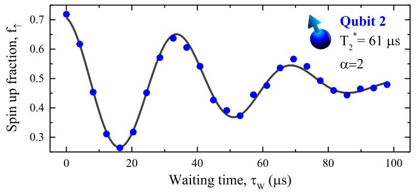<br/>
FIG. 4: Ramsey fringes of qubit Q2. A Ramsey experiment is performed, where two <span class="katex"><span class="katex-html" aria-hidden="true"><span class="base"><span class="strut" style="height:1em;vertical-align:-0.25em;"></span><span class="mord mathnormal" style="margin-right:0.0359em;">π</span><span class="mord">/2</span></span></span></span> pulses are applied with increasing waiting time in between. From the decay we infer a <span class="katex"><span class="katex-html" aria-hidden="true"><span class="base"><span class="strut" style="height:0.9368em;vertical-align:-0.2481em;"></span><span class="mord"><span class="mord mathnormal" style="margin-right:0.1389em;">T</span><span class="msupsub"><span class="vlist-t vlist-t2"><span class="vlist-r"><span class="vlist" style="height:0.6887em;"><span style="top:-2.4519em;margin-left:-0.1389em;margin-right:0.05em;"><span class="pstrut" style="height:2.7em;"></span><span class="sizing reset-size6 size3 mtight"><span class="mord mtight"><span class="mord mtight">2</span></span></span></span><span style="top:-3.063em;margin-right:0.05em;"><span class="pstrut" style="height:2.7em;"></span><span class="sizing reset-size6 size3 mtight"><span class="mord mtight"><span class="mord mtight">∗</span></span></span></span></span><span class="vlist-s">​</span></span><span class="vlist-r"><span class="vlist" style="height:0.2481em;"><span></span></span></span></span></span></span><span class="mspace" style="margin-right:0.2778em;"></span><span class="mrel">=</span><span class="mspace" style="margin-right:0.2778em;"></span></span><span class="base"><span class="strut" style="height:0.8389em;vertical-align:-0.1944em;"></span><span class="mord">61</span><span class="mspace nobreak"> </span><span class="mord mathnormal">μ</span><span class="mord mathrm">s</span></span></span></span> . The factor <span class="katex"><span class="katex-html" aria-hidden="true"><span class="base"><span class="strut" style="height:0.4306em;"></span><span class="mord mathnormal" style="margin-right:0.0037em;">α</span><span class="mspace" style="margin-right:0.2778em;"></span><span class="mrel">=</span><span class="mspace" style="margin-right:0.2778em;"></span></span><span class="base"><span class="strut" style="height:0.6444em;"></span><span class="mord">2</span></span></span></span> is the power of the exponent and consistent with the power measured on Q1 [4].</p>
<p>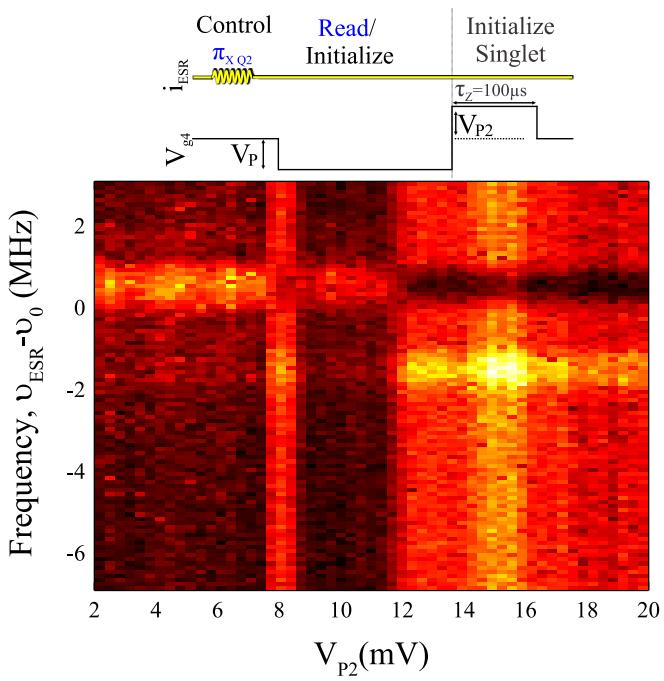<br/>
FIG. 5: ESR control and voltage pulsing. The ESR resonance frequency of Q2 depends on the state of Q1 due to the exchange coupling. Voltage pulsing towards the <span class="katex"><span class="katex-html" aria-hidden="true"><span class="base"><span class="strut" style="height:1em;vertical-align:-0.25em;"></span><span class="mord">∣1</span><span class="mpunct">,</span><span class="mspace" style="margin-right:0.1667em;"></span><span class="mord">2</span><span class="mclose">⟩</span></span></span></span> state results in singlet initialization. Another state is observed before the <span class="katex"><span class="katex-html" aria-hidden="true"><span class="base"><span class="strut" style="height:1em;vertical-align:-0.25em;"></span><span class="mord">∣1</span><span class="mpunct">,</span><span class="mspace" style="margin-right:0.1667em;"></span><span class="mord">2</span><span class="mclose">⟩</span></span></span></span> is reached, which might be an excited orbital or valley state.</p>
<p><span class="katex"><span class="katex-html" aria-hidden="true"><span class="base"><span class="strut" style="height:0.9805em;vertical-align:-0.2861em;"></span><span class="mord"><span class="mord mathnormal" style="margin-right:0.1076em;">f</span><span class="msupsub"><span class="vlist-t vlist-t2"><span class="vlist-r"><span class="vlist" style="height:0.3361em;"><span style="top:-2.55em;margin-left:-0.1076em;margin-right:0.05em;"><span class="pstrut" style="height:2.7em;"></span><span class="sizing reset-size6 size3 mtight"><span class="mord mtight"><span class="mrel mtight">↑</span></span></span></span></span><span class="vlist-s">​</span></span><span class="vlist-r"><span class="vlist" style="height:0.2861em;"><span></span></span></span></span></span></span><span class="mspace" style="margin-right:0.2778em;"></span><span class="mrel">=</span><span class="mspace" style="margin-right:0.2778em;"></span></span><span class="base"><span class="strut" style="height:1em;vertical-align:-0.25em;"></span><span class="mord">1/2</span></span></span></span> , except when on one of the two resonances, where it is rotated to either zero or one. Interestingly, we observe before the <span class="katex"><span class="katex-html" aria-hidden="true"><span class="base"><span class="strut" style="height:1em;vertical-align:-0.25em;"></span><span class="minner"><span class="mopen delimcenter" style="top:0em;">∣</span><span class="mord">1</span><span class="mpunct">,</span><span class="mspace" style="margin-right:0.1667em;"></span><span class="mord">2</span><span class="mclose nulldelimiter"></span></span></span></span></span> -state another crossing <span class="katex"><span class="katex-html" aria-hidden="true"><span class="base"><span class="strut" style="height:0.8333em;vertical-align:-0.15em;"></span><span class="mord"><span class="mord mathit">V</span><span class="msupsub"><span class="vlist-t vlist-t2"><span class="vlist-r"><span class="vlist" style="height:0.3283em;"><span style="top:-2.55em;margin-left:0em;margin-right:0.05em;"><span class="pstrut" style="height:2.7em;"></span><span class="sizing reset-size6 size3 mtight"><span class="mord mtight"><span class="mord mathnormal mtight" style="margin-right:0.1389em;">P</span><span class="mord mtight">2</span></span></span></span></span><span class="vlist-s">​</span></span><span class="vlist-r"><span class="vlist" style="height:0.15em;"><span></span></span></span></span></span></span><span class="mspace" style="margin-right:0.2778em;"></span><span class="mrel">=</span><span class="mspace" style="margin-right:0.2778em;"></span></span><span class="base"><span class="strut" style="height:0.6444em;"></span><span class="mord">8</span><span class="mspace"> </span><span class="mspace" style="margin-right:0.2778em;"></span><span class="mrel">:</span><span class="mspace" style="margin-right:0.2778em;"></span></span><span class="base"><span class="strut" style="height:0.8778em;vertical-align:-0.1944em;"></span><span class="mord"><span class="mord mathrm" style="margin-right:0.0139em;">mV</span></span><span class="mpunct">,</span></span></span></span> ), where the spin up fraction is similar as pulsing to the <span class="katex"><span class="katex-html" aria-hidden="true"><span class="base"><span class="strut" style="height:1em;vertical-align:-0.25em;"></span><span class="mord">∣1</span><span class="mpunct">,</span><span class="mspace" style="margin-right:0.1667em;"></span><span class="mord">2</span><span class="mclose">⟩</span></span></span></span> -state. This level crossing with the <span class="katex"><span class="katex-html" aria-hidden="true"><span class="base"><span class="strut" style="height:1em;vertical-align:-0.25em;"></span><span class="mrel">∣↓</span></span><span class="base"><span class="strut" style="height:0.8889em;vertical-align:-0.1944em;"></span><span class="mpunct">,</span><span class="mspace" style="margin-right:0.2778em;"></span><span class="mrel">↓</span></span><span class="base"><span class="strut" style="height:1em;vertical-align:-0.25em;"></span><span class="mclose">⟩</span></span></span></span> -state is possibly due to an excited orbital or valley state.</p>
<h1 id="3-controlled-phase-cz-operations">3. controlled phase (CZ) operations<a role="anchor" aria-hidden="true" tabindex="-1" data-no-popover="true" href="#3-controlled-phase-cz-operations" class="internal internal-link"><svg width="18" height="18" viewBox="0 0 24 24" fill="none" stroke="currentColor" stroke-width="2" stroke-linecap="round" stroke-linejoin="round"><path d="M10 13a5 5 0 0 0 7.54.54l3-3a5 5 0 0 0-7.07-7.07l-1.72 1.71"></path><path d="M14 11a5 5 0 0 0-7.54-.54l-3 3a5 5 0 0 0 7.07 7.07l1.71-1.71"></path></svg></a></h1>
<p>Single qubit operations are performed at far detuning, eliminating the noise associated with the exchange coupling. While in principle two qubit operations are possible using ESR-pulses in the presence of exchange coupling, the coupling itself can be used directly to allow fast two-qubit operations. The effect of the exchange coupling strongly depends on the relative values of the Zeeman energies <span class="katex"><span class="katex-html" aria-hidden="true"><span class="base"><span class="strut" style="height:0.8333em;vertical-align:-0.15em;"></span><span class="mord"><span class="mord mathnormal" style="margin-right:0.0576em;">E</span><span class="msupsub"><span class="vlist-t vlist-t2"><span class="vlist-r"><span class="vlist" style="height:0.3283em;"><span style="top:-2.55em;margin-left:-0.0576em;margin-right:0.05em;"><span class="pstrut" style="height:2.7em;"></span><span class="sizing reset-size6 size3 mtight"><span class="mord mtight"><span class="mord mathnormal mtight" style="margin-right:0.0715em;">Z</span><span class="mord mtight">1</span></span></span></span></span><span class="vlist-s">​</span></span><span class="vlist-r"><span class="vlist" style="height:0.15em;"><span></span></span></span></span></span></span></span></span></span> and <span class="katex"><span class="katex-html" aria-hidden="true"><span class="base"><span class="strut" style="height:0.8333em;vertical-align:-0.15em;"></span><span class="mord"><span class="mord mathnormal" style="margin-right:0.0576em;">E</span><span class="msupsub"><span class="vlist-t vlist-t2"><span class="vlist-r"><span class="vlist" style="height:0.3283em;"><span style="top:-2.55em;margin-left:-0.0576em;margin-right:0.05em;"><span class="pstrut" style="height:2.7em;"></span><span class="sizing reset-size6 size3 mtight"><span class="mord mtight"><span class="mord mathnormal mtight" style="margin-right:0.0715em;">Z</span><span class="mord mtight">2</span></span></span></span></span><span class="vlist-s">​</span></span><span class="vlist-r"><span class="vlist" style="height:0.15em;"><span></span></span></span></span></span></span></span></span></span> and the tunnel coupling <span class="katex"><span class="katex-html" aria-hidden="true"><span class="base"><span class="strut" style="height:0.7651em;vertical-align:-0.15em;"></span><span class="mord"><span class="mord mathnormal">t</span><span class="msupsub"><span class="vlist-t vlist-t2"><span class="vlist-r"><span class="vlist" style="height:0.3011em;"><span style="top:-2.55em;margin-left:0em;margin-right:0.05em;"><span class="pstrut" style="height:2.7em;"></span><span class="sizing reset-size6 size3 mtight"><span class="mord mtight"><span class="mord mtight">0</span></span></span></span></span><span class="vlist-s">​</span></span><span class="vlist-r"><span class="vlist" style="height:0.15em;"><span></span></span></span></span></span></span></span></span></span> . In silicon there is a degeneracy in valley, which can have its impact on the operation as well. However, in a regime where the valley splitting <span class="katex"><span class="katex-html" aria-hidden="true"><span class="base"><span class="strut" style="height:0.8333em;vertical-align:-0.15em;"></span><span class="mord"><span class="mord mathnormal" style="margin-right:0.0576em;">E</span><span class="msupsub"><span class="vlist-t vlist-t2"><span class="vlist-r"><span class="vlist" style="height:0.3283em;"><span style="top:-2.55em;margin-left:-0.0576em;margin-right:0.05em;"><span class="pstrut" style="height:2.7em;"></span><span class="sizing reset-size6 size3 mtight"><span class="mord mtight"><span class="mord mathnormal mtight" style="margin-right:0.2222em;">V</span></span></span></span></span><span class="vlist-s">​</span></span><span class="vlist-r"><span class="vlist" style="height:0.15em;"><span></span></span></span></span></span></span><span class="mspace" style="margin-right:0.2778em;"></span><span class="mrel">≫</span><span class="mspace" style="margin-right:0.2778em;"></span></span><span class="base"><span class="strut" style="height:0.7651em;vertical-align:-0.15em;"></span><span class="mord"><span class="mord mathnormal">t</span><span class="msupsub"><span class="vlist-t vlist-t2"><span class="vlist-r"><span class="vlist" style="height:0.3011em;"><span style="top:-2.55em;margin-left:0em;margin-right:0.05em;"><span class="pstrut" style="height:2.7em;"></span><span class="sizing reset-size6 size3 mtight"><span class="mord mtight"><span class="mord mtight">0</span></span></span></span></span><span class="vlist-s">​</span></span><span class="vlist-r"><span class="vlist" style="height:0.15em;"><span></span></span></span></span></span></span></span></span></span> , only one valley is relevant. Also, MOS double quantum dots have Coulomb repulsions with on-site energies <span class="katex"><span class="katex-html" aria-hidden="true"><span class="base"><span class="strut" style="height:0.7224em;vertical-align:-0.0391em;"></span><span class="mord mathnormal" style="margin-right:0.109em;">U</span><span class="mspace" style="margin-right:0.2778em;"></span><span class="mrel">≫</span><span class="mspace" style="margin-right:0.2778em;"></span></span><span class="base"><span class="strut" style="height:0.7651em;vertical-align:-0.15em;"></span><span class="mord"><span class="mord mathnormal">t</span><span class="msupsub"><span class="vlist-t vlist-t2"><span class="vlist-r"><span class="vlist" style="height:0.3011em;"><span style="top:-2.55em;margin-left:0em;margin-right:0.05em;"><span class="pstrut" style="height:2.7em;"></span><span class="sizing reset-size6 size3 mtight"><span class="mord mtight"><span class="mord mtight">0</span></span></span></span></span><span class="vlist-s">​</span></span><span class="vlist-r"><span class="vlist" style="height:0.15em;"><span></span></span></span></span></span></span></span></span></span> , such that coupling between the <span class="katex"><span class="katex-html" aria-hidden="true"><span class="base"><span class="strut" style="height:1em;vertical-align:-0.25em;"></span><span class="mord">∣0</span><span class="mpunct">,</span><span class="mspace" style="margin-right:0.1667em;"></span><span class="mord">2</span><span class="mclose">⟩</span></span></span></span> -states and the <span class="katex"><span class="katex-html" aria-hidden="true"><span class="base"><span class="strut" style="height:1em;vertical-align:-0.25em;"></span><span class="mord">∣2</span><span class="mpunct">,</span><span class="mspace" style="margin-right:0.1667em;"></span><span class="mord">0</span><span class="mclose">⟩</span></span></span></span> -states are vanishingly small. Therefore, the system is well described using only single-particle terms (excepth for the on-site Coulomb interaction), resulting in Eq.1 of the main text.</p>
<p>Figure 7 shows the time evolution of the CZ-operations in different parameter regimes. Here, two Rabi <span class="katex"><span class="katex-html" aria-hidden="true"><span class="base"><span class="strut" style="height:1em;vertical-align:-0.25em;"></span><span class="mord mathnormal" style="margin-right:0.0359em;">π</span><span class="mord">/2</span></span></span></span> pulses with a phase difference <span class="katex"><span class="katex-html" aria-hidden="true"><span class="base"><span class="strut" style="height:0.8889em;vertical-align:-0.1944em;"></span><span class="mord mathnormal">ϕ</span><span class="mspace" style="margin-right:0.2778em;"></span><span class="mrel">=</span><span class="mspace" style="margin-right:0.2778em;"></span></span><span class="base"><span class="strut" style="height:1em;vertical-align:-0.25em;"></span><span class="mord mathnormal" style="margin-right:0.0359em;">π</span><span class="mord">/2</span></span></span></span> performed at far detuning on the target qubit are separated by a waiting time √ <span class="katex"><span class="katex-html" aria-hidden="true"><span class="base"><span class="strut" style="height:0.5806em;vertical-align:-0.15em;"></span><span class="mord"><span class="mord mathnormal" style="margin-right:0.1132em;">τ</span><span class="msupsub"><span class="vlist-t vlist-t2"><span class="vlist-r"><span class="vlist" style="height:0.3283em;"><span style="top:-2.55em;margin-left:-0.1132em;margin-right:0.05em;"><span class="pstrut" style="height:2.7em;"></span><span class="sizing reset-size6 size3 mtight"><span class="mord mtight"><span class="mord mathnormal mtight" style="margin-right:0.0715em;">Z</span></span></span></span></span><span class="vlist-s">​</span></span><span class="vlist-r"><span class="vlist" style="height:0.15em;"><span></span></span></span></span></span></span></span></span></span> in the presence of interaction between the two qubits. When <span class="katex"><span class="katex-html" aria-hidden="true"><span class="base"><span class="strut" style="height:1.0572em;vertical-align:-0.15em;"></span><span class="mord sqrt"><span class="vlist-t vlist-t2"><span class="vlist-r"><span class="vlist" style="height:0.9072em;"><span class="svg-align" style="top:-3em;"><span class="pstrut" style="height:3em;"></span><span class="mord" style="padding-left:0.833em;"><span class="mord">2</span></span></span><span style="top:-2.8672em;"><span class="pstrut" style="height:3em;"></span><span class="hide-tail" style="min-width:0.853em;height:1.08em;"><svg xmlns="http://www.w3.org/2000/svg" width="400em" height="1.08em" viewBox="0 0 400000 1080" preserveAspectRatio="xMinYMin slice"><path d="M95,702
c-2.7,0,-7.17,-2.7,-13.5,-8c-5.8,-5.3,-9.5,-10,-9.5,-14
c0,-2,0.3,-3.3,1,-4c1.3,-2.7,23.83,-20.7,67.5,-54
c44.2,-33.3,65.8,-50.3,66.5,-51c1.3,-1.3,3,-2,5,-2c4.7,0,8.7,3.3,12,10
s173,378,173,378c0.7,0,35.3,-71,104,-213c68.7,-142,137.5,-285,206.5,-429
c69,-144,104.5,-217.7,106.5,-221
l0 -0
c5.3,-9.3,12,-14,20,-14
H400000v40H845.2724
s-225.272,467,-225.272,467s-235,486,-235,486c-2.7,4.7,-9,7,-19,7
c-6,0,-10,-1,-12,-3s-194,-422,-194,-422s-65,47,-65,47z
M834 80h400000v40h-400000z"></path></svg></span></span></span><span class="vlist-s">​</span></span><span class="vlist-r"><span class="vlist" style="height:0.1328em;"><span></span></span></span></span></span><span class="mord"><span class="mord mathnormal">t</span><span class="msupsub"><span class="vlist-t vlist-t2"><span class="vlist-r"><span class="vlist" style="height:0.3011em;"><span style="top:-2.55em;margin-left:0em;margin-right:0.05em;"><span class="pstrut" style="height:2.7em;"></span><span class="sizing reset-size6 size3 mtight"><span class="mord mtight"><span class="mord mtight">0</span></span></span></span></span><span class="vlist-s">​</span></span><span class="vlist-r"><span class="vlist" style="height:0.15em;"><span></span></span></span></span></span></span><span class="mspace" style="margin-right:0.2778em;"></span><span class="mrel">=</span><span class="mspace" style="margin-right:0.2778em;"></span></span><span class="base"><span class="strut" style="height:0.8444em;vertical-align:-0.15em;"></span><span class="mord mathnormal" style="margin-right:0.0379em;">δ</span><span class="mord"><span class="mord mathnormal" style="margin-right:0.0576em;">E</span><span class="msupsub"><span class="vlist-t vlist-t2"><span class="vlist-r"><span class="vlist" style="height:0.3283em;"><span style="top:-2.55em;margin-left:-0.0576em;margin-right:0.05em;"><span class="pstrut" style="height:2.7em;"></span><span class="sizing reset-size6 size3 mtight"><span class="mord mtight"><span class="mord mathnormal mtight" style="margin-right:0.0715em;">Z</span></span></span></span></span><span class="vlist-s">​</span></span><span class="vlist-r"><span class="vlist" style="height:0.15em;"><span></span></span></span></span></span></span></span></span></span> , the in-plane oscillations of the target qubit with the control qubit initialized <span class="katex"><span class="katex-html" aria-hidden="true"><span class="base"><span class="strut" style="height:1em;vertical-align:-0.25em;"></span><span class="minner"><span class="mopen delimcenter" style="top:0em;">∣</span><span class="mrel">↑</span><span class="mspace" style="margin-right:0.2778em;"></span><span class="minner"><span class="mopen delimcenter" style="top:0em;">(</span><span class="mrel">↓</span><span class="mclose delimcenter" style="top:0em;">)</span></span><span class="mclose nulldelimiter"></span></span></span></span></span> are nicely out-of-phase (Fig. 6a), producing a high fidelity CNOT operation when <span class="katex"><span class="katex-html" aria-hidden="true"><span class="base"><span class="strut" style="height:0.6331em;vertical-align:-0.15em;"></span><span class="mord"><span class="mord mathnormal" style="margin-right:0.1132em;">τ</span><span class="msupsub"><span class="vlist-t vlist-t2"><span class="vlist-r"><span class="vlist" style="height:0.3283em;"><span style="top:-2.55em;margin-left:-0.1132em;margin-right:0.05em;"><span class="pstrut" style="height:2.7em;"></span><span class="sizing reset-size6 size3 mtight"><span class="mord mtight"><span class="mord mathnormal mtight" style="margin-right:0.0715em;">Z</span></span></span></span></span><span class="vlist-s">​</span></span><span class="vlist-r"><span class="vlist" style="height:0.15em;"><span></span></span></span></span></span></span><span class="mspace" style="margin-right:0.2778em;"></span><span class="mrel">≈</span><span class="mspace" style="margin-right:0.2778em;"></span></span><span class="base"><span class="strut" style="height:0.6444em;"></span><span class="mord">100</span><span class="mspace nobreak"> </span><span class="mord"><span class="mord mathrm">ns</span></span></span></span></span> . For other ratios of <span class="katex"><span class="katex-html" aria-hidden="true"><span class="base"><span class="strut" style="height:1em;vertical-align:-0.25em;"></span><span class="mord"><span class="mord mathnormal">t</span><span class="msupsub"><span class="vlist-t vlist-t2"><span class="vlist-r"><span class="vlist" style="height:0.3011em;"><span style="top:-2.55em;margin-left:0em;margin-right:0.05em;"><span class="pstrut" style="height:2.7em;"></span><span class="sizing reset-size6 size3 mtight"><span class="mord mtight"><span class="mord mtight">0</span></span></span></span></span><span class="vlist-s">​</span></span><span class="vlist-r"><span class="vlist" style="height:0.15em;"><span></span></span></span></span></span></span><span class="mord">/</span><span class="mord mathnormal" style="margin-right:0.0379em;">δ</span><span class="mord"><span class="mord mathnormal" style="margin-right:0.0576em;">E</span><span class="msupsub"><span class="vlist-t vlist-t2"><span class="vlist-r"><span class="vlist" style="height:0.1514em;"><span style="top:-2.55em;margin-left:-0.0576em;margin-right:0.05em;"><span class="pstrut" style="height:2.7em;"></span><span class="sizing reset-size6 size3 mtight"><span class="mord mtight"><span class="mord mathnormal mtight" style="margin-right:0.044em;">z</span></span></span></span></span><span class="vlist-s">​</span></span><span class="vlist-r"><span class="vlist" style="height:0.15em;"><span></span></span></span></span></span></span></span></span></span> (Fig. 6b), high fidelity operations can still be obtained by correcting the frequency difference using a different phase <span class="katex"><span class="katex-html" aria-hidden="true"><span class="base"><span class="strut" style="height:0.8889em;vertical-align:-0.1944em;"></span><span class="mord mathnormal">ϕ</span><span class="mspace" style="margin-right:0.2778em;"></span><span class="mrel">=</span><span class="mspace" style="margin-right:0.2778em;"></span></span><span class="base"><span class="strut" style="height:0.9805em;vertical-align:-0.2861em;"></span><span class="mord"><span class="mord mathnormal">ϕ</span><span class="msupsub"><span class="vlist-t vlist-t2"><span class="vlist-r"><span class="vlist" style="height:0.3361em;"><span style="top:-2.55em;margin-left:0em;margin-right:0.05em;"><span class="pstrut" style="height:2.7em;"></span><span class="sizing reset-size6 size3 mtight"><span class="mord mtight"><span class="mrel mtight">↑↓</span></span></span></span></span><span class="vlist-s">​</span></span><span class="vlist-r"><span class="vlist" style="height:0.2861em;"><span></span></span></span></span></span></span></span></span></span> , see Fig. 3 of the main text, between the two Rabi <span class="katex"><span class="katex-html" aria-hidden="true"><span class="base"><span class="strut" style="height:1em;vertical-align:-0.25em;"></span><span class="mord mathnormal" style="margin-right:0.0359em;">π</span><span class="mord">/2</span></span></span></span> pulses. When the exchange coupling becomes too large with respect to the Zeeman energy difference, the qubits start to make SWAP operations (Fig. 6c), which have to be corrected with more complex pulses. In the extreme that <span class="katex"><span class="katex-html" aria-hidden="true"><span class="base"><span class="strut" style="height:0.8444em;vertical-align:-0.15em;"></span><span class="mord mathnormal" style="margin-right:0.0379em;">δ</span><span class="mord"><span class="mord mathnormal" style="margin-right:0.0576em;">E</span><span class="msupsub"><span class="vlist-t vlist-t2"><span class="vlist-r"><span class="vlist" style="height:0.3283em;"><span style="top:-2.55em;margin-left:-0.0576em;margin-right:0.05em;"><span class="pstrut" style="height:2.7em;"></span><span class="sizing reset-size6 size3 mtight"><span class="mord mtight"><span class="mord mathnormal mtight" style="margin-right:0.0715em;">Z</span></span></span></span></span><span class="vlist-s">​</span></span><span class="vlist-r"><span class="vlist" style="height:0.15em;"><span></span></span></span></span></span></span><span class="mspace" style="margin-right:0.2778em;"></span><span class="mrel">≫</span><span class="mspace" style="margin-right:0.2778em;"></span></span><span class="base"><span class="strut" style="height:0.7651em;vertical-align:-0.15em;"></span><span class="mord"><span class="mord mathnormal">t</span><span class="msupsub"><span class="vlist-t vlist-t2"><span class="vlist-r"><span class="vlist" style="height:0.3011em;"><span style="top:-2.55em;margin-left:0em;margin-right:0.05em;"><span class="pstrut" style="height:2.7em;"></span><span class="sizing reset-size6 size3 mtight"><span class="mord mtight"><span class="mord mtight">0</span></span></span></span></span><span class="vlist-s">​</span></span><span class="vlist-r"><span class="vlist" style="height:0.15em;"><span></span></span></span></span></span></span></span></span></span> (Fig. 6d), in-plane oscillations occur for only one <span class="katex"><span class="katex-html" aria-hidden="true"><span class="base"><span class="strut" style="height:0.5806em;vertical-align:-0.15em;"></span><span class="mord"><span class="mord mathnormal" style="margin-right:0.0359em;">σ</span><span class="msupsub"><span class="vlist-t vlist-t2"><span class="vlist-r"><span class="vlist" style="height:0.3283em;"><span style="top:-2.55em;margin-left:-0.0359em;margin-right:0.05em;"><span class="pstrut" style="height:2.7em;"></span><span class="sizing reset-size6 size3 mtight"><span class="mord mtight"><span class="mord mathnormal mtight" style="margin-right:0.0715em;">Z</span></span></span></span></span><span class="vlist-s">​</span></span><span class="vlist-r"><span class="vlist" style="height:0.15em;"><span></span></span></span></span></span></span></span></span></span> .</p>
<p>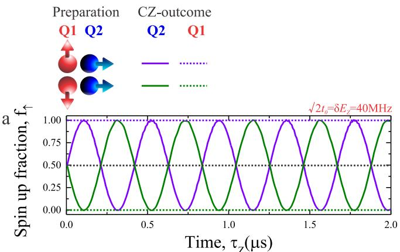</p>
<p>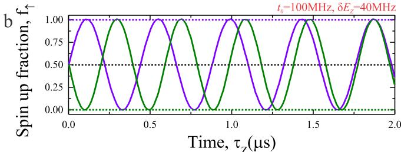</p>
<p>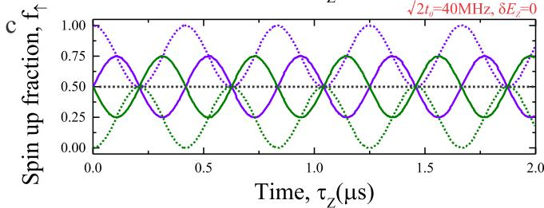</p>
<p>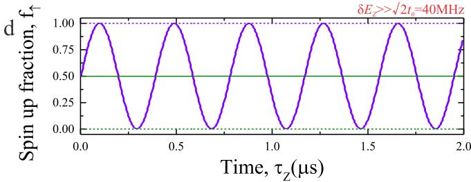<br/>
FIG. 6: CPHASE using CZ. Spin up fraction of the CZ operation as function of the interaction time <span class="katex"><span class="katex-html" aria-hidden="true"><span class="base"><span class="strut" style="height:0.5806em;vertical-align:-0.15em;"></span><span class="mord"><span class="mord mathnormal" style="margin-right:0.1132em;">τ</span><span class="msupsub"><span class="vlist-t vlist-t2"><span class="vlist-r"><span class="vlist" style="height:0.3283em;"><span style="top:-2.55em;margin-left:-0.1132em;margin-right:0.05em;"><span class="pstrut" style="height:2.7em;"></span><span class="sizing reset-size6 size3 mtight"><span class="mord mtight"><span class="mord mathnormal mtight" style="margin-right:0.0715em;">Z</span></span></span></span></span><span class="vlist-s">​</span></span><span class="vlist-r"><span class="vlist" style="height:0.15em;"><span></span></span></span></span></span></span></span></span></span> for different values of the Zeeman energy and tunnel coupling. When <span class="katex"><span class="katex-html" aria-hidden="true"><span class="base"><span class="strut" style="height:1.5034em;vertical-align:-0.305em;"></span><span class="mord accent"><span class="vlist-t vlist-t2"><span class="vlist-r"><span class="vlist" style="height:1.1984em;"><span style="top:-3em;"><span class="pstrut" style="height:3em;"></span><span class="mord sqrt"><span class="vlist-t vlist-t2"><span class="vlist-r"><span class="vlist" style="height:0.935em;"><span class="svg-align" style="top:-3.2em;"><span class="pstrut" style="height:3.2em;"></span><span class="mord" style="padding-left:1em;"><span class="mopen">(</span><span class="mord">2</span><span class="mclose">)</span></span></span><span style="top:-2.895em;"><span class="pstrut" style="height:3.2em;"></span><span class="hide-tail" style="min-width:1.02em;height:1.28em;"><svg xmlns="http://www.w3.org/2000/svg" width="400em" height="1.28em" viewBox="0 0 400000 1296" preserveAspectRatio="xMinYMin slice"><path d="M263,681c0.7,0,18,39.7,52,119
c34,79.3,68.167,158.7,102.5,238c34.3,79.3,51.8,119.3,52.5,120
c340,-704.7,510.7,-1060.3,512,-1067
l0 -0
c4.7,-7.3,11,-11,19,-11
H40000v40H1012.3
s-271.3,567,-271.3,567c-38.7,80.7,-84,175,-136,283c-52,108,-89.167,185.3,-111.5,232
c-22.3,46.7,-33.8,70.3,-34.5,71c-4.7,4.7,-12.3,7,-23,7s-12,-1,-12,-1
s-109,-253,-109,-253c-72.7,-168,-109.3,-252,-110,-252c-10.7,8,-22,16.7,-34,26
c-22,17.3,-33.3,26,-34,26s-26,-26,-26,-26s76,-59,76,-59s76,-60,76,-60z
M1001 80h400000v40h-400000z"></path></svg></span></span></span><span class="vlist-s">​</span></span><span class="vlist-r"><span class="vlist" style="height:0.305em;"><span></span></span></span></span></span></span><span style="top:-3.504em;"><span class="pstrut" style="height:3em;"></span><span class="accent-body" style="left:-0.25em;"><span class="mord">^</span></span></span></span><span class="vlist-s">​</span></span><span class="vlist-r"><span class="vlist" style="height:0.305em;"><span></span></span></span></span></span><span class="mord"><span class="mord mathnormal">t</span><span class="msupsub"><span class="vlist-t vlist-t2"><span class="vlist-r"><span class="vlist" style="height:0.3011em;"><span style="top:-2.55em;margin-left:0em;margin-right:0.05em;"><span class="pstrut" style="height:2.7em;"></span><span class="sizing reset-size6 size3 mtight"><span class="mord mtight"><span class="mord mtight">0</span></span></span></span></span><span class="vlist-s">​</span></span><span class="vlist-r"><span class="vlist" style="height:0.15em;"><span></span></span></span></span></span></span><span class="mspace" style="margin-right:0.2778em;"></span><span class="mrel">=</span><span class="mspace" style="margin-right:0.2778em;"></span></span><span class="base"><span class="strut" style="height:0.8444em;vertical-align:-0.15em;"></span><span class="mord mathnormal" style="margin-right:0.0379em;">δ</span><span class="mord"><span class="mord mathnormal" style="margin-right:0.0576em;">E</span><span class="msupsub"><span class="vlist-t vlist-t2"><span class="vlist-r"><span class="vlist" style="height:0.3283em;"><span style="top:-2.55em;margin-left:-0.0576em;margin-right:0.05em;"><span class="pstrut" style="height:2.7em;"></span><span class="sizing reset-size6 size3 mtight"><span class="mord mtight"><span class="mord mathnormal mtight" style="margin-right:0.0715em;">Z</span></span></span></span></span><span class="vlist-s">​</span></span><span class="vlist-r"><span class="vlist" style="height:0.15em;"><span></span></span></span></span></span></span></span></span></span> (a) the CZ oscillations of the two <span class="katex"><span class="katex-html" aria-hidden="true"><span class="base"><span class="strut" style="height:0.5806em;vertical-align:-0.15em;"></span><span class="mord"><span class="mord mathnormal" style="margin-right:0.0359em;">σ</span><span class="msupsub"><span class="vlist-t vlist-t2"><span class="vlist-r"><span class="vlist" style="height:0.1514em;"><span style="top:-2.55em;margin-left:-0.0359em;margin-right:0.05em;"><span class="pstrut" style="height:2.7em;"></span><span class="sizing reset-size6 size3 mtight"><span class="mord mtight"><span class="mord mathnormal mtight" style="margin-right:0.044em;">z</span></span></span></span></span><span class="vlist-s">​</span></span><span class="vlist-r"><span class="vlist" style="height:0.15em;"><span></span></span></span></span></span></span></span></span></span> states are approximately equal and opposite; whereas for other values (b) the oscillations evolve with different frequency. When the Zeeman energy difference is small, SWAP oscillations appear (c) and when the Zeeman energy difference is very large (d), rotations occur for only one <span class="katex"><span class="katex-html" aria-hidden="true"><span class="base"><span class="strut" style="height:0.5806em;vertical-align:-0.15em;"></span><span class="mord"><span class="mord mathnormal" style="margin-right:0.0359em;">σ</span><span class="msupsub"><span class="vlist-t vlist-t2"><span class="vlist-r"><span class="vlist" style="height:0.3283em;"><span style="top:-2.55em;margin-left:-0.0359em;margin-right:0.05em;"><span class="pstrut" style="height:2.7em;"></span><span class="sizing reset-size6 size3 mtight"><span class="mord mtight"><span class="mord mathnormal mtight" style="margin-right:0.0715em;">Z</span></span></span></span></span><span class="vlist-s">​</span></span><span class="vlist-r"><span class="vlist" style="height:0.15em;"><span></span></span></span></span></span></span></span></span></span> . A high-fidelity CNOT-gate using CZ can be constructed in principle in all parameter regimes by choosing the right single qubit operations.</p>
<h1 id="4-xzy-control-and-cz-operations">4. XZY-control and CZ-operations<a role="anchor" aria-hidden="true" tabindex="-1" data-no-popover="true" href="#4-xzy-control-and-cz-operations" class="internal internal-link"><svg width="18" height="18" viewBox="0 0 24 24" fill="none" stroke="currentColor" stroke-width="2" stroke-linecap="round" stroke-linejoin="round"><path d="M10 13a5 5 0 0 0 7.54.54l3-3a5 5 0 0 0-7.07-7.07l-1.72 1.71"></path><path d="M14 11a5 5 0 0 0-7.54-.54l-3 3a5 5 0 0 0 7.07 7.07l1.71-1.71"></path></svg></a></h1>
<p>We have explored the CZ-performance using an XZY-pulsing sequence, consisting of an X-pulse and Y-pulse of length <span class="katex"><span class="katex-html" aria-hidden="true"><span class="base"><span class="strut" style="height:1em;vertical-align:-0.25em;"></span><span class="mord mathnormal" style="margin-right:0.0359em;">π</span><span class="mord">/2</span></span></span></span> and calibrated to have phase difference <span class="katex"><span class="katex-html" aria-hidden="true"><span class="base"><span class="strut" style="height:0.8889em;vertical-align:-0.1944em;"></span><span class="mord mathnormal">ϕ</span><span class="mspace" style="margin-right:0.2778em;"></span><span class="mrel">=</span><span class="mspace" style="margin-right:0.2778em;"></span></span><span class="base"><span class="strut" style="height:1em;vertical-align:-0.25em;"></span><span class="mord mathnormal" style="margin-right:0.0359em;">π</span><span class="mord">/2</span></span></span></span> . The time <span class="katex"><span class="katex-html" aria-hidden="true"><span class="base"><span class="strut" style="height:0.5806em;vertical-align:-0.15em;"></span><span class="mord"><span class="mord mathnormal" style="margin-right:0.1132em;">τ</span><span class="msupsub"><span class="vlist-t vlist-t2"><span class="vlist-r"><span class="vlist" style="height:0.3283em;"><span style="top:-2.55em;margin-left:-0.1132em;margin-right:0.05em;"><span class="pstrut" style="height:2.7em;"></span><span class="sizing reset-size6 size3 mtight"><span class="mord mtight"><span class="mord mathnormal mtight" style="margin-right:0.0715em;">Z</span></span></span></span></span><span class="vlist-s">​</span></span><span class="vlist-r"><span class="vlist" style="height:0.15em;"><span></span></span></span></span></span></span></span></span></span> is fixed to <span class="katex"><span class="katex-html" aria-hidden="true"><span class="base"><span class="strut" style="height:0.8389em;vertical-align:-0.1944em;"></span><span class="mord">1.7</span><span class="mspace nobreak"> </span><span class="mord mathnormal">μ</span><span class="mord mathrm">s</span></span></span></span> , equal to a Rabi <span class="katex"><span class="katex-html" aria-hidden="true"><span class="base"><span class="strut" style="height:0.4306em;"></span><span class="mord mathnormal" style="margin-right:0.0359em;">π</span></span></span></span> -rotation. The result is shown in Fig. 6, where the ’upward bending’ of the lines are due to an increase of the in-plane rotation frequency (determined by the detuning frequency and the exchange coupling).</p>
<p>After carefully tuning the qubit, we are able to observe over <span class="katex"><span class="katex-html" aria-hidden="true"><span class="base"><span class="strut" style="height:0.6833em;"></span><span class="mord">25</span><span class="mspace"> </span><span class="mord"><span class="mord mathrm">CZ</span></span><span class="mord">.</span></span></span></span> -oscillations, see Fig. 8. The two-qubit system has a coherence time <span class="katex"><span class="katex-html" aria-hidden="true"><span class="base"><span class="strut" style="height:0.8333em;vertical-align:-0.15em;"></span><span class="mord"><span class="mord mathnormal" style="margin-right:0.1389em;">T</span><span class="msupsub"><span class="vlist-t vlist-t2"><span class="vlist-r"><span class="vlist" style="height:0.3283em;"><span style="top:-2.55em;margin-left:-0.1389em;margin-right:0.05em;"><span class="pstrut" style="height:2.7em;"></span><span class="sizing reset-size6 size3 mtight"><span class="mord mtight"><span class="mord mathnormal mtight" style="margin-right:0.0715em;">C</span><span class="mord mathnormal mtight" style="margin-right:0.0715em;">Z</span></span></span></span></span><span class="vlist-s">​</span></span><span class="vlist-r"><span class="vlist" style="height:0.15em;"><span></span></span></span></span></span></span><span class="mspace" style="margin-right:0.2778em;"></span><span class="mrel">=</span><span class="mspace" style="margin-right:0.2778em;"></span></span><span class="base"><span class="strut" style="height:0.8389em;vertical-align:-0.1944em;"></span><span class="mord">8.3</span><span class="mspace nobreak"> </span><span class="mord mathnormal">μ</span><span class="mord mathrm">s</span></span></span></span> at this exchange coupling resulting in <span class="katex"><span class="katex-html" aria-hidden="true"><span class="base"><span class="strut" style="height:0.7167em;vertical-align:-0.2861em;"></span><span class="mord"><span class="mord mathnormal" style="margin-right:0.0637em;">ν</span><span class="msupsub"><span class="vlist-t vlist-t2"><span class="vlist-r"><span class="vlist" style="height:0.3361em;"><span style="top:-2.55em;margin-left:-0.0637em;margin-right:0.05em;"><span class="pstrut" style="height:2.7em;"></span><span class="sizing reset-size6 size3 mtight"><span class="mord mtight"><span class="mrel mtight">↑↓</span></span></span></span></span><span class="vlist-s">​</span></span><span class="vlist-r"><span class="vlist" style="height:0.2861em;"><span></span></span></span></span></span></span><span class="mspace" style="margin-right:0.2778em;"></span><span class="mrel">=</span><span class="mspace" style="margin-right:0.2778em;"></span></span><span class="base"><span class="strut" style="height:0.6833em;"></span><span class="mord">3.14</span><span class="mspace nobreak"> </span><span class="mord"><span class="mord mathrm">MHz</span></span></span></span></span> , which corresponds to over 100 <span class="katex"><span class="katex-html" aria-hidden="true"><span class="base"><span class="strut" style="height:1em;vertical-align:-0.25em;"></span><span class="mord"><span class="mord mathbf">CZ</span></span><span class="mopen">(</span><span class="mord mathnormal" style="margin-right:0.0359em;">π</span><span class="mclose">)</span></span></span></span> -operations within the coherence time.</p>
<p>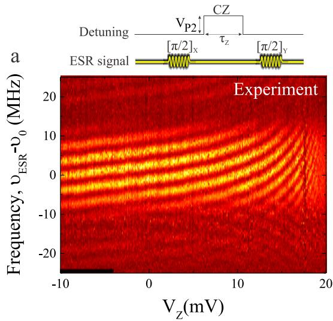</p>
<p>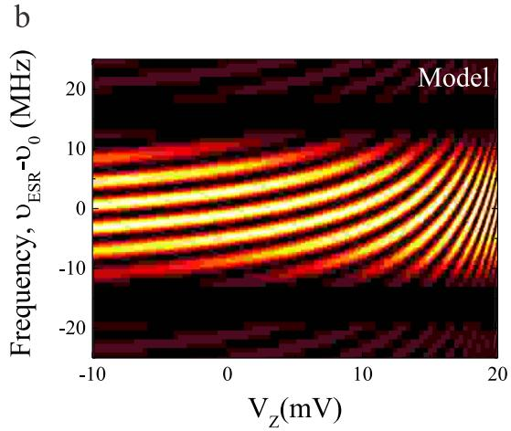<br/>
FIG. 7: XZY-sequence. Resulting spin up fraction after two Rabi pulses with length <span class="katex"><span class="katex-html" aria-hidden="true"><span class="base"><span class="strut" style="height:1em;vertical-align:-0.25em;"></span><span class="mord mathnormal" style="margin-right:0.0359em;">π</span><span class="mord">/2</span></span></span></span> separated with a <span class="katex"><span class="katex-html" aria-hidden="true"><span class="base"><span class="strut" style="height:0.8333em;vertical-align:-0.15em;"></span><span class="mord"><span class="mord mathnormal" style="margin-right:0.2222em;">V</span><span class="msupsub"><span class="vlist-t vlist-t2"><span class="vlist-r"><span class="vlist" style="height:0.3283em;"><span style="top:-2.55em;margin-left:-0.2222em;margin-right:0.05em;"><span class="pstrut" style="height:2.7em;"></span><span class="sizing reset-size6 size3 mtight"><span class="mord mtight"><span class="mord mathnormal mtight" style="margin-right:0.1389em;">P</span><span class="mord mtight">2</span></span></span></span></span><span class="vlist-s">​</span></span><span class="vlist-r"><span class="vlist" style="height:0.15em;"><span></span></span></span></span></span></span></span></span></span> -pulse with length <span class="katex"><span class="katex-html" aria-hidden="true"><span class="base"><span class="strut" style="height:0.5806em;vertical-align:-0.15em;"></span><span class="mord"><span class="mord mathnormal" style="margin-right:0.1132em;">τ</span><span class="msupsub"><span class="vlist-t vlist-t2"><span class="vlist-r"><span class="vlist" style="height:0.3283em;"><span style="top:-2.55em;margin-left:-0.1132em;margin-right:0.05em;"><span class="pstrut" style="height:2.7em;"></span><span class="sizing reset-size6 size3 mtight"><span class="mord mtight"><span class="mord mathnormal mtight" style="margin-right:0.0715em;">Z</span></span></span></span></span><span class="vlist-s">​</span></span><span class="vlist-r"><span class="vlist" style="height:0.15em;"><span></span></span></span></span></span></span><span class="mspace" style="margin-right:0.2778em;"></span><span class="mrel">=</span><span class="mspace" style="margin-right:0.2778em;"></span></span><span class="base"><span class="strut" style="height:0.6444em;"></span><span class="mord">1.7</span></span></span></span> µs and changing the height of the pulse. Increasing the voltage pulse, increases the exchange coupling, resulting in in-plane oscillations. The experiment a nicely coincides with a model b based on the <span class="katex"><span class="katex-html" aria-hidden="true"><span class="base"><span class="strut" style="height:1em;vertical-align:-0.25em;"></span><span class="mord">∣1</span><span class="mpunct">,</span><span class="mspace" style="margin-right:0.1667em;"></span><span class="mord">1</span><span class="mclose">⟩</span></span></span></span> to <span class="katex"><span class="katex-html" aria-hidden="true"><span class="base"><span class="strut" style="height:1em;vertical-align:-0.25em;"></span><span class="mord">∣0</span><span class="mpunct">,</span><span class="mspace" style="margin-right:0.1667em;"></span><span class="mord">2</span><span class="mclose">⟩</span></span></span></span> -coupling. In the vertical direction, the slow oscillations correspond to a Rabi pulse with length <span class="katex"><span class="katex-html" aria-hidden="true"><span class="base"><span class="strut" style="height:0.4306em;"></span><span class="mord mathnormal" style="margin-right:0.0359em;">π</span></span></span></span> , the faster oscillations correspond to in-plane Ramsey rotations due to finite detuning frequency. Moving along the horizontal direction changes the frequency of the in-plane rotations due to the exchange coupling. Due to imperfect initialization in the experiment, Q1 is sometimes in the state <span class="katex"><span class="katex-html" aria-hidden="true"><span class="base"><span class="strut" style="height:1em;vertical-align:-0.25em;"></span><span class="minner"><span class="mopen delimcenter" style="top:0em;">∣</span><span class="mrel">↑</span><span class="mclose nulldelimiter"></span></span></span></span></span> , resulting in the (less visible) downward bending lines.</p>
<p>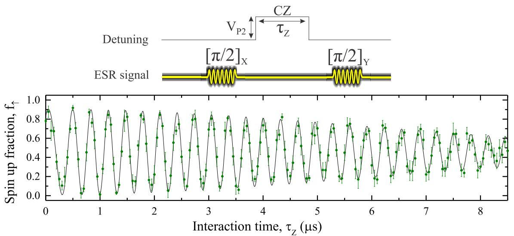<br/>
FIG. 8: Two qubit CZ-operation. Spin up fraction after two Rabi rotations with length <span class="katex"><span class="katex-html" aria-hidden="true"><span class="base"><span class="strut" style="height:1em;vertical-align:-0.25em;"></span><span class="mord mathnormal" style="margin-right:0.0359em;">π</span><span class="mord">/2</span></span></span></span> and phase difference <span class="katex"><span class="katex-html" aria-hidden="true"><span class="base"><span class="strut" style="height:0.8889em;vertical-align:-0.1944em;"></span><span class="mord mathnormal">ϕ</span><span class="mspace" style="margin-right:0.2778em;"></span><span class="mrel">=</span><span class="mspace" style="margin-right:0.2778em;"></span></span><span class="base"><span class="strut" style="height:1em;vertical-align:-0.25em;"></span><span class="mord mathnormal" style="margin-right:0.0359em;">π</span><span class="mord">/2</span></span></span></span> are separated with increasing time <span class="katex"><span class="katex-html" aria-hidden="true"><span class="base"><span class="strut" style="height:0.5806em;vertical-align:-0.15em;"></span><span class="mord"><span class="mord mathnormal" style="margin-right:0.1132em;">τ</span><span class="msupsub"><span class="vlist-t vlist-t2"><span class="vlist-r"><span class="vlist" style="height:0.3283em;"><span style="top:-2.55em;margin-left:-0.1132em;margin-right:0.05em;"><span class="pstrut" style="height:2.7em;"></span><span class="sizing reset-size6 size3 mtight"><span class="mord mtight"><span class="mord mathnormal mtight" style="margin-right:0.0715em;">Z</span></span></span></span></span><span class="vlist-s">​</span></span><span class="vlist-r"><span class="vlist" style="height:0.15em;"><span></span></span></span></span></span></span></span></span></span> . The presence of exchange coupling results in CZ-oscillations with frequency <span class="katex"><span class="katex-html" aria-hidden="true"><span class="base"><span class="strut" style="height:0.7167em;vertical-align:-0.2861em;"></span><span class="mord"><span class="mord mathnormal" style="margin-right:0.0637em;">ν</span><span class="msupsub"><span class="vlist-t vlist-t2"><span class="vlist-r"><span class="vlist" style="height:0.3361em;"><span style="top:-2.55em;margin-left:-0.0637em;margin-right:0.05em;"><span class="pstrut" style="height:2.7em;"></span><span class="sizing reset-size6 size3 mtight"><span class="mord mtight"><span class="mrel mtight">↑↓</span></span></span></span></span><span class="vlist-s">​</span></span><span class="vlist-r"><span class="vlist" style="height:0.2861em;"><span></span></span></span></span></span></span><span class="mspace" style="margin-right:0.2778em;"></span><span class="mrel">=</span><span class="mspace" style="margin-right:0.2778em;"></span></span><span class="base"><span class="strut" style="height:0.6833em;"></span><span class="mord">3.14</span><span class="mord"><span class="mord mathrm">MHz</span></span></span></span></span> and a decay constant <span class="katex"><span class="katex-html" aria-hidden="true"><span class="base"><span class="strut" style="height:0.8333em;vertical-align:-0.15em;"></span><span class="mord"><span class="mord mathnormal" style="margin-right:0.1389em;">T</span><span class="msupsub"><span class="vlist-t vlist-t2"><span class="vlist-r"><span class="vlist" style="height:0.3283em;"><span style="top:-2.55em;margin-left:-0.1389em;margin-right:0.05em;"><span class="pstrut" style="height:2.7em;"></span><span class="sizing reset-size6 size3 mtight"><span class="mord mtight"><span class="mord mathnormal mtight" style="margin-right:0.0715em;">C</span><span class="mord mathnormal mtight" style="margin-right:0.0715em;">Z</span></span></span></span></span><span class="vlist-s">​</span></span><span class="vlist-r"><span class="vlist" style="height:0.15em;"><span></span></span></span></span></span></span><span class="mspace" style="margin-right:0.2778em;"></span><span class="mrel">=</span><span class="mspace" style="margin-right:0.2778em;"></span></span><span class="base"><span class="strut" style="height:0.8389em;vertical-align:-0.1944em;"></span><span class="mord">8.3</span><span class="mord mathnormal">μ</span><span class="mord mathrm">s</span></span></span></span> . The errors bars correspond to the standard error of the mean of 210 single shot events per data point.</p>
<p>[1] Fukatsu, S. et al. Effect of the Si/SiO2 interface on self-diffusion of Si in semiconductor-grade SiO2. Appl. Phys. Lett. 83, 3897-3899 (2003).<br/>
[2] Angus, S.J. Ferguson, A.J. Dzurak, A.S. Clark, R.G. Gate-defined quantum dots in intrinsic silicon. NanoLett. 7, 2051-2055 (2007).<br/>
[3] Yang, C.H. Lim, W.H. Zwanenburg, F.A. Dzurak, A.S. Dynamically controlled charge sensing of a few-electron silicon quantum dot. AIP Advances 1, 042111 (2011).<br/>
[4] Veldhorst, M. et al. An addressable quantum dot qubit with fault-tolerant fidelity, Nature Nanotechnology doi:10.1038/nnano.2014.216</p>
<p>(2014).</p></div></article><hr/><div class="page-footer"></div></div><div class="right sidebar"><div class="graph"><h3>关系图谱</h3><div class="graph-outer"><div class="graph-container" data-cfg="{&quot;drag&quot;:true,&quot;zoom&quot;:true,&quot;depth&quot;:1,&quot;scale&quot;:1.1,&quot;repelForce&quot;:0.5,&quot;centerForce&quot;:0.3,&quot;linkDistance&quot;:30,&quot;fontSize&quot;:0.6,&quot;opacityScale&quot;:1,&quot;showTags&quot;:true,&quot;removeTags&quot;:[],&quot;focusOnHover&quot;:false,&quot;enableRadial&quot;:false}"></div><button class="global-graph-icon" aria-label="Global Graph"><svg version="1.1" xmlns="http://www.w3.org/2000/svg" xmlns:xlink="http://www.w3.org/1999/xlink" x="0px" y="0px" viewBox="0 0 55 55" fill="currentColor" xml:space="preserve"><path d="M49,0c-3.309,0-6,2.691-6,6c0,1.035,0.263,2.009,0.726,2.86l-9.829,9.829C32.542,17.634,30.846,17,29,17
                s-3.542,0.634-4.898,1.688l-7.669-7.669C16.785,10.424,17,9.74,17,9c0-2.206-1.794-4-4-4S9,6.794,9,9s1.794,4,4,4
                c0.74,0,1.424-0.215,2.019-0.567l7.669,7.669C21.634,21.458,21,23.154,21,25s0.634,3.542,1.688,4.897L10.024,42.562
                C8.958,41.595,7.549,41,6,41c-3.309,0-6,2.691-6,6s2.691,6,6,6s6-2.691,6-6c0-1.035-0.263-2.009-0.726-2.86l12.829-12.829
                c1.106,0.86,2.44,1.436,3.898,1.619v10.16c-2.833,0.478-5,2.942-5,5.91c0,3.309,2.691,6,6,6s6-2.691,6-6c0-2.967-2.167-5.431-5-5.91
                v-10.16c1.458-0.183,2.792-0.759,3.898-1.619l7.669,7.669C41.215,39.576,41,40.26,41,41c0,2.206,1.794,4,4,4s4-1.794,4-4
                s-1.794-4-4-4c-0.74,0-1.424,0.215-2.019,0.567l-7.669-7.669C36.366,28.542,37,26.846,37,25s-0.634-3.542-1.688-4.897l9.665-9.665
                C46.042,11.405,47.451,12,49,12c3.309,0,6-2.691,6-6S52.309,0,49,0z M11,9c0-1.103,0.897-2,2-2s2,0.897,2,2s-0.897,2-2,2
                S11,10.103,11,9z M6,51c-2.206,0-4-1.794-4-4s1.794-4,4-4s4,1.794,4,4S8.206,51,6,51z M33,49c0,2.206-1.794,4-4,4s-4-1.794-4-4
                s1.794-4,4-4S33,46.794,33,49z M29,31c-3.309,0-6-2.691-6-6s2.691-6,6-6s6,2.691,6,6S32.309,31,29,31z M47,41c0,1.103-0.897,2-2,2
                s-2-0.897-2-2s0.897-2,2-2S47,39.897,47,41z M49,10c-2.206,0-4-1.794-4-4s1.794-4,4-4s4,1.794,4,4S51.206,10,49,10z"></path></svg></button></div><div class="global-graph-outer"><div class="global-graph-container" data-cfg="{&quot;drag&quot;:true,&quot;zoom&quot;:true,&quot;depth&quot;:-1,&quot;scale&quot;:0.9,&quot;repelForce&quot;:0.5,&quot;centerForce&quot;:0.2,&quot;linkDistance&quot;:30,&quot;fontSize&quot;:0.6,&quot;opacityScale&quot;:1,&quot;showTags&quot;:true,&quot;removeTags&quot;:[],&quot;focusOnHover&quot;:true,&quot;enableRadial&quot;:true}"></div></div></div><div class="toc"><button type="button" class="toc-header" aria-controls="toc-99" aria-expanded="true"><h3>目录</h3><svg xmlns="http://www.w3.org/2000/svg" width="24" height="24" viewBox="0 0 24 24" fill="none" stroke="currentColor" stroke-width="2" stroke-linecap="round" stroke-linejoin="round" class="fold"><polyline points="6 9 12 15 18 9"></polyline></svg></button><ul id="list-0" class="toc-content overflow"><li class="depth-1"><a href="#全文" data-for="全文">全文</a></li><li class="depth-0"><a href="#supplementary-information-a-two-qubit-logic-gate-in-silicon" data-for="supplementary-information-a-two-qubit-logic-gate-in-silicon">Supplementary Information A Two Qubit Logic Gate in Silicon</a></li><li class="depth-0"><a href="#experimental-methods" data-for="experimental-methods">Experimental methods</a></li><li class="depth-0"><a href="#1-device-structure" data-for="1-device-structure">1. Device structure</a></li><li class="depth-0"><a href="#2-single-qubit-coherence-times" data-for="2-single-qubit-coherence-times">2. Single qubit coherence times</a></li><li class="depth-0"><a href="#3-qubit-initialization" data-for="3-qubit-initialization">3. Qubit initialization</a></li><li class="depth-0"><a href="#3-controlled-phase-cz-operations" data-for="3-controlled-phase-cz-operations">3. controlled phase (CZ) operations</a></li><li class="depth-0"><a href="#4-xzy-control-and-cz-operations" data-for="4-xzy-control-and-cz-operations">4. XZY-control and CZ-operations</a></li><li class="overflow-end"></li></ul></div><div class="backlinks"><h3>反向链接</h3><ul id="list-0" class="overflow"><li><a href="../materials-devices/micromagnet" class="internal">微磁体</a></li><li><a href="../materials-devices/silicon-mos" class="internal">Si-MOS 量子点</a></li><li><a href="../qubit-control/cnot-gate" class="internal">CNOT 门</a></li><li><a href="../qubit-control/single-qubit-gate" class="internal">单比特门</a></li><li><a href="../qubit-control/single-spin-qubit" class="internal">单自旋量子比特</a></li><li><a href="../qubit-control/two-qubit-gate" class="internal">两比特门</a></li><li><a href="../readout-measurement/rf-reflectometry" class="internal">射频反射测量</a></li><li class="overflow-end"></li></ul></div></div><footer class><p>Created with <a href="https://quartz.jzhao.xyz/">Quartz v5.0.0</a> © 2026</p><ul><li><a href="https://chenzhaoyun.com">主站</a></li><li><a href="https://wiki.chenzhaoyun.com">Wiki 门户</a></li><li><a href="https://tutorial.chenzhaoyun.com">教程门户</a></li></ul></footer></div></div></body><script src="../static/resource-after-e13fffa1.js" type="application/javascript" data-persist="true"></script><script src="../static/resource-after-8b336f9a.js" type="application/javascript" data-persist="true"></script><script src="../static/resource-after-baba652b.js" type="application/javascript" data-persist="true"></script><script src="../static/resource-after-5eb75950.js" type="module" data-persist="true"></script><script src="../static/katex/copy-tex.min.js" type="application/javascript" data-persist="true"></script><script src="../postscript-7fa3ee3a.js" type="module" data-persist="true"></script></html>